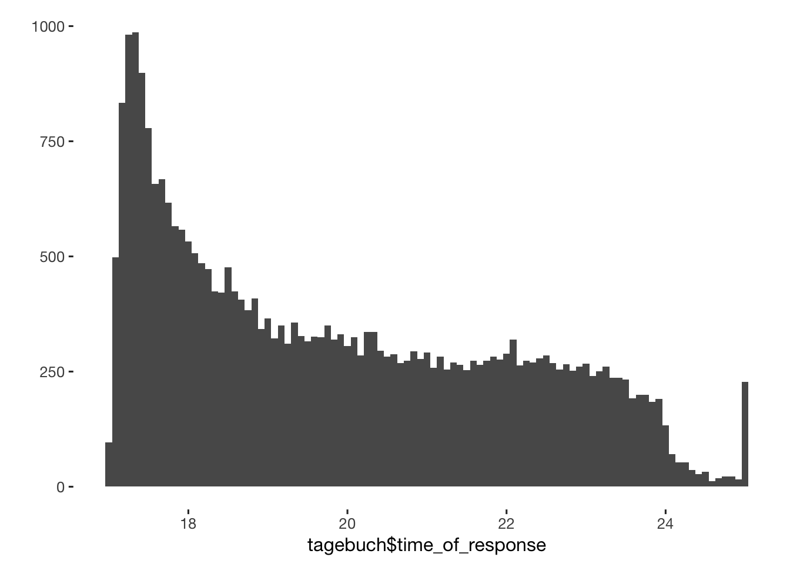
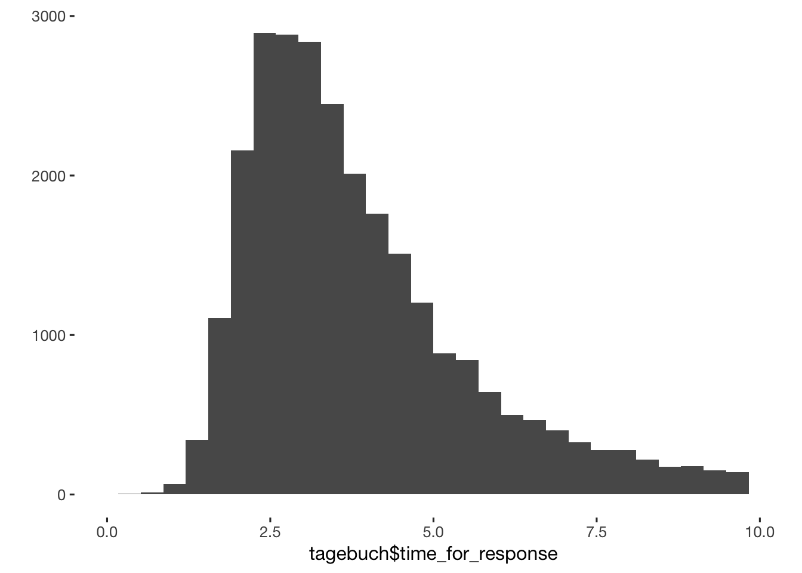
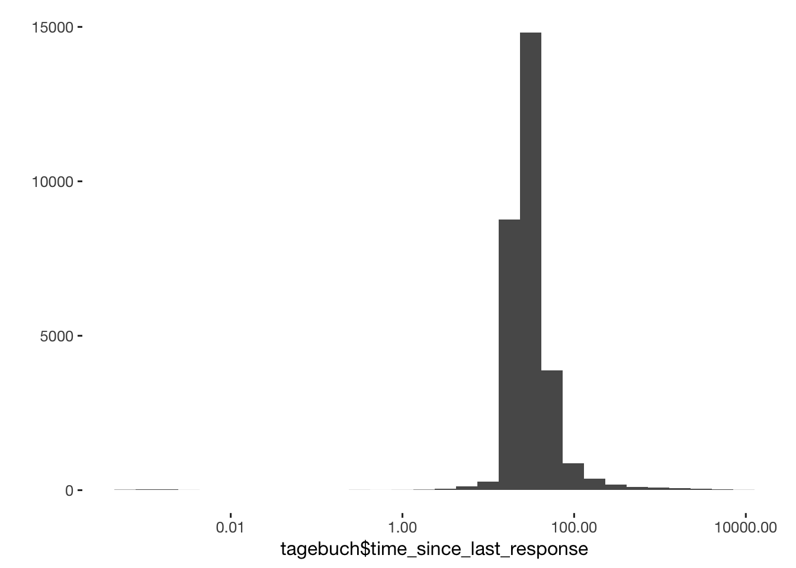
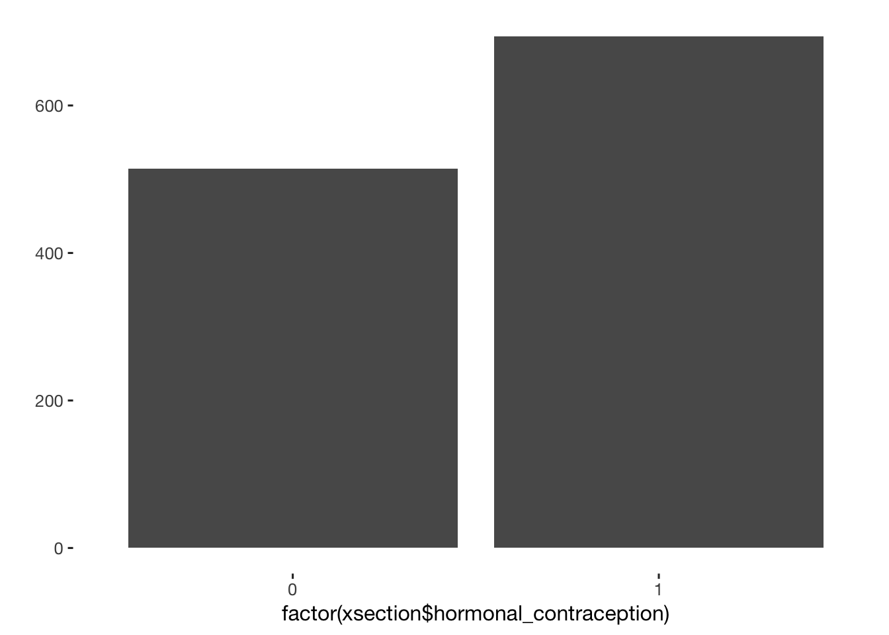
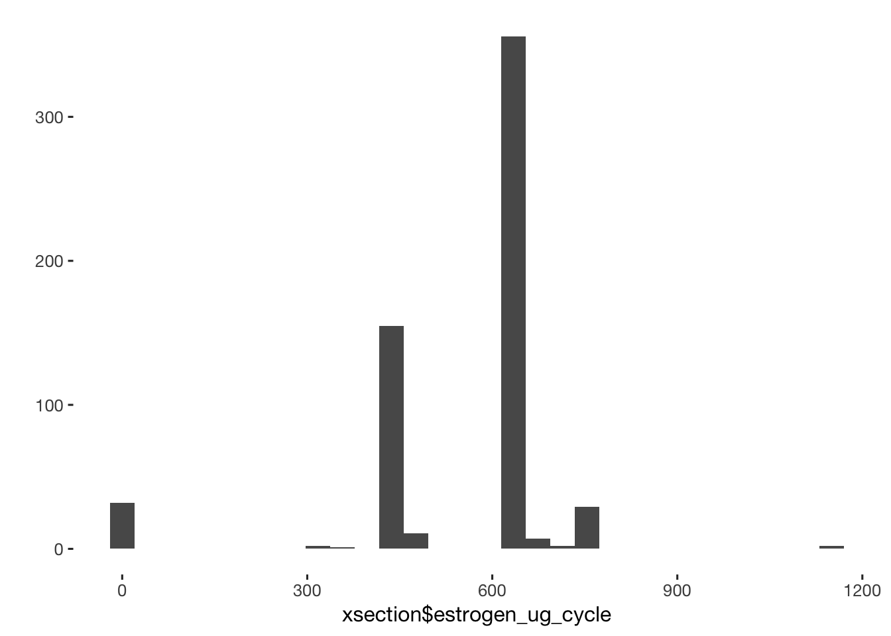
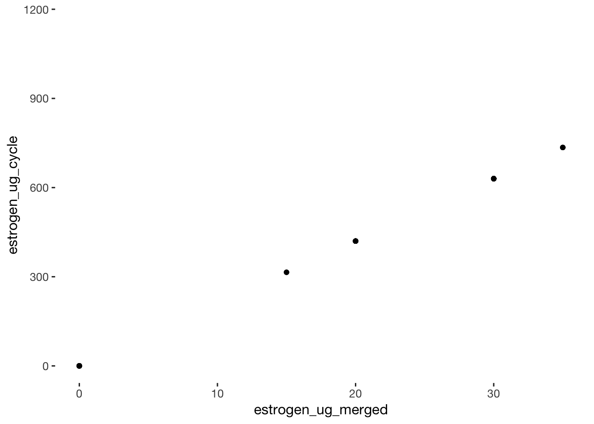
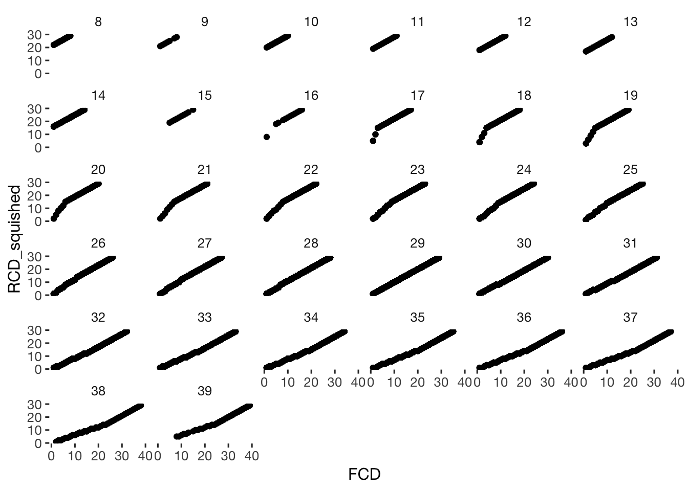
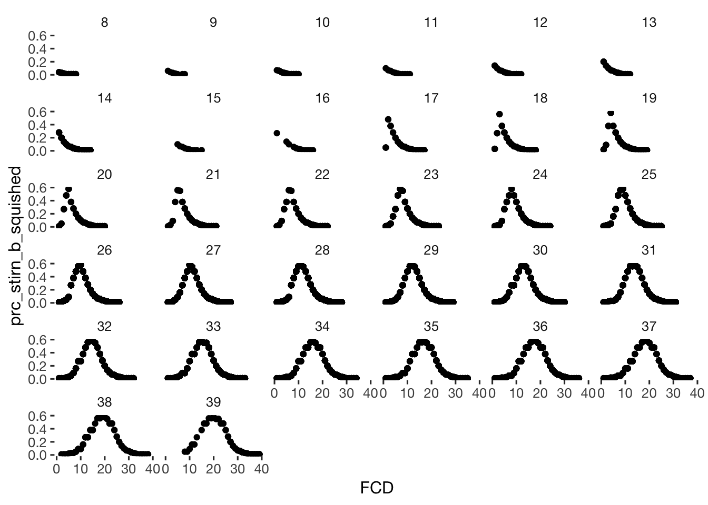

Data wrangling
Get data and merge
set up basics
library(knitr)
opts_chunk$set(tidy = FALSE,cache = F, warning = F, message = F)
## ausfuehren zeilenweise mit dem run-knopf (rechts oben in diesem fenster-segment)
## oder mit strg-enter
source("0_helpers.R")
# get credentials
source(".password.R")
formr_connect(credentials$user, credentials$password, host = credentials$host)
credentials = list(host = credentials$host)Load, clean, aggregate data
theme_set(theme_tufte(base_size = 12, base_family = 'Helvetica Neue'))
einleit = as.data.table(formr_raw_results("Einleitender_Fragebogen", host = credentials$host))
einleit_WAMS = as.data.table(formr_raw_results("Einleitender_Fragebogen_WAMS", host = credentials$host))
einleit = setDF(rbind.fill(einleit, einleit_WAMS))
rm(einleit_WAMS)
einleit_items = formr_items("Einleitender_Fragebogen_WAMS", host = credentials$host)
einleit = as.data.table(formr_post_process_results(einleit_items, einleit, compute_alphas = T,plot_likert = T ))

vorab_old = as.data.table(formr_raw_results("Vorab_Fragebogen1", host = credentials$host))
vorab_WAMS = as.data.table(formr_raw_results("Vorab_Fragebogen1_WAMS", host = credentials$host))
vorab_items = formr_items("Vorab_Fragebogen1_WAMS", host = credentials$host)
tagebuch = as.data.table(formr_results("Taeglicher_Fragebogen_1", host = credentials$host))
## Some items ( choice_of_clothing_2 choice_of_clothing_3 ) were negatively correlated with the total scale and
## probably should be reversed.
## To do this, run the function again with the 'check.keys=TRUE' option
## Reliability analysis choice_of_clothing
## Call: psych::alpha(x = stats::na.omit(results[, scale_item_names]),
## title = save_scale, check.keys = F)
##
## raw_alpha std.alpha G6(smc) average_r S/N ase mean sd
## 0.61 0.6 0.73 0.16 1.5 0.0031 3.2 0.72
##
## lower alpha upper 95% confidence boundaries
## 0.61 0.61 0.62
##
## Reliability if an item is dropped:
## raw_alpha std.alpha G6(smc) average_r S/N alpha se
## choice_of_clothing_1 0.61 0.59 0.74 0.17 1.43 0.0032
## choice_of_clothing_2 0.72 0.72 0.77 0.27 2.59 0.0023
## choice_of_clothing_3 0.70 0.68 0.76 0.23 2.14 0.0023
## choice_of_clothing_4 0.47 0.45 0.62 0.10 0.80 0.0045
## choice_of_clothing_5 0.52 0.49 0.65 0.12 0.98 0.0041
## choice_of_clothing_6 0.51 0.49 0.66 0.12 0.95 0.0041
## choice_of_clothing_7 0.47 0.45 0.61 0.10 0.82 0.0045
## choice_of_clothing_8 0.53 0.51 0.68 0.13 1.03 0.0040
##
## Item statistics
## n raw.r std.r r.cor r.drop mean sd
## choice_of_clothing_1 29967 0.465 0.444 0.275 0.22 3.2 1.5
## choice_of_clothing_2 29967 -0.105 -0.069 -0.260 -0.30 4.5 1.2
## choice_of_clothing_3 29967 0.093 0.112 -0.068 -0.15 3.7 1.4
## choice_of_clothing_4 29967 0.793 0.786 0.815 0.67 3.1 1.4
## choice_of_clothing_5 29967 0.691 0.687 0.665 0.54 2.1 1.3
## choice_of_clothing_6 29967 0.706 0.700 0.654 0.55 3.7 1.4
## choice_of_clothing_7 29967 0.784 0.779 0.817 0.66 2.5 1.4
## choice_of_clothing_8 29967 0.663 0.655 0.597 0.48 2.7 1.4
##
## Non missing response frequency for each item
## 1 2 3 4 5 6 miss
## choice_of_clothing_1 0.22 0.11 0.20 0.26 0.15 0.06 0
## choice_of_clothing_2 0.02 0.03 0.11 0.31 0.29 0.24 0
## choice_of_clothing_3 0.09 0.10 0.20 0.30 0.21 0.10 0
## choice_of_clothing_4 0.19 0.14 0.23 0.27 0.13 0.04 0
## choice_of_clothing_5 0.49 0.17 0.17 0.11 0.05 0.01 0
## choice_of_clothing_6 0.12 0.07 0.16 0.35 0.22 0.08 0
## choice_of_clothing_7 0.35 0.17 0.23 0.16 0.07 0.02 0
## choice_of_clothing_8 0.29 0.15 0.24 0.20 0.09 0.03 0
##
## Reliability analysis NARQ_admiration
## Call: psych::alpha(x = stats::na.omit(results[, scale_item_names]),
## title = save_scale, check.keys = F)
##
## raw_alpha std.alpha G6(smc) average_r S/N ase mean sd
## 0.87 0.87 0.83 0.68 6.5 0.0014 2.6 1.3
##
## lower alpha upper 95% confidence boundaries
## 0.86 0.87 0.87
##
## Reliability if an item is dropped:
## raw_alpha std.alpha G6(smc) average_r S/N alpha se
## NARQ_admiration_1 0.78 0.78 0.63 0.63 3.5 0.0026
## NARQ_admiration_2 0.75 0.75 0.60 0.60 3.0 0.0029
## NARQ_admiration_3 0.90 0.90 0.81 0.81 8.8 0.0012
##
## Item statistics
## n raw.r std.r r.cor r.drop mean sd
## NARQ_admiration_1 29963 0.91 0.91 0.86 0.78 2.6 1.5
## NARQ_admiration_2 29963 0.92 0.92 0.88 0.81 2.6 1.5
## NARQ_admiration_3 29963 0.84 0.84 0.68 0.65 2.6 1.5
##
## Non missing response frequency for each item
## 1 2 3 4 5 6 miss
## NARQ_admiration_1 0.35 0.14 0.20 0.2 0.08 0.03 0
## NARQ_admiration_2 0.36 0.13 0.19 0.2 0.08 0.03 0
## NARQ_admiration_3 0.37 0.13 0.19 0.2 0.08 0.03 0
##
## Reliability analysis NARQ_rivalry
## Call: psych::alpha(x = stats::na.omit(results[, scale_item_names]),
## title = save_scale, check.keys = F)
##
## raw_alpha std.alpha G6(smc) average_r S/N ase mean sd
## 0.76 0.76 0.7 0.51 3.2 0.0023 1.3 0.69
##
## lower alpha upper 95% confidence boundaries
## 0.76 0.76 0.77
##
## Reliability if an item is dropped:
## raw_alpha std.alpha G6(smc) average_r S/N alpha se
## NARQ_rivalry_1 0.64 0.65 0.48 0.48 1.8 0.0041
## NARQ_rivalry_2 0.56 0.57 0.39 0.39 1.3 0.0050
## NARQ_rivalry_3 0.80 0.80 0.67 0.67 4.0 0.0023
##
## Item statistics
## n raw.r std.r r.cor r.drop mean sd
## NARQ_rivalry_1 29962 0.85 0.84 0.73 0.63 1.3 0.88
## NARQ_rivalry_2 29962 0.89 0.87 0.80 0.70 1.3 0.90
## NARQ_rivalry_3 29962 0.72 0.76 0.54 0.48 1.2 0.72
##
## Non missing response frequency for each item
## 1 2 3 4 5 6 miss
## NARQ_rivalry_1 0.82 0.08 0.05 0.03 0.01 0.01 0
## NARQ_rivalry_2 0.86 0.06 0.03 0.03 0.01 0.01 0
## NARQ_rivalry_3 0.87 0.06 0.03 0.02 0.01 0.00 0
##
## Reliability analysis male_jealousy
## Call: psych::alpha(x = stats::na.omit(results[, scale_item_names]),
## title = save_scale, check.keys = F)
##
## raw_alpha std.alpha G6(smc) average_r S/N ase mean sd
## 0.54 0.56 0.46 0.3 1.3 0.0044 1.3 0.64
##
## lower alpha upper 95% confidence boundaries
## 0.54 0.54 0.55
##
## Reliability if an item is dropped:
## raw_alpha std.alpha G6(smc) average_r S/N alpha se
## male_jealousy_1 0.38 0.40 0.25 0.25 0.66 0.0067
## male_jealousy_2 0.48 0.50 0.33 0.33 1.00 0.0056
## male_jealousy_3 0.47 0.47 0.30 0.30 0.88 0.0062
##
## Item statistics
## n raw.r std.r r.cor r.drop mean sd
## male_jealousy_1 29962 0.78 0.75 0.54 0.40 1.4 0.96
## male_jealousy_2 29962 0.75 0.71 0.45 0.34 1.4 0.98
## male_jealousy_3 29962 0.65 0.72 0.48 0.36 1.2 0.68
##
## Non missing response frequency for each item
## 1 2 3 4 5 6 miss
## male_jealousy_1 0.82 0.07 0.05 0.04 0.01 0.01 0
## male_jealousy_2 0.83 0.06 0.04 0.04 0.01 0.01 0
## male_jealousy_3 0.92 0.04 0.02 0.01 0.01 0.01 0
##
## Reliability analysis male_mate_retention
## Call: psych::alpha(x = stats::na.omit(results[, scale_item_names]),
## title = save_scale, check.keys = F)
##
## raw_alpha std.alpha G6(smc) average_r S/N ase mean sd
## 0.31 0.31 0.18 0.18 0.45 0.0079 3.2 1.5
##
## lower alpha upper 95% confidence boundaries
## 0.29 0.31 0.32
##
## Reliability if an item is dropped:
## raw_alpha std.alpha G6(smc) average_r S/N alpha se
## male_mate_retention_1 0.184 0.18 0.034 0.18 NA NA
## male_mate_retention_2 0.034 0.18 NA NA 0.18 0.0025
##
## Item statistics
## n raw.r std.r r.cor r.drop mean sd
## male_mate_retention_1 29962 0.73 0.77 0.33 0.18 2.3 1.8
## male_mate_retention_2 29962 0.81 0.77 0.33 0.18 4.0 2.1
##
## Non missing response frequency for each item
## 1 2 3 4 5 6 miss
## male_mate_retention_1 0.59 0.06 0.07 0.12 0.07 0.1 0
## male_mate_retention_2 0.25 0.04 0.07 0.12 0.12 0.4 0
##
## Reliability analysis attention
## Call: psych::alpha(x = stats::na.omit(results[, scale_item_names]),
## title = save_scale, check.keys = F)
##
## raw_alpha std.alpha G6(smc) average_r S/N ase mean sd
## 0.74 0.75 0.59 0.59 2.9 0.0029 3.8 1.5
##
## lower alpha upper 95% confidence boundaries
## 0.74 0.74 0.75
##
## Reliability if an item is dropped:
## raw_alpha std.alpha G6(smc) average_r S/N alpha se
## attention_1 0.59 0.59 0.35 0.59 NA NA
## attention_2 0.35 0.59 NA NA 0.59 0.0045
##
## Item statistics
## n raw.r std.r r.cor r.drop mean sd
## attention_1 29960 0.88 0.89 0.69 0.59 4.3 1.5
## attention_2 29960 0.91 0.89 0.69 0.59 3.3 1.8
##
## Non missing response frequency for each item
## 1 2 3 4 5 6 miss
## attention_1 0.10 0.05 0.10 0.26 0.24 0.25 0
## attention_2 0.26 0.11 0.17 0.18 0.14 0.14 0


abschluss = as.data.table(formr_results("Abschluss_Fragebogen_1", host = credentials$host))


nachbe = formr_results("Nachbefragung_Menstruation", host = credentials$host) %>% as.data.table()
nachbe_other_hormonal = as.data.table(formr_results("Nachbefragung_other_hormonal", compute_alphas = T, host = credentials$host))Eliminate duplicates due to testing, errors
test_sessions = c(einleit[duplicated(session), session], "616ccf34994fcf7fa170a49c676496a96b26e9315ee81180939fc8bd951ea315")
einleit = einleit[ !session %in% test_sessions, ]
einleit = einleit[ !is.na(agreement), ]
stopifnot(0 == sum(duplicated(einleit$session)))
vorab_old = vorab_old[ !session %in% test_sessions, ]
vorab_WAMS = vorab_WAMS[ !session %in% test_sessions, ]
vorab = setDF(rbind.fill(vorab_old, vorab_WAMS))
vorab = as.data.table(formr_post_process_results(vorab_items, vorab,compute_alphas = T,plot_likert = T ))##
## Reliability analysis attractiveness_finance
## Call: psych::alpha(x = stats::na.omit(results[, scale_item_names]),
## title = save_scale, check.keys = F)
##
## raw_alpha std.alpha G6(smc) average_r S/N ase mean sd
## 0.73 0.74 0.58 0.58 2.8 0.014 2.9 1
##
## lower alpha upper 95% confidence boundaries
## 0.7 0.73 0.76
##
## Reliability if an item is dropped:
## raw_alpha std.alpha G6(smc) average_r S/N alpha se
## attractiveness_finance_1 0.58 0.58 0.34 0.58 NA NA
## attractiveness_finance_2 0.34 0.58 NA NA 0.58 0.021
##
## Item statistics
## n raw.r std.r r.cor r.drop mean sd
## attractiveness_finance_1 1373 0.87 0.89 0.68 0.58 3.0 1.1
## attractiveness_finance_2 1373 0.91 0.89 0.68 0.58 2.7 1.3
##
## Non missing response frequency for each item
## 1 2 3 4 5 miss
## attractiveness_finance_1 0.08 0.26 0.31 0.29 0.06 0
## attractiveness_finance_2 0.17 0.32 0.23 0.14 0.13 0
##
## Reliability analysis SOI_R
## Call: psych::alpha(x = stats::na.omit(results[, scale_item_names]),
## title = save_scale, check.keys = F)
##
## raw_alpha std.alpha G6(smc) average_r S/N ase mean sd
## 0.85 0.84 0.88 0.38 5.4 0.006 2.5 0.81
##
## lower alpha upper 95% confidence boundaries
## 0.84 0.85 0.86
##
## Reliability if an item is dropped:
## raw_alpha std.alpha G6(smc) average_r S/N alpha se
## SOI_R_1 0.85 0.85 0.89 0.42 5.8 0.0062
## SOI_R_2 0.84 0.83 0.85 0.38 4.9 0.0065
## SOI_R_3 0.83 0.82 0.84 0.36 4.6 0.0069
## SOI_R_9 0.84 0.83 0.87 0.39 5.0 0.0063
## SOI_R_7 0.84 0.83 0.86 0.38 4.8 0.0064
## SOI_R_8 0.84 0.83 0.87 0.39 5.0 0.0063
## SOI_R_4 0.83 0.82 0.86 0.37 4.6 0.0071
## SOI_R_5 0.82 0.81 0.85 0.35 4.4 0.0075
## SOI_R_6 0.82 0.81 0.85 0.35 4.4 0.0076
##
## Item statistics
## n raw.r std.r r.cor r.drop mean sd
## SOI_R_1 1209 0.40 0.47 0.34 0.33 2.2 0.63
## SOI_R_2 1209 0.66 0.65 0.64 0.55 2.1 1.21
## SOI_R_3 1209 0.74 0.73 0.73 0.64 2.3 1.32
## SOI_R_9 1209 0.59 0.62 0.55 0.49 2.1 0.99
## SOI_R_7 1209 0.64 0.67 0.63 0.54 2.5 1.14
## SOI_R_8 1209 0.58 0.62 0.56 0.48 2.2 0.98
## SOI_R_4 1209 0.75 0.71 0.68 0.65 3.5 1.38
## SOI_R_5 1209 0.80 0.77 0.74 0.70 2.7 1.47
## SOI_R_6 1209 0.81 0.78 0.76 0.72 3.3 1.46
##
## Non missing response frequency for each item
## 1 2 3 4 5 miss
## SOI_R_1 0.07 0.74 0.14 0.04 0.01 0
## SOI_R_2 0.43 0.21 0.21 0.10 0.05 0
## SOI_R_3 0.41 0.17 0.22 0.12 0.08 0
## SOI_R_9 0.29 0.44 0.17 0.08 0.02 0
## SOI_R_7 0.20 0.39 0.20 0.15 0.06 0
## SOI_R_8 0.23 0.46 0.19 0.09 0.03 0
## SOI_R_4 0.12 0.15 0.17 0.25 0.32 0
## SOI_R_5 0.29 0.21 0.14 0.20 0.17 0
## SOI_R_6 0.17 0.15 0.15 0.24 0.29 0
## Some items ( MV_1 MV_2 ) were negatively correlated with the total scale and
## probably should be reversed.
## To do this, run the function again with the 'check.keys=TRUE' option
## Reliability analysis MV
## Call: psych::alpha(x = stats::na.omit(results[, scale_item_names]),
## title = save_scale, check.keys = F)
##
## raw_alpha std.alpha G6(smc) average_r S/N ase mean sd
## 0.35 0.41 0.62 0.12 0.69 0.032 3.5 0.56
##
## lower alpha upper 95% confidence boundaries
## 0.28 0.35 0.41
##
## Reliability if an item is dropped:
## raw_alpha std.alpha G6(smc) average_r S/N alpha se
## MV_1 0.36 0.48 0.64 0.190 0.94 0.031
## MV_2 0.55 0.57 0.66 0.248 1.32 0.021
## MV_3 0.14 0.16 0.41 0.045 0.19 0.042
## MV_4 0.16 0.18 0.40 0.052 0.22 0.041
## MV_5 0.20 0.23 0.54 0.071 0.31 0.040
##
## Item statistics
## n raw.r std.r r.cor r.drop mean sd
## MV_1 1244 0.45 0.39 0.158 0.090 3.8 1.03
## MV_2 1244 0.37 0.27 0.017 -0.096 2.8 1.29
## MV_3 1244 0.64 0.71 0.717 0.383 3.9 0.90
## MV_4 1244 0.63 0.70 0.716 0.342 3.5 0.97
## MV_5 1244 0.62 0.65 0.545 0.279 3.5 1.10
##
## Non missing response frequency for each item
## 1 2 3 4 5 miss
## MV_1 0.02 0.09 0.23 0.35 0.31 0
## MV_2 0.18 0.29 0.23 0.17 0.13 0
## MV_3 0.01 0.07 0.19 0.48 0.25 0
## MV_4 0.03 0.11 0.33 0.39 0.14 0
## MV_5 0.06 0.13 0.22 0.41 0.18 0
## Some items ( MV_P_1 MV_P_2 ) were negatively correlated with the total scale and
## probably should be reversed.
## To do this, run the function again with the 'check.keys=TRUE' option
## Reliability analysis MV_P
## Call: psych::alpha(x = stats::na.omit(results[, scale_item_names]),
## title = save_scale, check.keys = F)
##
## raw_alpha std.alpha G6(smc) average_r S/N ase mean sd
## 0.3 0.35 0.54 0.099 0.55 0.033 3.3 0.53
##
## lower alpha upper 95% confidence boundaries
## 0.24 0.3 0.37
##
## Reliability if an item is dropped:
## raw_alpha std.alpha G6(smc) average_r S/N alpha se
## MV_P_1 0.31 0.41 0.55 0.147 0.69 0.033
## MV_P_2 0.50 0.53 0.60 0.220 1.13 0.023
## MV_P_3 0.11 0.12 0.31 0.033 0.14 0.043
## MV_P_4 0.10 0.11 0.29 0.030 0.12 0.043
## MV_P_5 0.19 0.22 0.47 0.065 0.28 0.040
##
## Item statistics
## n raw.r std.r r.cor r.drop mean sd
## MV_P_1 1244 0.48 0.42 0.15 0.086 3.6 1.05
## MV_P_2 1244 0.35 0.25 -0.04 -0.110 2.8 1.19
## MV_P_3 1244 0.61 0.68 0.68 0.318 3.6 0.92
## MV_P_4 1244 0.62 0.69 0.70 0.327 3.3 0.92
## MV_P_5 1244 0.57 0.61 0.45 0.215 3.1 1.03
##
## Non missing response frequency for each item
## 1 2 3 4 5 miss
## MV_P_1 0.04 0.13 0.27 0.37 0.19 0
## MV_P_2 0.16 0.27 0.28 0.20 0.09 0
## MV_P_3 0.01 0.11 0.29 0.43 0.17 0
## MV_P_4 0.02 0.15 0.40 0.33 0.09 0
## MV_P_5 0.07 0.21 0.37 0.28 0.07 0
##
## Reliability analysis ZIP
## Call: psych::alpha(x = stats::na.omit(results[, scale_item_names]),
## title = save_scale, check.keys = F)
##
## raw_alpha std.alpha G6(smc) average_r S/N ase mean sd
## 0.89 0.89 0.89 0.55 8.5 0.0045 4.1 0.73
##
## lower alpha upper 95% confidence boundaries
## 0.88 0.89 0.9
##
## Reliability if an item is dropped:
## raw_alpha std.alpha G6(smc) average_r S/N alpha se
## ZIP_1 0.88 0.88 0.87 0.55 7.3 0.0052
## ZIP_5 0.87 0.87 0.86 0.54 6.9 0.0055
## ZIP_6 0.89 0.89 0.88 0.57 8.0 0.0049
## ZIP_2 0.86 0.86 0.85 0.51 6.3 0.0059
## ZIP_3 0.87 0.87 0.87 0.54 7.0 0.0054
## ZIP_7 0.89 0.89 0.88 0.58 8.2 0.0047
## ZIP_4 0.88 0.88 0.87 0.55 7.3 0.0052
##
## Item statistics
## n raw.r std.r r.cor r.drop mean sd
## ZIP_1 1244 0.78 0.78 0.73 0.69 4.0 0.90
## ZIP_5 1244 0.82 0.82 0.78 0.74 3.9 1.04
## ZIP_6 1244 0.70 0.72 0.65 0.61 4.5 0.77
## ZIP_2 1244 0.88 0.88 0.87 0.82 4.1 0.93
## ZIP_3 1244 0.81 0.81 0.77 0.73 4.2 0.93
## ZIP_7 1244 0.71 0.70 0.63 0.59 3.4 0.99
## ZIP_4 1244 0.78 0.78 0.73 0.69 4.4 0.93
##
## Non missing response frequency for each item
## 1 2 3 4 5 miss
## ZIP_1 0.01 0.06 0.17 0.45 0.31 0
## ZIP_5 0.02 0.10 0.18 0.35 0.36 0
## ZIP_6 0.01 0.02 0.07 0.24 0.66 0
## ZIP_2 0.01 0.05 0.14 0.37 0.43 0
## ZIP_3 0.01 0.05 0.16 0.34 0.44 0
## ZIP_7 0.05 0.15 0.28 0.44 0.09 0
## ZIP_4 0.01 0.05 0.10 0.17 0.67 0
##
## Reliability analysis RJS
## Call: psych::alpha(x = stats::na.omit(results[, scale_item_names]),
## title = save_scale, check.keys = F)
##
## raw_alpha std.alpha G6(smc) average_r S/N ase mean sd
## 0.91 0.91 0.9 0.62 9.7 0.004 2.3 0.95
##
## lower alpha upper 95% confidence boundaries
## 0.9 0.91 0.91
##
## Reliability if an item is dropped:
## raw_alpha std.alpha G6(smc) average_r S/N alpha se
## RJS_1 0.90 0.90 0.88 0.64 8.8 0.0044
## RJS_2 0.90 0.90 0.88 0.64 8.8 0.0045
## RJS_3 0.88 0.88 0.86 0.60 7.4 0.0053
## RJS_4 0.90 0.90 0.89 0.65 9.4 0.0043
## RJS_5 0.87 0.87 0.86 0.58 7.0 0.0056
## RJS_6 0.88 0.88 0.87 0.60 7.6 0.0051
##
## Item statistics
## n raw.r std.r r.cor r.drop mean sd
## RJS_1 1244 0.80 0.79 0.72 0.69 2.7 1.3
## RJS_2 1244 0.78 0.79 0.72 0.68 1.9 1.0
## RJS_3 1244 0.87 0.87 0.85 0.81 2.7 1.2
## RJS_4 1244 0.75 0.76 0.68 0.65 1.9 1.0
## RJS_5 1244 0.90 0.90 0.89 0.85 2.3 1.2
## RJS_6 1244 0.86 0.86 0.83 0.79 2.1 1.2
##
## Non missing response frequency for each item
## 1 2 3 4 5 miss
## RJS_1 0.23 0.22 0.27 0.19 0.09 0
## RJS_2 0.43 0.34 0.13 0.08 0.02 0
## RJS_3 0.18 0.30 0.25 0.19 0.07 0
## RJS_4 0.45 0.33 0.13 0.07 0.03 0
## RJS_5 0.32 0.27 0.22 0.15 0.05 0
## RJS_6 0.38 0.31 0.16 0.10 0.05 0
##
## Reliability analysis CJS
## Call: psych::alpha(x = stats::na.omit(results[, scale_item_names]),
## title = save_scale, check.keys = F)
##
## raw_alpha std.alpha G6(smc) average_r S/N ase mean sd
## 0.88 0.88 0.87 0.54 7.2 0.0053 2.4 0.9
##
## lower alpha upper 95% confidence boundaries
## 0.87 0.88 0.89
##
## Reliability if an item is dropped:
## raw_alpha std.alpha G6(smc) average_r S/N alpha se
## CJS_2 0.86 0.86 0.84 0.54 5.9 0.0063
## CJS_5 0.87 0.87 0.85 0.57 6.7 0.0058
## CJS_6 0.84 0.84 0.82 0.51 5.1 0.0074
## CJS_1 0.84 0.84 0.83 0.52 5.4 0.0068
## CJS_3 0.87 0.87 0.86 0.57 6.7 0.0057
## CJS_4 0.86 0.86 0.85 0.55 6.0 0.0063
##
## Item statistics
## n raw.r std.r r.cor r.drop mean sd
## CJS_2 1244 0.79 0.79 0.74 0.68 2.4 1.20
## CJS_5 1244 0.72 0.72 0.65 0.60 1.9 1.06
## CJS_6 1244 0.88 0.87 0.86 0.79 2.6 1.32
## CJS_1 1244 0.84 0.84 0.82 0.76 2.5 1.09
## CJS_3 1244 0.73 0.73 0.63 0.60 3.2 1.14
## CJS_4 1244 0.77 0.78 0.72 0.68 1.9 0.98
##
## Non missing response frequency for each item
## 1 2 3 4 5 miss
## CJS_2 0.27 0.29 0.24 0.14 0.06 0
## CJS_5 0.48 0.28 0.14 0.08 0.02 0
## CJS_6 0.27 0.26 0.20 0.18 0.10 0
## CJS_1 0.19 0.34 0.27 0.15 0.04 0
## CJS_3 0.09 0.18 0.27 0.33 0.13 0
## CJS_4 0.41 0.37 0.13 0.07 0.02 0
##
## Reliability analysis SJS
## Call: psych::alpha(x = stats::na.omit(results[, scale_item_names]),
## title = save_scale, check.keys = F)
##
## raw_alpha std.alpha G6(smc) average_r S/N ase mean sd
## 0.77 0.78 0.75 0.37 3.5 0.01 1.2 0.27
##
## lower alpha upper 95% confidence boundaries
## 0.75 0.77 0.79
##
## Reliability if an item is dropped:
## raw_alpha std.alpha G6(smc) average_r S/N alpha se
## SJS_1 0.72 0.73 0.69 0.35 2.7 0.0123
## SJS_4 0.71 0.73 0.69 0.35 2.6 0.0129
## SJS_6 0.73 0.75 0.71 0.37 2.9 0.0120
## SJS_2 0.74 0.75 0.71 0.37 3.0 0.0115
## SJS_3 0.72 0.73 0.70 0.35 2.7 0.0124
## SJS_5 0.77 0.78 0.74 0.41 3.5 0.0099
##
## Item statistics
## n raw.r std.r r.cor r.drop mean sd
## SJS_1 1244 0.71 0.73 0.67 0.57 1.2 0.36
## SJS_4 1244 0.75 0.74 0.68 0.60 1.2 0.43
## SJS_6 1244 0.70 0.68 0.59 0.52 1.3 0.44
## SJS_2 1244 0.62 0.67 0.57 0.49 1.1 0.29
## SJS_3 1244 0.71 0.72 0.65 0.56 1.2 0.38
## SJS_5 1244 0.61 0.58 0.43 0.38 1.3 0.46
##
## Non missing response frequency for each item
## 1 2 miss
## SJS_1 0.84 0.16 0
## SJS_4 0.76 0.24 0
## SJS_6 0.74 0.26 0
## SJS_2 0.91 0.09 0
## SJS_3 0.82 0.18 0
## SJS_5 0.70 0.30 0
##
## Reliability analysis NARQ
## Call: psych::alpha(x = stats::na.omit(results[, scale_item_names]),
## title = save_scale, check.keys = F)
##
## raw_alpha std.alpha G6(smc) average_r S/N ase mean sd
## 0.83 0.82 0.87 0.21 4.7 0.0073 2.4 0.51
##
## lower alpha upper 95% confidence boundaries
## 0.81 0.83 0.84
##
## Reliability if an item is dropped:
## raw_alpha std.alpha G6(smc) average_r S/N alpha se
## NARQ_2 0.82 0.82 0.86 0.21 4.4 0.0076
## NARQ_11 0.83 0.83 0.87 0.22 4.8 0.0071
## NARQ_5 0.82 0.82 0.86 0.21 4.4 0.0077
## NARQ_3 0.81 0.81 0.85 0.20 4.2 0.0080
## NARQ_15 0.81 0.81 0.86 0.20 4.3 0.0078
## NARQ_18 0.82 0.82 0.87 0.22 4.7 0.0073
## NARQ_16 0.81 0.81 0.86 0.20 4.3 0.0077
## NARQ_1 0.82 0.81 0.86 0.20 4.4 0.0077
## NARQ_14 0.82 0.82 0.87 0.22 4.7 0.0074
## NARQ_17 0.82 0.81 0.86 0.20 4.4 0.0076
## NARQ_4 0.81 0.81 0.85 0.20 4.3 0.0078
## NARQ_13 0.82 0.82 0.86 0.21 4.4 0.0075
## NARQ_6 0.82 0.81 0.86 0.20 4.4 0.0076
## NARQ_7 0.82 0.82 0.86 0.21 4.5 0.0075
## NARQ_12 0.81 0.81 0.86 0.20 4.3 0.0077
## NARQ_8 0.81 0.81 0.86 0.20 4.3 0.0079
## NARQ_9 0.81 0.81 0.85 0.20 4.3 0.0078
## NARQ_10 0.81 0.81 0.86 0.20 4.3 0.0077
##
## Item statistics
## n raw.r std.r r.cor r.drop mean sd
## NARQ_2 1208 0.48 0.49 0.44 0.40 1.9 0.94
## NARQ_11 1208 0.26 0.26 0.17 0.15 3.1 1.03
## NARQ_5 1208 0.52 0.49 0.44 0.42 3.7 1.07
## NARQ_3 1208 0.63 0.61 0.60 0.55 2.8 1.10
## NARQ_15 1208 0.58 0.56 0.54 0.49 2.6 1.17
## NARQ_18 1208 0.35 0.34 0.28 0.25 3.2 0.93
## NARQ_16 1208 0.56 0.54 0.53 0.47 2.8 1.07
## NARQ_1 1208 0.54 0.52 0.48 0.44 3.1 1.10
## NARQ_14 1208 0.29 0.36 0.29 0.24 1.1 0.45
## NARQ_17 1208 0.48 0.52 0.49 0.40 1.5 0.81
## NARQ_4 1208 0.56 0.57 0.55 0.48 2.0 0.99
## NARQ_13 1208 0.46 0.49 0.46 0.37 1.6 0.94
## NARQ_6 1208 0.54 0.53 0.51 0.44 2.7 1.23
## NARQ_7 1208 0.47 0.45 0.43 0.37 3.1 1.01
## NARQ_12 1208 0.55 0.56 0.55 0.48 1.8 0.91
## NARQ_8 1208 0.59 0.58 0.55 0.51 2.3 1.09
## NARQ_9 1208 0.58 0.58 0.57 0.49 2.0 1.12
## NARQ_10 1208 0.54 0.54 0.51 0.45 1.9 1.06
##
## Non missing response frequency for each item
## 1 2 3 4 5 miss
## NARQ_2 0.45 0.31 0.18 0.05 0.01 0
## NARQ_11 0.05 0.24 0.33 0.29 0.09 0
## NARQ_5 0.04 0.10 0.23 0.37 0.27 0
## NARQ_3 0.14 0.26 0.33 0.22 0.06 0
## NARQ_15 0.22 0.27 0.27 0.19 0.05 0
## NARQ_18 0.04 0.18 0.42 0.29 0.07 0
## NARQ_16 0.13 0.27 0.34 0.22 0.05 0
## NARQ_1 0.11 0.18 0.37 0.25 0.09 0
## NARQ_14 0.93 0.04 0.02 0.00 0.00 0
## NARQ_17 0.68 0.20 0.09 0.03 0.01 0
## NARQ_4 0.35 0.38 0.18 0.07 0.02 0
## NARQ_13 0.62 0.21 0.11 0.05 0.01 0
## NARQ_6 0.19 0.28 0.22 0.23 0.08 0
## NARQ_7 0.06 0.21 0.38 0.27 0.07 0
## NARQ_12 0.48 0.35 0.11 0.05 0.01 0
## NARQ_8 0.28 0.29 0.28 0.13 0.02 0
## NARQ_9 0.41 0.29 0.18 0.08 0.04 0
## NARQ_10 0.46 0.27 0.16 0.09 0.02 0
##
## Reliability analysis BFI_open
## Call: psych::alpha(x = stats::na.omit(results[, scale_item_names]),
## title = save_scale, check.keys = F)
##
## raw_alpha std.alpha G6(smc) average_r S/N ase mean sd
## 0.82 0.82 0.84 0.32 4.6 0.0076 3.7 0.65
##
## lower alpha upper 95% confidence boundaries
## 0.81 0.82 0.84
##
## Reliability if an item is dropped:
## raw_alpha std.alpha G6(smc) average_r S/N alpha se
## BFI_open_1 0.79 0.79 0.80 0.30 3.9 0.0088
## BFI_open_2 0.81 0.81 0.82 0.32 4.2 0.0083
## BFI_open_3 0.82 0.82 0.83 0.33 4.5 0.0079
## BFI_open_4 0.80 0.81 0.82 0.32 4.2 0.0083
## BFI_open_5 0.79 0.79 0.80 0.30 3.8 0.0088
## BFI_open_6 0.79 0.80 0.80 0.30 3.9 0.0089
## BFI_open_8 0.80 0.80 0.82 0.31 4.0 0.0085
## BFI_open_10 0.81 0.81 0.83 0.32 4.3 0.0081
## BFI_open_7 0.83 0.83 0.85 0.36 5.0 0.0071
## BFI_open_9 0.80 0.80 0.81 0.31 4.1 0.0085
##
## Item statistics
## n raw.r std.r r.cor r.drop mean sd
## BFI_open_1 1208 0.71 0.72 0.71 0.62 3.4 1.04
## BFI_open_2 1208 0.61 0.63 0.56 0.51 4.2 0.88
## BFI_open_3 1208 0.49 0.52 0.42 0.38 4.2 0.87
## BFI_open_4 1208 0.63 0.63 0.57 0.51 4.0 1.02
## BFI_open_5 1208 0.72 0.73 0.72 0.63 3.4 1.03
## BFI_open_6 1208 0.72 0.70 0.69 0.62 3.9 1.13
## BFI_open_8 1208 0.66 0.67 0.63 0.56 3.8 0.99
## BFI_open_10 1208 0.61 0.59 0.52 0.47 3.1 1.18
## BFI_open_7 1208 0.38 0.38 0.25 0.22 3.4 1.08
## BFI_open_9 1208 0.67 0.65 0.62 0.55 3.9 1.17
##
## Non missing response frequency for each item
## 1 2 3 4 5 miss
## BFI_open_1 0.04 0.17 0.29 0.36 0.14 0
## BFI_open_2 0.01 0.05 0.13 0.38 0.43 0
## BFI_open_3 0.01 0.04 0.15 0.37 0.43 0
## BFI_open_4 0.02 0.08 0.19 0.35 0.37 0
## BFI_open_5 0.05 0.14 0.32 0.36 0.13 0
## BFI_open_6 0.04 0.11 0.17 0.33 0.36 0
## BFI_open_8 0.02 0.09 0.21 0.42 0.26 0
## BFI_open_10 0.11 0.21 0.30 0.26 0.12 0
## BFI_open_7 0.05 0.14 0.31 0.33 0.17 0
## BFI_open_9 0.04 0.11 0.14 0.28 0.43 0
##
## Reliability analysis BFI_extra
## Call: psych::alpha(x = stats::na.omit(results[, scale_item_names]),
## title = save_scale, check.keys = F)
##
## raw_alpha std.alpha G6(smc) average_r S/N ase mean sd
## 0.88 0.88 0.88 0.47 7.1 0.0052 3.5 0.8
##
## lower alpha upper 95% confidence boundaries
## 0.87 0.88 0.89
##
## Reliability if an item is dropped:
## raw_alpha std.alpha G6(smc) average_r S/N alpha se
## BFI_extra_1 0.86 0.86 0.85 0.46 6.0 0.0062
## BFI_extra_3 0.88 0.88 0.87 0.50 7.0 0.0054
## BFI_extra_4 0.87 0.87 0.86 0.49 6.6 0.0056
## BFI_extra_6 0.88 0.88 0.87 0.50 7.0 0.0054
## BFI_extra_8 0.85 0.85 0.85 0.45 5.8 0.0064
## BFI_extra_2 0.85 0.85 0.84 0.45 5.7 0.0066
## BFI_extra_5 0.85 0.85 0.85 0.45 5.8 0.0064
## BFI_extra_7 0.87 0.86 0.86 0.48 6.3 0.0058
##
## Item statistics
## n raw.r std.r r.cor r.drop mean sd
## BFI_extra_1 1209 0.77 0.78 0.74 0.69 3.9 1.02
## BFI_extra_3 1209 0.61 0.63 0.55 0.50 3.5 0.97
## BFI_extra_4 1209 0.67 0.68 0.61 0.57 3.7 1.02
## BFI_extra_6 1209 0.62 0.63 0.55 0.51 3.4 1.04
## BFI_extra_8 1209 0.81 0.81 0.78 0.73 3.4 1.09
## BFI_extra_2 1209 0.83 0.82 0.81 0.76 3.4 1.19
## BFI_extra_5 1209 0.80 0.80 0.78 0.73 3.9 1.10
## BFI_extra_7 1209 0.74 0.72 0.67 0.63 2.8 1.26
##
## Non missing response frequency for each item
## 1 2 3 4 5 miss
## BFI_extra_1 0.02 0.10 0.17 0.39 0.33 0
## BFI_extra_3 0.03 0.12 0.33 0.38 0.14 0
## BFI_extra_4 0.03 0.11 0.23 0.42 0.21 0
## BFI_extra_6 0.04 0.16 0.27 0.40 0.14 0
## BFI_extra_8 0.05 0.14 0.29 0.33 0.18 0
## BFI_extra_2 0.07 0.18 0.24 0.32 0.19 0
## BFI_extra_5 0.03 0.10 0.18 0.33 0.36 0
## BFI_extra_7 0.18 0.28 0.21 0.23 0.10 0
##
## Reliability analysis BFI_consc
## Call: psych::alpha(x = stats::na.omit(results[, scale_item_names]),
## title = save_scale, check.keys = F)
##
## raw_alpha std.alpha G6(smc) average_r S/N ase mean sd
## 0.81 0.82 0.82 0.34 4.6 0.0081 3.5 0.68
##
## lower alpha upper 95% confidence boundaries
## 0.8 0.81 0.83
##
## Reliability if an item is dropped:
## raw_alpha std.alpha G6(smc) average_r S/N alpha se
## BFI_consc_1 0.78 0.79 0.78 0.32 3.7 0.0095
## BFI_consc_3 0.79 0.79 0.79 0.33 3.9 0.0091
## BFI_consc_5 0.79 0.80 0.79 0.33 4.0 0.0090
## BFI_consc_6 0.79 0.80 0.79 0.33 3.9 0.0091
## BFI_consc_7 0.80 0.81 0.80 0.34 4.2 0.0088
## BFI_consc_2 0.81 0.82 0.82 0.37 4.7 0.0081
## BFI_consc_9 0.80 0.81 0.80 0.34 4.2 0.0086
## BFI_consc_4 0.79 0.80 0.79 0.33 4.0 0.0092
## BFI_consc_8 0.79 0.80 0.80 0.34 4.1 0.0089
##
## Item statistics
## n raw.r std.r r.cor r.drop mean sd
## BFI_consc_1 1208 0.72 0.74 0.71 0.63 3.9 0.96
## BFI_consc_3 1208 0.66 0.69 0.65 0.57 4.1 0.87
## BFI_consc_5 1208 0.64 0.66 0.61 0.53 3.5 1.02
## BFI_consc_6 1208 0.67 0.68 0.63 0.56 3.7 0.99
## BFI_consc_7 1208 0.59 0.61 0.54 0.48 3.7 0.94
## BFI_consc_2 1208 0.49 0.49 0.38 0.34 3.5 1.08
## BFI_consc_9 1208 0.65 0.61 0.54 0.48 3.0 1.39
## BFI_consc_4 1208 0.68 0.66 0.60 0.55 3.1 1.19
## BFI_consc_8 1208 0.64 0.63 0.56 0.51 3.3 1.15
##
## Non missing response frequency for each item
## 1 2 3 4 5 miss
## BFI_consc_1 0.01 0.07 0.21 0.39 0.32 0
## BFI_consc_3 0.01 0.05 0.15 0.44 0.35 0
## BFI_consc_5 0.02 0.15 0.27 0.38 0.17 0
## BFI_consc_6 0.02 0.10 0.28 0.38 0.22 0
## BFI_consc_7 0.01 0.08 0.26 0.42 0.22 0
## BFI_consc_2 0.04 0.17 0.26 0.35 0.18 0
## BFI_consc_9 0.19 0.24 0.18 0.21 0.18 0
## BFI_consc_4 0.09 0.26 0.25 0.25 0.14 0
## BFI_consc_8 0.07 0.21 0.26 0.32 0.14 0
##
## Reliability analysis BFI_neuro
## Call: psych::alpha(x = stats::na.omit(results[, scale_item_names]),
## title = save_scale, check.keys = F)
##
## raw_alpha std.alpha G6(smc) average_r S/N ase mean sd
## 0.83 0.83 0.83 0.38 4.9 0.0075 3.1 0.75
##
## lower alpha upper 95% confidence boundaries
## 0.81 0.83 0.84
##
## Reliability if an item is dropped:
## raw_alpha std.alpha G6(smc) average_r S/N alpha se
## BFI_neuro_1 0.81 0.81 0.81 0.39 4.4 0.0083
## BFI_neuro_3 0.80 0.80 0.80 0.37 4.0 0.0088
## BFI_neuro_4 0.81 0.81 0.81 0.39 4.4 0.0083
## BFI_neuro_8 0.82 0.82 0.81 0.39 4.6 0.0080
## BFI_neuro_7 0.81 0.81 0.80 0.38 4.2 0.0086
## BFI_neuro_2 0.80 0.80 0.79 0.36 4.0 0.0089
## BFI_neuro_5 0.82 0.82 0.81 0.39 4.5 0.0081
## BFI_neuro_6 0.80 0.80 0.79 0.36 4.0 0.0088
##
## Item statistics
## n raw.r std.r r.cor r.drop mean sd
## BFI_neuro_1 1209 0.65 0.64 0.57 0.52 2.4 1.2
## BFI_neuro_3 1209 0.72 0.72 0.67 0.62 3.1 1.0
## BFI_neuro_4 1209 0.65 0.65 0.57 0.52 3.7 1.1
## BFI_neuro_8 1209 0.62 0.61 0.53 0.48 3.3 1.2
## BFI_neuro_7 1209 0.69 0.68 0.61 0.56 2.9 1.2
## BFI_neuro_2 1209 0.74 0.74 0.71 0.63 3.3 1.1
## BFI_neuro_5 1209 0.61 0.62 0.55 0.48 3.0 1.1
## BFI_neuro_6 1209 0.72 0.73 0.70 0.62 3.0 1.1
##
## Non missing response frequency for each item
## 1 2 3 4 5 miss
## BFI_neuro_1 0.29 0.31 0.22 0.13 0.06 0
## BFI_neuro_3 0.07 0.25 0.31 0.30 0.07 0
## BFI_neuro_4 0.03 0.14 0.20 0.33 0.30 0
## BFI_neuro_8 0.08 0.20 0.24 0.31 0.18 0
## BFI_neuro_7 0.11 0.31 0.25 0.23 0.09 0
## BFI_neuro_2 0.06 0.19 0.28 0.30 0.17 0
## BFI_neuro_5 0.07 0.26 0.32 0.27 0.07 0
## BFI_neuro_6 0.07 0.26 0.33 0.24 0.08 0
##
## Reliability analysis SGSE
## Call: psych::alpha(x = stats::na.omit(results[, scale_item_names]),
## title = save_scale, check.keys = F)
##
## raw_alpha std.alpha G6(smc) average_r S/N ase mean sd
## 0.84 0.84 0.83 0.52 5.4 0.0074 2.6 0.91
##
## lower alpha upper 95% confidence boundaries
## 0.83 0.84 0.86
##
## Reliability if an item is dropped:
## raw_alpha std.alpha G6(smc) average_r S/N alpha se
## SGSE_2 0.80 0.81 0.78 0.51 4.2 0.0094
## SGSE_5 0.86 0.86 0.84 0.61 6.2 0.0065
## SGSE_1 0.79 0.79 0.77 0.49 3.8 0.0102
## SGSE_4 0.80 0.81 0.77 0.51 4.1 0.0096
## SGSE_3 0.78 0.79 0.75 0.48 3.8 0.0102
##
## Item statistics
## n raw.r std.r r.cor r.drop mean sd
## SGSE_2 1209 0.79 0.80 0.73 0.67 2.7 1.1
## SGSE_5 1209 0.67 0.65 0.50 0.46 2.6 1.3
## SGSE_1 1209 0.83 0.83 0.79 0.72 2.6 1.1
## SGSE_4 1209 0.81 0.81 0.76 0.68 2.6 1.2
## SGSE_3 1209 0.84 0.84 0.81 0.73 2.6 1.1
##
## Non missing response frequency for each item
## 1 2 3 4 5 miss
## SGSE_2 0.14 0.34 0.29 0.19 0.04 0
## SGSE_5 0.22 0.30 0.20 0.19 0.09 0
## SGSE_1 0.18 0.32 0.28 0.16 0.07 0
## SGSE_4 0.20 0.31 0.24 0.16 0.09 0
## SGSE_3 0.16 0.34 0.27 0.17 0.06 0
##
## Reliability analysis BFI_agree
## Call: psych::alpha(x = stats::na.omit(results[, scale_item_names]),
## title = save_scale, check.keys = F)
##
## raw_alpha std.alpha G6(smc) average_r S/N ase mean sd
## 0.73 0.73 0.74 0.23 2.7 0.011 3.6 0.59
##
## lower alpha upper 95% confidence boundaries
## 0.71 0.73 0.75
##
## Reliability if an item is dropped:
## raw_alpha std.alpha G6(smc) average_r S/N alpha se
## BFI_agree_2 0.71 0.71 0.71 0.24 2.5 0.012
## BFI_agree_4 0.72 0.72 0.72 0.24 2.6 0.012
## BFI_agree_5 0.72 0.72 0.72 0.24 2.6 0.012
## BFI_agree_7 0.71 0.70 0.70 0.23 2.4 0.013
## BFI_agree_9 0.71 0.71 0.72 0.24 2.5 0.012
## BFI_agree_1 0.70 0.70 0.70 0.23 2.4 0.013
## BFI_agree_3 0.71 0.72 0.72 0.24 2.5 0.012
## BFI_agree_6 0.70 0.70 0.69 0.23 2.4 0.013
## BFI_agree_8 0.67 0.68 0.67 0.21 2.1 0.014
##
## Item statistics
## n raw.r std.r r.cor r.drop mean sd
## BFI_agree_2 1209 0.49 0.54 0.45 0.35 3.8 0.87
## BFI_agree_4 1209 0.54 0.51 0.40 0.35 3.2 1.23
## BFI_agree_5 1209 0.50 0.51 0.40 0.34 3.8 1.01
## BFI_agree_7 1209 0.54 0.59 0.52 0.42 4.1 0.80
## BFI_agree_9 1209 0.53 0.55 0.45 0.37 3.9 0.99
## BFI_agree_1 1209 0.60 0.59 0.52 0.44 2.9 1.07
## BFI_agree_3 1209 0.51 0.52 0.41 0.35 4.1 0.99
## BFI_agree_6 1209 0.64 0.59 0.55 0.46 3.1 1.27
## BFI_agree_8 1209 0.71 0.68 0.67 0.57 3.4 1.19
##
## Non missing response frequency for each item
## 1 2 3 4 5 miss
## BFI_agree_2 0.01 0.06 0.24 0.47 0.21 0
## BFI_agree_4 0.09 0.21 0.24 0.27 0.18 0
## BFI_agree_5 0.03 0.09 0.19 0.43 0.26 0
## BFI_agree_7 0.01 0.03 0.14 0.50 0.33 0
## BFI_agree_9 0.02 0.08 0.20 0.38 0.33 0
## BFI_agree_1 0.08 0.33 0.30 0.23 0.07 0
## BFI_agree_3 0.01 0.07 0.15 0.34 0.42 0
## BFI_agree_6 0.10 0.27 0.21 0.24 0.17 0
## BFI_agree_8 0.07 0.19 0.23 0.32 0.20 0


stopifnot(0 == sum(duplicated(vorab$session)))
vorab[is.na(BFI_consc_8), ended := NA] # interrupters who we disabled
abschluss = abschluss[ order( rev(created)) , ]
abschluss = abschluss[ !duplicated(session), ]
stopifnot(0 == sum(duplicated(abschluss$session)))
nachbe_other_hormonal$session_id = as.numeric(nachbe_other_hormonal$session_id )
nachbe_other_hormonal = nachbe_other_hormonal[!session_id %in% c(171983, 171984), ]
stopifnot(0 == sum(duplicated(nachbe_other_hormonal$session)))
theme_set(theme_tufte(base_size = 20, base_family = 'Helvetica Neue'))
einleit = einleit %>% select(-email, -referring_website, -browser, -mobile_nr)
save(einleit, vorab, tagebuch, abschluss,nachbe, nachbe_other_hormonal, file = 'pretty_raw.rdata')Merge vorab and abschluss
load("pretty_raw.rdata")
p0 = merge(einleit[,list(session,age, gender, sex_orientation, hetero_relationship)], vorab, by = "session", all.x = T)
p1 <- merge(p0, abschluss, by = "session", all.x = T, suffixes = c(".vorab",".abschluss"))
names(nachbe_other_hormonal)[2:5] = paste0(names(nachbe_other_hormonal)[2:5], ".nachbe_other_hormonal")
xsection <- merge(p1, nachbe_other_hormonal, by = "session", all.x = T)Subset data
pipeline_hc = pipeline = list()
pipeline$signed_up = sum(!is.na(xsection$age))
xsection = xsection %>% filter(!is.na(age))
pipeline$ineligible = sum(xsection$gender != 1 | xsection$hetero_relationship != 1, na.rm = T)
xsection = xsection %>% filter(gender == 1 & hetero_relationship == 1)
pipeline$did_not_complete_pre_survey = sum(is.na(xsection$ended.vorab), na.rm = TRUE)
xsection = xsection %>% filter(!is.na(ended.vorab)) #only those who ended vorab
pipeline$finished_pre_survey = nrow(xsection)
tagebuch = tagebuch[ !is.na(ended) & !is.na(session) & session %in% xsection$session, ] # no duds/testers
tagebuch$created_date = as.Date(tagebuch$created - dhours(9))
tagebuch$sess_day = paste(tagebuch$session, tagebuch$created_date)
table(duplicated(tagebuch$sess_day)) # 41 dupes due to an early bug##
## FALSE TRUE
## 30930 41setkey(tagebuch, session, created, ended, modified)
tagebuch = tagebuch[!duplicated(tagebuch$sess_day), ]Hypotheses guessed
xsection$hypothesis_guessed = NA_character_ # Hypothese erraten variable erstmal bei allen auf unkodiert setzen
# cat(xsection[ ! is.na(meaning_study) & is.na(hypothesis_guessed), str_c( str_sub(session, 1, 10),"\n", meaning_study,"\n\n") ]) # zeigt alle die was geschrieben haben, aber nur die bei denen wir die Hypothese noch nicht kodiert haben
## beginnend bei Nr. 2 Abschluss FB
xsection$short = str_sub(xsection$session,1,10)
xsection[ short == "c8cabb2407", hypothesis_guessed := "pille" ]
xsection[ short == "0d2804a063", hypothesis_guessed := "" ]
xsection[ short == "df96f1da5c", hypothesis_guessed := "" ]
xsection[ short == "a9995fe3d9", hypothesis_guessed := "" ]
xsection[ short == "3f776540f0", hypothesis_guessed := "zyklus, pille" ]
xsection[ short == "b726d9cd36", hypothesis_guessed := "" ]
xsection[ short == "2a656528d8", hypothesis_guessed := "" ]
xsection[ short == "1794115cf9", hypothesis_guessed := "" ]
xsection[ short == "6d97f9db84", hypothesis_guessed := "" ]
xsection[ short == "5528d129af", hypothesis_guessed := "" ]
xsection[ short == "3f776540f0", hypothesis_guessed := "zyklus, pille" ]
xsection[ short == "d323f2f23e", hypothesis_guessed := "" ]
xsection[ short == "0d2804a063", hypothesis_guessed := "" ]
xsection[ short == "b45e6029af", hypothesis_guessed := "" ]
xsection[ short == "06d8ad9352", hypothesis_guessed := "" ]
xsection[ short == "daf19d11c5", hypothesis_guessed := "" ]
xsection[ short == "ad9c9b9040", hypothesis_guessed := "" ]
xsection[ short == "602532ed06", hypothesis_guessed := "" ]
xsection[ short == "ef5d7a4afe", hypothesis_guessed := "" ]
xsection[ short == "4bb6d35c60", hypothesis_guessed := "" ]
xsection[ short == "2709df5b65", hypothesis_guessed := "" ]
xsection[ short == "1d55f16def", hypothesis_guessed := "" ]
xsection[ short == "1efa2a7b59", hypothesis_guessed := "" ]
xsection[ short == "0ce9853874", hypothesis_guessed := "" ]
xsection[ short == "e164a28749", hypothesis_guessed := "" ]
xsection[ short == "304bca7f58", hypothesis_guessed := "" ]
xsection[ short == "21054c807c", hypothesis_guessed := "" ]
xsection[ short == "35bb4b9d0e", hypothesis_guessed := "" ]
xsection[ short == "0e8fb367d5", hypothesis_guessed := "" ]
xsection[ short == "2001e6b0ba", hypothesis_guessed := "" ]
xsection[ short == "4adad13adb", hypothesis_guessed := "" ]
xsection[ short == "43273cd6f1", hypothesis_guessed := "" ]
xsection[ short == "7d15b96270", hypothesis_guessed := "zyklus" ]
xsection[ short == "129ac3ab6d", hypothesis_guessed := "" ]
xsection[ short == "f9cc25fe9f", hypothesis_guessed := "zyklus" ]
xsection[ short == "2384901dd0", hypothesis_guessed := "" ]
xsection[ short == "e13702498c", hypothesis_guessed := "" ]
xsection[ short == "df96f1da5c", hypothesis_guessed := "" ]
xsection[ short == "610e6193fc", hypothesis_guessed := "" ]
xsection[ short == "14c0d954f2", hypothesis_guessed := "" ]
xsection[ short == "09521151c3", hypothesis_guessed := "" ]
xsection[ short == "74c219c7b4", hypothesis_guessed := "" ]
xsection[ short == "8a656581da", hypothesis_guessed := "" ]
xsection[ short == "714c09c81d", hypothesis_guessed := "" ]
xsection[ short == "968add9413", hypothesis_guessed := "" ]
xsection[ short == "4b1c22b386", hypothesis_guessed := "zyklus" ]
xsection[ short == "741097daab", hypothesis_guessed := "menstruation" ]
xsection[ short == "2fff8152a1", hypothesis_guessed := "" ]
xsection[ short == "9c1c191a8c", hypothesis_guessed := "" ]
xsection[ short == "fae818546b", hypothesis_guessed := "" ]
xsection[ short == "905fa66d73", hypothesis_guessed := "" ]
xsection[ short == "a9995fe3d9", hypothesis_guessed := "zyklus" ]
xsection[ short == "9e7ca102d1", hypothesis_guessed := "" ]
xsection[ short == "c368a1d25c", hypothesis_guessed := "zyklus" ]
xsection[ short == "7f71877363", hypothesis_guessed := "" ]
xsection[ short == "354137dd7f", hypothesis_guessed := "" ]
xsection[ short == "d7c1497736", hypothesis_guessed := "" ]
xsection[ short == "5a52338d59", hypothesis_guessed := "" ]
xsection[ short == "1f21c8d01f", hypothesis_guessed := "" ]
xsection[ short == "4402465c96", hypothesis_guessed := "zyklus" ]
xsection[ short == "8de9e8403b", hypothesis_guessed := "" ]
xsection[ short == "56306eba82", hypothesis_guessed := "" ]
xsection[ short == "34015d752d", hypothesis_guessed := "" ]
xsection[ short == "935ade8964", hypothesis_guessed := "" ]
xsection[ short == "75b7a0b580", hypothesis_guessed := "" ]
xsection[ short == "7a5e6c3fe0", hypothesis_guessed := "" ]
xsection[ short == "24af1309b4", hypothesis_guessed := "" ]
xsection[ short == "6a32bf9e58", hypothesis_guessed := "" ]
xsection[ short == "c6e2a0e0f5", hypothesis_guessed := "" ]
xsection[ short == "a269d1c49b", hypothesis_guessed := "zyklus" ]
xsection[ short == "41a22ad56a", hypothesis_guessed := "" ]
xsection[ short == "2a32bc55a7", hypothesis_guessed := "zyklus" ]
xsection[ short == "7e3f2d22a8", hypothesis_guessed := "" ]
xsection[ short == "c680d6faed", hypothesis_guessed := "" ]
xsection[ short == "28a22bdb79", hypothesis_guessed := "" ]
xsection[ short == "b7313e1259", hypothesis_guessed := "" ]
xsection[ short == "76f7da03e6", hypothesis_guessed := "" ]
xsection[ short == "236a466536", hypothesis_guessed := "" ]
xsection[ short == "d8c77b5d7e", hypothesis_guessed := "" ]
xsection[ short == "998a173634", hypothesis_guessed := "" ]
xsection[ short == "8765bada78", hypothesis_guessed := "" ]
xsection[ short == "eb50f2a1b0", hypothesis_guessed := "zyklus" ]
xsection[ short == "75ca1e55f3", hypothesis_guessed := "" ]
xsection[ short == "36bf3909cd", hypothesis_guessed := "" ]
xsection[ short == "6b4c442294", hypothesis_guessed := "" ]
xsection[ short == "cfd0e370c2", hypothesis_guessed := "" ]
xsection[ short == "da9c04f1dc", hypothesis_guessed := "" ]
xsection[ short == "b15de9d994", hypothesis_guessed := "" ]
xsection[ short == "927a815661", hypothesis_guessed := "" ]
xsection[ short == "f206eb6c66", hypothesis_guessed := "" ]
xsection[ short == "a05777d688", hypothesis_guessed := "" ]
xsection[ short == "008e1a3846", hypothesis_guessed := "" ]
xsection[ short == "77bec8f9fa", hypothesis_guessed := "" ]
xsection[ short == "ffe3de7ada", hypothesis_guessed := "" ]
xsection[ short == "ce9110b32c", hypothesis_guessed := "" ]
xsection[ short == "3d236f5b13", hypothesis_guessed := "zyklus" ]
xsection[ short == "31fae1e494", hypothesis_guessed := "" ]
xsection[ short == "7d63af564f", hypothesis_guessed := "" ]
xsection[ short == "0643a31c42", hypothesis_guessed := "" ]
xsection[ short == "6a451c3559", hypothesis_guessed := "" ]
xsection[ short == "1794115cf9", hypothesis_guessed := "" ]
xsection[ short == "bde2228088", hypothesis_guessed := "" ]
xsection[ short == "7bcb402ac2", hypothesis_guessed := "" ]
xsection[ short == "56e91fba0d", hypothesis_guessed := "" ]
xsection[ short == "e4878941c8", hypothesis_guessed := "" ]
xsection[ short == "d9040996f0", hypothesis_guessed := "pille" ]
xsection[ short == "1b186d0bdf", hypothesis_guessed := "" ]
xsection[ short == "a8f5c15eab", hypothesis_guessed := "zyklus" ]
xsection[ short == "5fa900360e", hypothesis_guessed := "" ]
xsection[ short == "0659e0ce76", hypothesis_guessed := "" ]
xsection[ short == "99f35b7279", hypothesis_guessed := "" ]
xsection[ short == "245e4d3f8e", hypothesis_guessed := "zyklus" ]
xsection[ short == "bd88ffe4c2", hypothesis_guessed := "" ]
xsection[ short == "9400580d09", hypothesis_guessed := "" ]
xsection[ short == "9a38c0f7a8", hypothesis_guessed := "" ]
xsection[ short == "90e1277822", hypothesis_guessed := "" ]
xsection[ short == "02b30a1e88", hypothesis_guessed := "" ]
xsection[ short == "ae90c6f50d", hypothesis_guessed := "" ]
xsection[ short == "43a25b3770", hypothesis_guessed := "" ]
xsection[ short == "58f42542f3", hypothesis_guessed := "" ]
xsection[ short == "5770242e01", hypothesis_guessed := "" ]
xsection[ short == "fe928a062c", hypothesis_guessed := "" ]
xsection[ short == "0fcec7e9e9", hypothesis_guessed := "" ]
xsection[ short == "44f48a8b61", hypothesis_guessed := "" ]
xsection[ short == "be468466cb", hypothesis_guessed := "" ]
xsection[ short == "8de9e8403b", hypothesis_guessed := "" ]
xsection[ short == "daf776aeb5", hypothesis_guessed := "pille, zyklus" ]
xsection[ short == "c02d06c4b6", hypothesis_guessed := "pille" ]
xsection[ short == "24ed183204", hypothesis_guessed := "" ]
xsection[ short == "dd208c8a34", hypothesis_guessed := "" ]
xsection[ short == "5089861ec1", hypothesis_guessed := "" ]
xsection[ short == "6e977547c4", hypothesis_guessed := "" ]
xsection[ short == "f786b346c8", hypothesis_guessed := "" ]
xsection[ short == "96751721dd", hypothesis_guessed := "" ]
xsection[ short == "f5448770a6", hypothesis_guessed := "" ]
xsection[ short == "646c651ea4", hypothesis_guessed := "" ]
xsection[ short == "9f8b9c389a", hypothesis_guessed := "" ]
xsection[ short == "411c91350a", hypothesis_guessed := "" ]
xsection[ short == "21b5146134", hypothesis_guessed := "" ]
xsection[ short == "445c1bbf06", hypothesis_guessed := "" ]
xsection[ short == "b068b06b12", hypothesis_guessed := "" ]
xsection[ short == "ec4505ed59", hypothesis_guessed := "" ]
xsection[ short == "6a01498107", hypothesis_guessed := "" ]
xsection[ short == "f1177b77af", hypothesis_guessed := "" ]
xsection[ short == "689259c4a0", hypothesis_guessed := "" ]
xsection[ short == "c5a8fe1c2e", hypothesis_guessed := "" ]
xsection[ short == "b726d9cd36", hypothesis_guessed := "" ]
xsection[ short == "f42ae3caec", hypothesis_guessed := "" ]
xsection[ short == "cb90b67420", hypothesis_guessed := "" ]
xsection[ short == "28012aed5e", hypothesis_guessed := "" ]
xsection[ short == "9bb8c4ea35", hypothesis_guessed := "" ]
xsection[ short == "fa12f9e203", hypothesis_guessed := "" ]
xsection[ short == "64bd3dba20", hypothesis_guessed := "pille" ]
xsection[ short == "7b2fcea8a5", hypothesis_guessed := "" ]
xsection[ short == "19bca0c45f", hypothesis_guessed := "" ]
xsection[ short == "d79c17faef", hypothesis_guessed := "" ]
xsection[ short == "6d97f9db84", hypothesis_guessed := "" ]
xsection[ short == "2a656528d8", hypothesis_guessed := "" ]
xsection[ short == "82d0f82850", hypothesis_guessed := "" ]
xsection[ short == "0a28af0a59", hypothesis_guessed := "" ]
xsection[ short == "e2f049ef95", hypothesis_guessed := "" ]
xsection[ short == "28a246460d", hypothesis_guessed := "" ]
xsection[ short == "44ed3a0f94", hypothesis_guessed := "" ]
xsection[ short == "128e5f2f9a", hypothesis_guessed := "" ]
xsection[ short == "53bf4f5456", hypothesis_guessed := "" ]
xsection[ short == "9f61438d5f", hypothesis_guessed := "" ]
xsection[ short == "5530688d48", hypothesis_guessed := "" ]
xsection[ short == "cd75c19fa1", hypothesis_guessed := "" ]
xsection[ short == "59131d88d4", hypothesis_guessed := "" ]
xsection[ short == "8a891f90ce", hypothesis_guessed := "" ]
xsection[ short == "37276e25e2", hypothesis_guessed := "zyklus" ]
xsection[ short == "8ec26c9036", hypothesis_guessed := "zyklus" ]
xsection[ short == "01c277d3d0", hypothesis_guessed := "" ]
xsection[ short == "c6dd42db4b", hypothesis_guessed := "" ]
xsection[ short == "b1ec2b199e", hypothesis_guessed := "" ]
xsection[ short == "79bf667244", hypothesis_guessed := "" ]
xsection[ short == "38bb042edd", hypothesis_guessed := "" ]
xsection[ short == "1c40c3e9b3", hypothesis_guessed := "" ]
xsection[ short == "a996908c50", hypothesis_guessed := "" ]
xsection[ short == "2e7a8138ce", hypothesis_guessed := "" ]
xsection[ short == "e8142dfc42", hypothesis_guessed := "" ]
xsection[ short == "74996f8517", hypothesis_guessed := "" ]
xsection[ short == "5528d129af", hypothesis_guessed := "" ]
xsection[ short == "fe1da43c1c", hypothesis_guessed := "" ]
xsection[ short == "ad5b746840", hypothesis_guessed := "" ]
xsection[ short == "21d26d2761", hypothesis_guessed := "" ]
xsection[ short == "a902d3062e", hypothesis_guessed := "" ]
xsection[ short == "4e9893da3b", hypothesis_guessed := "" ]
xsection[ short == "220d10348e", hypothesis_guessed := "" ]
xsection[ short == "23edbdf284", hypothesis_guessed := "" ]
xsection[ short == "25199bbae1", hypothesis_guessed := "" ]
xsection[ short == "abe4c9949e", hypothesis_guessed := "" ]
# Kodierung Hanne reinkopiert
xsection[ short == "03b4587939", hypothesis_guessed := "" ]
xsection[ short == "7392ad15ff", hypothesis_guessed := "" ]
xsection[ short == "0de89e1e3c", hypothesis_guessed := "" ]
xsection[ short == "21523ad67c", hypothesis_guessed := "" ]
xsection[ short == "16d4342214", hypothesis_guessed := "" ]
xsection[ short == "b9294fe7be", hypothesis_guessed := "" ]
xsection[ short == "6d3d339b5c", hypothesis_guessed := "" ]
xsection[ short == "2ccbf1f5a6", hypothesis_guessed := "" ]
xsection[ short == "9787db1a54", hypothesis_guessed := "" ]
xsection[ short == "3b4ef0781b", hypothesis_guessed := "" ]
xsection[ short == "38cb0923c8", hypothesis_guessed := "" ]
xsection[ short == "008ee8cd6a", hypothesis_guessed := "" ]
xsection[ short == "6bf2fadeab", hypothesis_guessed := "" ]
xsection[ short == "3d58cbb50e", hypothesis_guessed := "" ]
xsection[ short == "5cb71cce8b", hypothesis_guessed := "" ]
xsection[ short == "79e1cb73fe", hypothesis_guessed := "" ]
xsection[ short == "c4b0225e39", hypothesis_guessed := "" ]
xsection[ short == "c7eb229822", hypothesis_guessed := "" ]
xsection[ short == "5817ad784e", hypothesis_guessed := "" ]
xsection[ short == "b0ef6c5149", hypothesis_guessed := "" ]
xsection[ short == "c70fa419b0", hypothesis_guessed := "" ]
xsection[ short == "1f4a0cf36f", hypothesis_guessed := "" ]
xsection[ short == "2dafb15a0a", hypothesis_guessed := "" ]
xsection[ short == "fb035fee5a", hypothesis_guessed := "" ]
xsection[ short == "7a76030651", hypothesis_guessed := "" ]
xsection[ short == "b5af1bfbf8", hypothesis_guessed := "" ]
xsection[ short == "d1ea29bce0", hypothesis_guessed := "" ]
xsection[ short == "61d9f3549e", hypothesis_guessed := "" ]
xsection[ short == "f480464fff", hypothesis_guessed := "" ]
xsection[ short == "c4c8152b39", hypothesis_guessed := "" ]
xsection[ short == "dd791f1ba9", hypothesis_guessed := "" ]
xsection[ short == "17ecc0eef7", hypothesis_guessed := "" ]
xsection[ short == "4baca29e4a", hypothesis_guessed := "" ]
xsection[ short == "c3d67296d9", hypothesis_guessed := "" ]
xsection[ short == "c78f64a555", hypothesis_guessed := "zyklus" ]
xsection[ short == "2b408b1e5b", hypothesis_guessed := "" ]
xsection[ short == "ddf84eabe6", hypothesis_guessed := "" ]
xsection[ short == "1630e644ea", hypothesis_guessed := "" ]
xsection[ short == "6944eadc16", hypothesis_guessed := "" ]
xsection[ short == "534af6e9d1", hypothesis_guessed := "" ]
xsection[ short == "f7f94664b3", hypothesis_guessed := "" ]
xsection[ short == "c807b3d9ff", hypothesis_guessed := "" ]
xsection[ short == "4233be9e00", hypothesis_guessed := "" ]
xsection[ short == "b8aa6808e6", hypothesis_guessed := "" ]
xsection[ short == "5b4fad6f3f", hypothesis_guessed := "" ]
xsection[ short == "31f770fe6a", hypothesis_guessed := "" ]
xsection[ short == "a27b5c61e7", hypothesis_guessed := "" ]
xsection[ short == "e5da8d89ef", hypothesis_guessed := "" ]
xsection[ short == "833a015ee7", hypothesis_guessed := "" ]
xsection[ short == "5a27112b81", hypothesis_guessed := "" ]
xsection[ short == "a781509efd", hypothesis_guessed := "" ]
xsection[ short == "d397efe829", hypothesis_guessed := "pille" ]
xsection[ short == "0069356382", hypothesis_guessed := "" ]
xsection[ short == "75c9e5f68a", hypothesis_guessed := "" ]
xsection[ short == "4167741e29", hypothesis_guessed := "" ]
xsection[ short == "1b6147d4d2", hypothesis_guessed := "" ]
xsection[ short == "39800782ec", hypothesis_guessed := "" ]
xsection[ short == "83c84a5860", hypothesis_guessed := "" ]
xsection[ short == "6b8a2e2171", hypothesis_guessed := "" ]
xsection[ short == "742ef3fc8f", hypothesis_guessed := "" ]
xsection[ short == "1f8cff71d7", hypothesis_guessed := "" ]
xsection[ short == "ad9c9b9040", hypothesis_guessed := "" ]
xsection[ short == "cea9927c59", hypothesis_guessed := "" ]
xsection[ short == "df09cb4538", hypothesis_guessed := "" ]
xsection[ short == "99e3b135c8", hypothesis_guessed := "" ]
xsection[ short == "910d9ca63a", hypothesis_guessed := "" ]
xsection[ short == "e7e992c12b", hypothesis_guessed := "" ]
xsection[ short == "23e08d5150", hypothesis_guessed := "" ]
xsection[ short == "942fd09099", hypothesis_guessed := "" ]
xsection[ short == "2f401ccc7c", hypothesis_guessed := "" ]
xsection[ short == "63df0811f6", hypothesis_guessed := "" ]
xsection[ short == "8d46295b6e", hypothesis_guessed := "" ]
xsection[ short == "b24ef936be", hypothesis_guessed := "" ]
xsection[ short == "a7f647e8cb", hypothesis_guessed := "" ]
xsection[ short == "f5b82733fb", hypothesis_guessed := "" ]
xsection[ short == "aa5c29c4db", hypothesis_guessed := "" ]
xsection[ short == "897feb9564", hypothesis_guessed := "" ]
xsection[ short == "03cf5578bd", hypothesis_guessed := "" ]
xsection[ short == "34e3dfaf38", hypothesis_guessed := "" ]
xsection[ short == "258a5b9029", hypothesis_guessed := "" ]
xsection[ short == "9e7394a8ce", hypothesis_guessed := "" ]
xsection[ short == "c0a44a7da5", hypothesis_guessed := "" ]
xsection[ short == "8486317f22", hypothesis_guessed := "" ]
xsection[ short == "d6cce71fb6", hypothesis_guessed := "" ]
xsection[ short == "f67c42dab9", hypothesis_guessed := "" ]
xsection[ short == "7caf85a1eb", hypothesis_guessed := "" ]
xsection[ short == "c9eb12c2b6", hypothesis_guessed := "" ]
xsection[ short == "b554aec2b1", hypothesis_guessed := "" ]
xsection[ short == "dc15d44631", hypothesis_guessed := "" ]
xsection[ short == "20804b1327", hypothesis_guessed := "zyklus" ]
xsection[ short == "94a84368ce", hypothesis_guessed := "" ]
xsection[ short == "57c5087f95", hypothesis_guessed := "" ]
xsection[ short == "ea963653a1", hypothesis_guessed := "" ]
xsection[ short == "0815462c77", hypothesis_guessed := "" ]
xsection[ short == "df3fa2f601", hypothesis_guessed := "" ]
xsection[ short == "768be5419d", hypothesis_guessed := "" ]
xsection[ short == "c17df3e87a", hypothesis_guessed := "" ]
xsection[ short == "19e8cd093e", hypothesis_guessed := "" ]
xsection[ short == "8d51dfefa0", hypothesis_guessed := "" ]
xsection[ short == "3fe6cdbe1e", hypothesis_guessed := "" ]
xsection[ short == "470e0e5037", hypothesis_guessed := "" ]
xsection[ short == "719f885747", hypothesis_guessed := "" ]
xsection[ short == "6d3d494d9c", hypothesis_guessed := "" ]
xsection[ short == "c21f988273", hypothesis_guessed := "" ]
xsection[ short == "48e45a498f", hypothesis_guessed := "" ]
xsection[ short == "c729a3bdf3", hypothesis_guessed := "" ]
xsection[ short == "5803bcd6a2", hypothesis_guessed := "" ]
xsection[ short == "e9dfe8b9fa", hypothesis_guessed := "" ]
xsection[ short == "3e42652d76", hypothesis_guessed := "" ]
xsection[ short == "100249933a", hypothesis_guessed := "" ]
xsection[ short == "7d9c91f515", hypothesis_guessed := "" ]
xsection[ short == "95ce064457", hypothesis_guessed := "" ]
xsection[ short == "abe8a003bb", hypothesis_guessed := "" ]
xsection[ short == "0eb89ad851", hypothesis_guessed := "" ]
xsection[ short == "63d9ae1c8d", hypothesis_guessed := "" ]
xsection[ short == "a34640c141", hypothesis_guessed := "pille" ]
xsection[ short == "b33dc11492", hypothesis_guessed := "" ]
xsection[ short == "ae72052f5a", hypothesis_guessed := "" ]
xsection[ short == "e9159a3bff", hypothesis_guessed := "" ]
xsection[ short == "023f1ef6ac", hypothesis_guessed := "" ]
xsection[ short == "58fa886642", hypothesis_guessed := "" ]
xsection[ short == "cc48a48f24", hypothesis_guessed := "" ]
xsection[ short == "f0e3e3814c", hypothesis_guessed := "" ]
xsection[ short == "2d89985ad2", hypothesis_guessed := "" ]
xsection[ short == "90131fc94d", hypothesis_guessed := "" ]
xsection[ short == "393959f84d", hypothesis_guessed := "" ]
xsection[ short == "2e024ac121", hypothesis_guessed := "zyklus" ]
xsection[ short == "31b9cdb8c2", hypothesis_guessed := "" ]
xsection[ short == "f57c949bc6", hypothesis_guessed := "" ]
xsection[ short == "fec84c80ed", hypothesis_guessed := "" ]
xsection[ short == "932ed913af", hypothesis_guessed := "" ]
xsection[ short == "ae95c11557", hypothesis_guessed := "" ]
xsection[ short == "eb060e5336", hypothesis_guessed := "" ]
xsection[ short == "c45e627e15", hypothesis_guessed := "" ]
xsection[ short == "453499e409", hypothesis_guessed := "" ]
xsection[ short == "90089be9f5", hypothesis_guessed := "" ]
xsection[ short == "ae58ec2dbb", hypothesis_guessed := "" ]
xsection[ short == "9c13dee6fd", hypothesis_guessed := "" ]
xsection[ short == "582e1adeb9", hypothesis_guessed := "" ]
xsection[ short == "9ee25c852d", hypothesis_guessed := "" ]
xsection[ short == "690a569b23", hypothesis_guessed := "" ]
xsection[ short == "0b8734f4a6", hypothesis_guessed := "" ]
xsection[ short == "6aa4c44925", hypothesis_guessed := "" ]
xsection[ short == "b526819f16", hypothesis_guessed := "" ]
xsection[ short == "28b79f4b6b", hypothesis_guessed := "" ]
xsection[ short == "98740e20b9", hypothesis_guessed := "" ]
xsection[ short == "80bc472a44", hypothesis_guessed := "" ]
xsection[ short == "eb28d205a3", hypothesis_guessed := "" ]
xsection[ short == "b544f1cfa6", hypothesis_guessed := "" ]
xsection[ short == "e2b21db156", hypothesis_guessed := "" ]
xsection[ short == "38921238de", hypothesis_guessed := "" ]
xsection[ short == "bc5773179f", hypothesis_guessed := "" ]
xsection[ short == "0a616bcb8b", hypothesis_guessed := "" ]
xsection[ short == "05cc6c110f", hypothesis_guessed := "" ]
xsection[ short == "ad89045d3e", hypothesis_guessed := "" ]
xsection[ short == "12424f035f", hypothesis_guessed := "" ]
xsection[ short == "cd3bae7e4d", hypothesis_guessed := "" ]
xsection[ short == "82aadd4d54", hypothesis_guessed := "" ]
xsection[ short == "74180956ce", hypothesis_guessed := "" ]
xsection[ short == "c44f074f27", hypothesis_guessed := "" ]
xsection[ short == "d69bd5e5c7", hypothesis_guessed := "" ]
xsection[ short == "84303fa3d9", hypothesis_guessed := "" ]
xsection[ short == "f5983d5a38", hypothesis_guessed := "" ]
xsection[ short == "6387229fec", hypothesis_guessed := "" ]
xsection[ short == "a8e87b8625", hypothesis_guessed := "" ]
xsection[ short == "d6682585cf", hypothesis_guessed := "" ]
xsection[ short == "9521a5fc04", hypothesis_guessed := "" ]
xsection[ short == "5d88e189c5", hypothesis_guessed := "" ]
xsection[ short == "c086dd95fe", hypothesis_guessed := "" ]
xsection[ short == "08937722e0", hypothesis_guessed := "" ]
xsection[ short == "b270e1cfcf", hypothesis_guessed := "" ]
xsection[ short == "901a6883d2", hypothesis_guessed := "" ]
xsection[ short == "f4cd3dfd2f", hypothesis_guessed := "" ]
xsection[ short == "8946460c25", hypothesis_guessed := "" ]
xsection[ short == "b62fbfb07e", hypothesis_guessed := "" ]
xsection[ short == "8e63797127", hypothesis_guessed := "" ]
xsection[ short == "52c0e1e50b", hypothesis_guessed := "" ]
xsection[ short == "7fd7916603", hypothesis_guessed := "" ]
xsection[ short == "452d2bdfa1", hypothesis_guessed := "" ]
xsection[ short == "75ccee8d17", hypothesis_guessed := "" ]
xsection[ short == "c5981e2351", hypothesis_guessed := "" ]
xsection[ short == "aefa543164", hypothesis_guessed := "" ]
xsection[ short == "5c53f68442", hypothesis_guessed := "" ]
xsection[ short == "87e886967a", hypothesis_guessed := "" ]
xsection[ short == "6c626a50be", hypothesis_guessed := "" ]
xsection[ short == "70337246f2", hypothesis_guessed := "" ]
xsection[ short == "bf2f915bb3", hypothesis_guessed := "" ]
xsection[ short == "3dc0a45a14", hypothesis_guessed := "" ]
xsection[ short == "2f65164f23", hypothesis_guessed := "" ]
xsection[ short == "7582000c79", hypothesis_guessed := "" ]
xsection[ short == "01f0227990", hypothesis_guessed := "" ]
xsection[ short == "0907998489", hypothesis_guessed := "" ]
xsection[ short == "46aacd0680", hypothesis_guessed := "" ]
xsection[ short == "21424e80c7", hypothesis_guessed := "" ]
xsection[ short == "b8905fe532", hypothesis_guessed := "" ]
xsection[ short == "327dbf66ce", hypothesis_guessed := "" ]
xsection[ short == "4b1d503bfb", hypothesis_guessed := "" ]
xsection[ short == "512bb9b013", hypothesis_guessed := "" ]
xsection[ short == "9ddeebb1b9", hypothesis_guessed := "" ]
xsection[ short == "c2ea9ba138", hypothesis_guessed := "" ]
xsection[ short == "3cee8848fb", hypothesis_guessed := "" ]
xsection[ short == "5b1a3ce2a5", hypothesis_guessed := "zyklus" ]
xsection[ short == "42726af187", hypothesis_guessed := "" ]
xsection[ short == "555c83d081", hypothesis_guessed := "" ]
xsection[ short == "42a51ece43", hypothesis_guessed := "" ]
xsection[ short == "df32b62d17", hypothesis_guessed := "" ]
xsection[ short == "85fd3a1813", hypothesis_guessed := "" ]
xsection[ short == "196c17fcda", hypothesis_guessed := "" ]
xsection[ short == "bc96d50254", hypothesis_guessed := "" ]
xsection[ short == "3f776540f0", hypothesis_guessed := "zyklus, pille" ]
xsection[ short == "daf776aeb5", hypothesis_guessed := "zyklus" ]
xsection[ short == "02539de896", hypothesis_guessed := "" ]
xsection[ short == "05033e888d", hypothesis_guessed := "" ]
xsection[ short == "0a2c53e29f", hypothesis_guessed := "" ]
xsection[ short == "2078f87efa", hypothesis_guessed := "" ]
xsection[ short == "32cab9e923", hypothesis_guessed := "" ]
xsection[ short == "5b92bf3779", hypothesis_guessed := "" ]
xsection[ short == "7158408e37", hypothesis_guessed := "" ]
xsection[ short == "8f4f6b6442", hypothesis_guessed := "" ]
xsection[ short == "98016254d4", hypothesis_guessed := "" ]
xsection[ short == "cd0351ef4a", hypothesis_guessed := "" ]
xsection[ short == "d7a118a86a", hypothesis_guessed := "" ]
xsection[ short == "eaca396225", hypothesis_guessed := "" ]
xsection[ short == "ff0fa19bd9", hypothesis_guessed := "" ]
xsection[ short == "2103c78acb", hypothesis_guessed := "" ]
xsection[ short == "d600c6e3b8", hypothesis_guessed := "" ]
xsection[ short == "6b0dbbb71b", hypothesis_guessed := "" ]
xsection[ short == "8f892266fb", hypothesis_guessed := "" ]
xsection[ short == "b2b79b104b", hypothesis_guessed := "" ]
xsection[ short == "b346650b0c", hypothesis_guessed := "" ]
xsection[ short == "f5542c8c2f", hypothesis_guessed := "" ]
xsection[ short == "fc9cbca3b3", hypothesis_guessed := "" ]
#Weitere Kodierungen von Laura (12.05.2015):
xsection[ short == "016b21f02d", hypothesis_guessed := "" ]
xsection[ short == "ffe2877aab", hypothesis_guessed := "" ]
xsection[ short == "fa8e1fd4ab", hypothesis_guessed := "" ]
xsection[ short == "f8fbb1fe55", hypothesis_guessed := "zyklus" ]
xsection[ short == "f89d76dc03", hypothesis_guessed := "" ]
xsection[ short == "f080731320", hypothesis_guessed := "" ]
xsection[ short == "f037869cdb", hypothesis_guessed := "" ]
xsection[ short == "edb19a9192", hypothesis_guessed := "" ]
xsection[ short == "ec3bcb7064", hypothesis_guessed := "" ]
xsection[ short == "ea6bd8a246", hypothesis_guessed := "zyklus" ]
xsection[ short == "e7ca4b128d", hypothesis_guessed := "" ]
xsection[ short == "e68978de78", hypothesis_guessed := "" ]
xsection[ short == "e5be3120fa", hypothesis_guessed := "zyklus" ]
xsection[ short == "e38438818f", hypothesis_guessed := "" ]
xsection[ short == "e0ae7547cd", hypothesis_guessed := "" ]
xsection[ short == "df3c5400cf", hypothesis_guessed := "" ]
xsection[ short == "d5b5462be5", hypothesis_guessed := "" ]
xsection[ short == "ca9987aa7e", hypothesis_guessed := "zyklus" ]
xsection[ short == "c8e5b1bb2a", hypothesis_guessed := "" ]
xsection[ short == "c7d8266967", hypothesis_guessed := "" ]
xsection[ short == "c7cc8e9179", hypothesis_guessed := "" ]
xsection[ short == "c7002a6061", hypothesis_guessed := "" ]
xsection[ short == "372209367e", hypothesis_guessed := "" ]
xsection[ short == "36ea7e6950", hypothesis_guessed := "" ]
xsection[ short == "339b91c8e9", hypothesis_guessed := "" ]
xsection[ short == "30b5e0684a", hypothesis_guessed := "" ]
xsection[ short == "29220ba555", hypothesis_guessed := "" ]
xsection[ short == "2629507257", hypothesis_guessed := "zyklus" ]
xsection[ short == "2433cc44b9", hypothesis_guessed := "" ]
xsection[ short == "23e07da87c", hypothesis_guessed := "" ]
xsection[ short == "1fd70a942b", hypothesis_guessed := "" ]
xsection[ short == "1e7809c3ff", hypothesis_guessed := "" ]
xsection[ short == "1be261786b", hypothesis_guessed := "" ]
xsection[ short == "16884a03a0", hypothesis_guessed := "" ]
xsection[ short == "1642233f9a", hypothesis_guessed := "" ]
xsection[ short == "0aa79cb247", hypothesis_guessed := "" ]
xsection[ short == "07958bd3a3", hypothesis_guessed := "" ]
xsection[ short == "016b21f02d", hypothesis_guessed := "" ]
xsection[ short == "c33d554719", hypothesis_guessed := "" ]
xsection[ short == "c43db6a7f3", hypothesis_guessed := "" ]
xsection[ short == "c4a69cfdd2", hypothesis_guessed := "" ]
xsection[ short == "c78e191ab8", hypothesis_guessed := "" ]
xsection[ short == "c8c1bab681", hypothesis_guessed := "zyklus" ]
xsection[ short == "ccec904e73", hypothesis_guessed := "" ]
xsection[ short == "cd2d96883b", hypothesis_guessed := "zyklus" ]
xsection[ short == "ce898dee12", hypothesis_guessed := "zyklus" ]
xsection[ short == "ce8e40de7c", hypothesis_guessed := "zyklus" ]
xsection[ short == "d278dadb38", hypothesis_guessed := "" ]
xsection[ short == "dd7e68b004", hypothesis_guessed := "hormones" ]
xsection[ short == "ee429eb56c", hypothesis_guessed := "hormones" ]
xsection[ short == "f64039d090", hypothesis_guessed := "hormones" ]
xsection[ short == "f7cba09218", hypothesis_guessed := "" ]
xsection[ short == "a5df9fb4a6", hypothesis_guessed := "" ]
xsection[ short == "a7d84388f4", hypothesis_guessed := "" ]
xsection[ short == "a80dd12d1c", hypothesis_guessed := "" ]
xsection[ short == "aa6e507b4a", hypothesis_guessed := "zyklus" ]
xsection[ short == "b03ce0a6c1", hypothesis_guessed := "" ]
xsection[ short == "b4235d3dec", hypothesis_guessed := "zyklus" ]
xsection[ short == "b438d1b8d3", hypothesis_guessed := "" ]
xsection[ short == "b96d63f82a", hypothesis_guessed := "" ]
xsection[ short == "b9c5ba5f45", hypothesis_guessed := "" ]
xsection[ short == "bb55d539b6", hypothesis_guessed := "" ]
xsection[ short == "bbd0ab2a7c", hypothesis_guessed := "" ]
xsection[ short == "bd0a14ae7c", hypothesis_guessed := "" ]
xsection[ short == "bfbd787872", hypothesis_guessed := "" ]
xsection[ short == "8c6bdbb1ad", hypothesis_guessed := "" ]
xsection[ short == "8dd1e1df18", hypothesis_guessed := "" ]
xsection[ short == "8ff7ba488f", hypothesis_guessed := "" ]
xsection[ short == "90f7b0d155", hypothesis_guessed := "zyklus" ]
xsection[ short == "933a0738fb", hypothesis_guessed := "" ]
xsection[ short == "94b1eeac56", hypothesis_guessed := "" ]
xsection[ short == "96beeed073", hypothesis_guessed := "zyklus" ]
xsection[ short == "9700064ee1", hypothesis_guessed := "" ]
xsection[ short == "974be45de9", hypothesis_guessed := "" ]
xsection[ short == "9b49e26d03", hypothesis_guessed := "" ]
xsection[ short == "a0e3e25747", hypothesis_guessed := "" ]
xsection[ short == "a1ec8fa016", hypothesis_guessed := "" ]
xsection[ short == "a3c41a797b", hypothesis_guessed := "" ]
xsection[ short == "af7a926157", hypothesis_guessed := "" ]
xsection[ short == "7d57498d7c", hypothesis_guessed := "" ]
xsection[ short == "7d9813e530", hypothesis_guessed := "" ]
xsection[ short == "7e6a0e3560", hypothesis_guessed := "" ]
xsection[ short == "7e6af239b5", hypothesis_guessed := "" ]
xsection[ short == "7f30718a87", hypothesis_guessed := "" ]
xsection[ short == "7f58be6305", hypothesis_guessed := "" ]
xsection[ short == "80e84bd511", hypothesis_guessed := "" ]
xsection[ short == "82c07d327c", hypothesis_guessed := "" ]
xsection[ short == "8346102b19", hypothesis_guessed := "" ]
xsection[ short == "85f6ed2be2", hypothesis_guessed := "zyklus" ]
xsection[ short == "8694034d6e", hypothesis_guessed := "" ]
xsection[ short == "8bb8bdea8e", hypothesis_guessed := "" ]
xsection[ short == "8bbd65530f", hypothesis_guessed := "" ]
xsection[ short == "8c118bfaaa", hypothesis_guessed := "" ]
xsection[ short == "62ad56f438", hypothesis_guessed := "" ]
xsection[ short == "62f9888d39", hypothesis_guessed := "" ]
xsection[ short == "698a496071", hypothesis_guessed := "" ]
xsection[ short == "6a2b85aade", hypothesis_guessed := "" ]
xsection[ short == "6b3264f6f7", hypothesis_guessed := "" ]
xsection[ short == "6c08680fc7", hypothesis_guessed := "" ]
xsection[ short == "6c9e8db5f5", hypothesis_guessed := "zyklus" ]
xsection[ short == "71cde9c24a", hypothesis_guessed := "" ]
xsection[ short == "7250a0eaef", hypothesis_guessed := "" ]
xsection[ short == "7347274f15", hypothesis_guessed := "zyklus" ]
xsection[ short == "761f49975d", hypothesis_guessed := "zyklus" ]
xsection[ short == "78308b0462", hypothesis_guessed := "" ]
xsection[ short == "79ffad4690", hypothesis_guessed := "" ]
xsection[ short == "7ba9d146ee", hypothesis_guessed := "" ]
xsection[ short == "495eb8a1a4", hypothesis_guessed := "" ]
xsection[ short == "4e49fb555e", hypothesis_guessed := "" ]
xsection[ short == "4ff27e7894", hypothesis_guessed := "" ]
xsection[ short == "52d2920018", hypothesis_guessed := "" ]
xsection[ short == "57e9a4653d", hypothesis_guessed := "" ]
xsection[ short == "585d957869", hypothesis_guessed := "" ]
xsection[ short == "59b7aacb65", hypothesis_guessed := "" ]
xsection[ short == "5ae3516355", hypothesis_guessed := "" ]
xsection[ short == "5b52495100", hypothesis_guessed := "hormones" ]
xsection[ short == "5b947ae89f", hypothesis_guessed := "" ]
xsection[ short == "5bf0258d2e", hypothesis_guessed := "" ]
xsection[ short == "5e834dcb1b", hypothesis_guessed := "zyklus" ]
xsection[ short == "5ee0ef1c0d", hypothesis_guessed := "" ]
xsection[ short == "62ab3b40ac", hypothesis_guessed := "" ]
xsection[ short == "038daf9412", hypothesis_guessed := "zyklus" ]
xsection[ short == "1100a0c1b8", hypothesis_guessed := "zyklus" ]
xsection[ short == "2a7563b0e2", hypothesis_guessed := "" ]
xsection[ short == "2f5c3a7f8d", hypothesis_guessed := "hormones" ]
xsection[ short == "37226a6cf2", hypothesis_guessed := "" ]
xsection[ short == "385d08eaa9", hypothesis_guessed := "zyklus" ]
xsection[ short == "3afca832d6", hypothesis_guessed := "zyklus" ]
xsection[ short == "3b989930b5", hypothesis_guessed := "" ]
xsection[ short == "3e5128a514", hypothesis_guessed := "" ]
xsection[ short == "4587224153", hypothesis_guessed := "" ]
xsection[ short == "46ebc8885a", hypothesis_guessed := "" ]
xsection[ short == "4899378885", hypothesis_guessed := "" ]
xsection[ short == "48ba97715e", hypothesis_guessed := "" ]
xsection[ short == "c0bb1efc7c", hypothesis_guessed := "" ]
xsection[ short == "2460707240", hypothesis_guessed := "" ]
xsection[ short == "41a214d646", hypothesis_guessed := "zyklus" ]
xsection[ short == "5b5892bd42", hypothesis_guessed := "" ]
xsection[ short == "7bf4ee841c", hypothesis_guessed := "" ]
xsection[ short == "8490b693cd", hypothesis_guessed := "zyklus" ]
xsection[ short == "266759ceac", hypothesis_guessed := "" ]
xsection[ short == "4230b1e4b9", hypothesis_guessed := "" ]
xsection[ short == "88f484ab02", hypothesis_guessed := "" ]
xsection[ short == "8b46361090", hypothesis_guessed := "zyklus" ]
xsection[ short == "8b6988119b", hypothesis_guessed := "" ]
xsection[ short == "e811afaaf5", hypothesis_guessed := "" ]
xsection[ short == "08100198e5", hypothesis_guessed := "" ]
xsection[ short == "2b77126cdf", hypothesis_guessed := "" ]
xsection[ short == "4b831ccd26", hypothesis_guessed := "" ]
xsection[ short == "679f9f427d", hypothesis_guessed := "" ]
xsection[ short == "86fb131347", hypothesis_guessed := "" ]
xsection[ short == "9c36978700", hypothesis_guessed := "zyklus" ]
xsection[ short == "ab247aac0e", hypothesis_guessed := "" ]
xsection[ short == "cbe6931db2", hypothesis_guessed := "" ]
xsection[ short == "df9f46844a", hypothesis_guessed := "" ]
xsection[ short == "e98b2d9feb", hypothesis_guessed := "" ]
xsection[ short == "edd8560a9c", hypothesis_guessed := "" ]
xsection[ short == "n1pbqggsCW", hypothesis_guessed := "" ]
xsection[ short == "1c8aaf32ab", hypothesis_guessed := "" ]
xsection[ short == "412e04ad03", hypothesis_guessed := "" ]
xsection[ short == "9f95eb7af7", hypothesis_guessed := "zyklus" ]
xsection[ short == "Q0-FN91tkB", hypothesis_guessed := "zyklus" ]
xsection[ short == "jlDTAYbPji", hypothesis_guessed := "" ]
xsection[ short == "F_ltXLLl8H", hypothesis_guessed := "" ]
xsection[ short == "085635cb57", hypothesis_guessed := "zyklus" ]
xsection[ short == "59858e60ea", hypothesis_guessed := "hormones" ]
xsection[ short == "1d127ea9f0", hypothesis_guessed := "zyklus" ]
xsection[ short == "ac24597894", hypothesis_guessed := "" ]
xsection[ short == "b5ada85e09", hypothesis_guessed := "" ]
xsection[ short == "99bbc3846c", hypothesis_guessed := "" ]
xsection[ short == "e2f7046075", hypothesis_guessed := "" ]
xsection[ short == "ff6f9d2943", hypothesis_guessed := "" ]
xsection[ short == "524434fcd0", hypothesis_guessed := "" ]
xsection[ short == "86e8d19764", hypothesis_guessed := "" ]
xsection[ short == "0ba321ca04", hypothesis_guessed := "" ]
xsection[ short == "51385268f0", hypothesis_guessed := "" ]
xsection[ short == "667e0b755a", hypothesis_guessed := "" ]
xsection[ short == "ae9c69937a", hypothesis_guessed := "zyklus" ]
xsection[ short == "b99aafa45a", hypothesis_guessed := "" ]
xsection[ short == "dz_hzRfdL_", hypothesis_guessed := "" ]
# stand: 21.07.2015.
# we were asked to delete the last six diary days for this person (faked data after a break up)
remove = tail(tagebuch[str_sub(session,1,10) == "73a5c0c50d", session_id], 6)
tagebuch = tagebuch[! session_id %in% remove, ]
cat(xsection[ ! is.na(meaning_study) & is.na(hypothesis_guessed), str_c( str_sub(session, 1, 10),"\n", meaning_study,"\n\n") ]) # zeigt alle die was geschrieben haben, aber nur die bei denen wir die Hypothese noch nicht kodiert habenxsection[is.na(hypothesis_guessed),]$hypothesis_guessed = ""Process data
Response time
tagebuch$dodgy_data = FALSE
tagebuch$time_of_response = hour(tagebuch$created) + minute(tagebuch$created)/60 + second(tagebuch$created) / 60/60
qplot(tagebuch$time_of_response)table(tagebuch$time_of_response < 15 & tagebuch$time_of_response > 1)##
## FALSE TRUE
## 30705 219tagebuch$dodgy_data = if_else(tagebuch$time_of_response < 15 & tagebuch$time_of_response > 1, T, tagebuch$dodgy_data, F)
tagebuch$time_of_response[which(tagebuch$time_of_response < 15 & tagebuch$time_of_response > 1)] = 1 # access time abberrations
tagebuch$time_of_response[which(tagebuch$time_of_response < 15)] =
tagebuch$time_of_response[which(tagebuch$time_of_response < 15)] + 24
qplot(tagebuch$time_of_response, binwidth = 5/60)
tagebuch$time_for_response = as.numeric(tagebuch$ended - tagebuch$created, units = "mins")
table(tagebuch$time_for_response > 60*24)##
## FALSE TRUE
## 30548 376tagebuch$dodgy_data = if_else(tagebuch$time_for_response > 60*24, T, tagebuch$dodgy_data)
table(tagebuch$time_for_response < 1)##
## FALSE TRUE
## 30894 30tagebuch$dodgy_data = if_else(tagebuch$time_for_response < 1, T, tagebuch$dodgy_data)
table(tagebuch$time_for_response > 60*24)##
## FALSE TRUE
## 30548 376table(tagebuch$time_for_response > 60*7)##
## FALSE TRUE
## 29736 1188tagebuch$time_for_response[tagebuch$time_for_response > 60 * 7] = NA
qplot(tagebuch$time_for_response) + scale_x_log10()qplot(tagebuch$time_for_response) + xlim(0,10)
table(tagebuch$time_for_response < 1)##
## FALSE TRUE
## 29706 30sd(tagebuch$time_for_response[tagebuch$time_for_response<20], na.rm = T)## [1] 2.695mean(tagebuch$time_for_response[tagebuch$time_for_response<20], na.rm = T)## [1] 4.306tagebuch$time_for_response[tagebuch$time_for_response>100] = NA
tagebuch = tagebuch %>% group_by(session) %>% arrange(session,created, ended) %>%
mutate(time_since_last_response = as.numeric(created - lag(ended) , units = "hours"))
qplot(tagebuch$time_since_last_response) + scale_x_log10()
table(round(tagebuch$time_since_last_response)) %>% head(24)##
## -121 -18 -15 0 1 2 3 4 5 6 7 8 9 10 11 12 13 14 15 16 17 18
## 1 1 1 73 8 8 28 23 36 40 44 65 68 52 34 39 39 25 34 28 117 419
## 19 20
## 830 1047table(tagebuch$time_since_last_response < 17)##
## FALSE TRUE
## 29071 677tagebuch = tagebuch %>%
mutate(
dodgy_data = if_else(time_since_last_response < 17, T, dodgy_data, dodgy_data),
# timing mishaps?
time_since_last_response = if_else(time_since_last_response < 17, NA_real_,
# skipped days
if_else(time_since_last_response > 31, NA_real_, time_since_last_response)))
qplot(tagebuch$time_since_last_response)
tagebuch = tagebuch %>% ungroup() %>% tbl_df()Lazy days
Check for days on which probands entered nonsensical data.
likert_scales = tagebuch %>% select(session, created, choice_of_clothing_1, choice_of_clothing_2, choice_of_clothing_3, choice_of_clothing_4, choice_of_clothing_5, choice_of_clothing_6, choice_of_clothing_7, choice_of_clothing_8, self_esteem_1, desirability_1, desirability_partner, NARQ_admiration_1, NARQ_admiration_2, NARQ_admiration_3, NARQ_rivalry_1, NARQ_rivalry_2, NARQ_rivalry_3, jealousy_1, male_jealousy_1, male_jealousy_2, male_jealousy_3, male_mate_retention_1, male_mate_retention_2, mate_retention_3, mate_retention_4, mate_retention_5, mate_retention_6, attention_1, attention_2, male_attention_1, extra_pair_2, extra_pair_3, extra_pair_4, extra_pair_5, extra_pair_6, extra_pair_7, extra_pair_8, extra_pair_9, extra_pair_10, extra_pair_11, extra_pair_12, extra_pair_13)
likert_scales = likert_scales %>% gather(variable, value, -session, -created) %>% group_by(session,created)
# all 6-point scales
crosstabs(~ variable + value, data = likert_scales)## value
## variable 1 2 3 4 5 6 <NA>
## attention_1 2950 1413 3069 7681 7269 7492 1050
## attention_2 7785 3194 4982 5502 4166 4245 1050
## choice_of_clothing_1 6472 3381 5966 7768 4545 1764 1028
## choice_of_clothing_2 628 1046 3185 9221 8696 7116 1032
## choice_of_clothing_3 2782 2963 5880 8896 6298 3068 1037
## choice_of_clothing_4 5639 4092 7002 8183 3918 1050 1040
## choice_of_clothing_5 14708 5023 5030 3347 1400 377 1039
## choice_of_clothing_6 3567 2175 4804 10377 6510 2450 1041
## choice_of_clothing_7 10425 4983 7017 4902 2004 550 1043
## choice_of_clothing_8 8689 4507 7087 5938 2720 941 1042
## desirability_1 3063 2944 6093 9126 5787 2868 1043
## desirability_partner 3019 2413 5435 9046 6032 3934 1045
## extra_pair_10 24168 1382 1145 1629 781 768 1051
## extra_pair_11 26789 1080 728 773 299 204 1051
## extra_pair_12 16870 2130 2522 4655 2281 1415 1051
## extra_pair_13 24682 1332 930 1396 663 870 1051
## extra_pair_2 12039 3570 4078 5888 2883 1416 1050
## extra_pair_3 19277 2631 2303 2754 1518 1390 1051
## extra_pair_4 26262 1237 763 825 355 431 1051
## extra_pair_5 21919 991 877 1804 1429 2853 1051
## extra_pair_6 18929 1310 1403 2853 2036 3342 1051
## extra_pair_7 22819 2032 1579 1865 875 703 1051
## extra_pair_8 26492 1258 880 766 277 200 1051
## extra_pair_9 25338 1245 995 1262 522 511 1051
## jealousy_1 16788 1826 2111 3706 2333 3113 1047
## male_attention_1 7147 2601 3986 5240 4890 6010 1050
## male_jealousy_1 24376 2162 1432 1209 429 268 1048
## male_jealousy_2 24805 1817 1312 1176 433 334 1047
## male_jealousy_3 27378 1128 600 403 191 176 1048
## male_mate_retention_1 17532 1787 2043 3564 2062 2888 1048
## male_mate_retention_2 7590 1225 2136 3458 3508 11959 1048
## mate_retention_3 10603 2841 4843 5519 3674 2396 1048
## mate_retention_4 7577 1239 2205 3522 3550 11783 1048
## mate_retention_5 22085 2475 1817 2071 824 604 1048
## mate_retention_6 9646 3944 5689 6026 2967 1603 1049
## NARQ_admiration_1 10545 4120 6077 6020 2289 826 1047
## NARQ_admiration_2 10803 3991 5827 6000 2397 859 1047
## NARQ_admiration_3 11050 3939 5601 5852 2510 925 1047
## NARQ_rivalry_1 24605 2457 1357 960 276 221 1048
## NARQ_rivalry_2 25617 1753 960 894 321 332 1047
## NARQ_rivalry_3 26119 1829 1012 611 202 103 1048
## self_esteem_1 1115 1290 3612 9965 9971 3928 1043no_variation = likert_scales %>% summarise(no_variation = sd(value,na.rm = T) == 0)
table(no_variation$no_variation)##
## FALSE TRUE
## 29868 23tagebuch = tagebuch %>% left_join(no_variation, by = c("session", "created")) %>%
mutate(dodgy_data = if_else(no_variation, TRUE, dodgy_data, dodgy_data))
table(tagebuch$dodgy_data, exclude = NULL)##
## FALSE TRUE <NA>
## 29660 1264 0tagebuch = tagebuch %>% tbl_dt()Correcting errors in our surveys that we noticed while the study ran
On April 25, 2015, we changed an item prior to the evening diary. The item relationship_satisfaction_1 had a mix-up in the response options 4 and 5, so that mostly satisfied came before rather satisfied. Hence, we cannot interpret 4 and 5 very well prior to 4/25 because we cant know whether subjects respected the order or the phrasing. Hence, we decided to assign both 4s and 5s a 4.5 prior to April 25.
We did the same thing for the item sexual_intercourse_4 on May 29.
library(car)
table(tagebuch$relationship_satisfaction_1)##
## 1 2 3 4 5 6
## 707 880 2189 5569 9915 10642tagebuch[, relationship_satisfaction_1 := as.numeric(relationship_satisfaction_1)]
tagebuch[created < as.POSIXct('2014-04-25') , relationship_satisfaction_1 := Recode(relationship_satisfaction_1, "4=4.5;5=4.5")]
table(tagebuch$relationship_satisfaction_1)##
## 1 2 3 4 4.5 5 6
## 707 880 2189 5036 1440 9008 10642table(tagebuch$sexual_intercourse_4)##
## 1 2 3 4 5 6
## 46 78 250 1060 2188 2889tagebuch[, sexual_intercourse_4 := as.numeric(sexual_intercourse_4)]
tagebuch[created < as.POSIXct('2014-04-29') , sexual_intercourse_4 := Recode(sexual_intercourse_4, "4=4.5;5=4.5")]
table(tagebuch$sexual_intercourse_4)##
## 1 2 3 4 4.5 5 6
## 46 78 250 916 445 1887 2889xsection$SOI_be = rowMeans(xsection[, list(SOI_R_1, SOI_R_2, SOI_R_3)])
xsection$SOI_im = rowMeans(xsection[, list(SOI_R_7, SOI_R_8, SOI_R_9)])
xsection$SOI_uv = rowMeans(xsection[, list(SOI_R_4, SOI_R_5, SOI_R_6)])
# this woman told us she reported masturbation as "intimacy with someone other than my partner"
tagebuch[session %begins_with% "ce8e40de7c", ]$extra_pair_1 = NA
tagebuch[session %begins_with% "ce8e40de7c", ]$extra_pair_1b = NAxsection$duration_relationship_total <- xsection$duration_relationship_months + xsection$duration_relationship_years*12 # create new variable duration_relationship_totalImport pill dosage
xsection[, hormonal_contraception := ifelse( contraception %contains% "contraceptive_pill" | contraception %contains% "other_hormonal", 1, 0) ]
qplot(factor(xsection$hormonal_contraception))
xsection[, pill_contraception := ifelse( contraception %contains% "contraceptive_pill", 1, 0) ]
qplot(factor(xsection$pill_contraception))library(xlsx)
pillen = read.xlsx( "item_tables/Vorab_Fragebogen1-v3.xlsx", sheetName = "Choices")
pillen = as.data.table(pillen[ 1:97, ])
pillen[, gestagen_ug_merged := as.numeric(as.character( str_replace_all(
str_replace_all( str_replace_all( Gestagen.Milligramm.pro.Pille, '500', ',500'), '000', '')
,pattern = ',','.') )) * 1000]
pillen[, gestagen_cycle := as.numeric(as.character( str_replace_all( Gestagen.Milligramm.pro.Zyklus , pattern = ',','.')))]
pillen[name == "yasmin", ]
crosstabs(pillen$gestagen_ug_merged)## pillen$gestagen_ug_merged
## 30 60 75 100 125 150 250 2000 2500 3000 <NA>
## 2 1 7 10 3 14 1 31 1 8 19pillen[, estrogen_ug_cycle := as.numeric(as.character( strogenmikrogramm.pro.Zyklus )) ]
pillen[, gestagen_type := as.character(Art.des.Gestagens) ]
crosstabs(pillen$gestagen_type)## pillen$gestagen_type
## CMA CPA DNG DSG DSP GSD LNG NES NGT NOMAC <NA>
## 16 10 8 18 8 3 26 4 2 1 1pillen[, pills := as.character(name)]
pillen[is.na(estrogen_ug_cycle), list(pills, strogenmikrogramm.pro.Zyklus) ]
pillen[is.na(gestagen_ug_merged), list(pills, Gestagen.Milligramm.pro.Pille) ]
pillen = pillen[ pills != 'other', ]
pillen[is.na(strogenmikrogramm.pro.Zyklus), estrogen_ug_cycle := 0 ]
pillen[is.na(strogenmikrogramm.pro.Pille), estrogen_ug_merged := 0 ]
qplot(pillen$estrogen_ug_cycle)
table(xsection$pills == "qlaira")##
## FALSE TRUE
## 606 4table(xsection$pills == "zoely")##
## FALSE TRUE
## 602 8xsection = merge(xsection, pillen[,list(pills, estrogen_ug_merged, estrogen_ug_cycle
, gestagen_type,gestagen_ug_merged, gestagen_cycle
)], by = "pills", all.x = T)
table(xsection$pills == "other")##
## FALSE TRUE
## 556 54crosstabs(pillen[, estrogen_ug_cycle/estrogen_ug_merged])## pillen[, estrogen_ug_cycle/estrogen_ug_merged]
## NaN <NA>
## 9 87## Estrogen Levels for all people (also for those who didnt take the pill)
crosstabs(xsection$estrogen_ug_cycle)## xsection$estrogen_ug_cycle
## 0 360 420 480 630 665 680 730 735 1150 <NA>
## 26 1 141 11 328 3 4 2 26 2 664xsection[, estrogen_ug_all := ifelse(hormonal_contraception, estrogen_ug_cycle, 0)]
crosstabs(xsection$estrogen_ug_all)## xsection$estrogen_ug_all
## 0 360 420 480 630 665 680 730 735 1150 <NA>
## 540 1 141 11 328 3 4 2 26 2 150# Forming Categories
xsection[, estrogen_categories := cut(estrogen_ug_all, breaks = c(0, 300, 600, 1200), include.lowest = T)]
crosstabs(xsection$estrogen_categories)## xsection$estrogen_categories
## [0,300] (300,600] (600,1.2e+03]
## 540 153 365Code other pill names
cat(xsection[ pills=='other' & is.na(estrogen_ug_cycle), str_c( str_sub(session, 1, 10),"\n", other_pill_name,"\n\n") ])## 033d3e1d21
## yris mite
##
## 0643a31c42
## swingo
##
## 0d9a341ceb
## desofemine 20 Nova
##
## 1528e9536b
## dienovel
##
## 1c93be41a1
## Carlin
##
## 1f9fc2cc79
## Kleodina
##
## 21054c807c
## Maitalon
##
## 2433cc44b9
## ludal gl
##
## 24af1309b4
## Estinette
##
## 29220ba555
## Swingo
##
## 319e2ce5cb
## Midane
##
## 354137dd7f
## Sibilla
##
## 37226a6cf2
## Asumate 30
##
## 3d0adfe3a2
## Aristelle
##
## 4167741e29
## yara hexal
##
## 4202863d09
## Cedia
##
## 47b6e59dfa
## Layaisa
##
## 4aafa757ef
## Eliza
##
## 511189d8a0
## Selina
##
## 59858e60ea
## Solera
##
## 5b4fad6f3f
## visanne
##
## 62f9888d39
## Swingo 30
##
## 640a7b047b
## aristelle
##
## 646c651ea4
## Leanova AL
##
## 6da65c4e45
## Dienovel
##
## 82aadd4d54
## Dienovel
##
## 83c84a5860
## Selina
##
## 86fb131347
## Aristelle
##
## 8bd7c4624b
## Dienovel
##
## 8c118bfaaa
## Swingo
##
## 8f892266fb
## Yvette
##
## 9336f57640
## Midane
##
## 9700064ee1
## Dienovel
##
## 9b49e26d03
## Minette
##
## 9c89af2b7f
## Microgynon
##
## 9f61438d5f
## Violette
##
## aa38292783
## minesse
##
## aebdd368b4
## Swingo 30
##
## b726d9cd36
## Swingo
##
## c09518da85
## Lysandra beta
##
## c33d554719
## Dienovel
##
## c6dd42db4b
## desofemono
##
## c8ca0944d9
## Velafee
##
## cf37f837bc
## Dienogenance
##
## d30783c574
## Mirelle
##
## d5b5462be5
## Solera
##
## e0eeb02960
## LISA - Studienpille
##
## e2f049ef95
## mercilon
##
## e68978de78
## Desogestrel aristo
##
## e7e992c12b
## Desogestrel atisto
##
## edb19a9192
## Solgest
##
## f42ae3caec
## sibilla
##
## f64039d090
## Swingo 30
##
## f9454c5d18
## Dienovelxsection[ short == "0643a31c42", estrogen_ug := 20 ]
xsection[ short == "0643a31c42", gestagens_ug := 100]
xsection[ short == "0643a31c42", gestagens := "LNG"]
xsection[ short == "1528e9536b", estrogen_ug := 30 ]
xsection[ short == "1528e9536b", gestagens_ug := 2000]
xsection[ short == "1528e9536b", gestagens := "DNG"]
xsection[ short == "21054c807c", estrogen_ug := 20 ]
xsection[ short == "21054c807c", gestagens_ug := 3000]
xsection[ short == "21054c807c", gestagens := "DSP"]
#one person swapped their values
xsection[ short == "24af1309b4", estrogen_ug := 20 ]
xsection[ short == "24af1309b4", gestagens_ug := 75]
xsection[ short == "24af1309b4", gestagens := "GSD"]
xsection[ short == "4167741e29", estrogen_ug := 20 ]
xsection[ short == "4167741e29", gestagens_ug := 3000]
xsection[ short == "4167741e29", gestagens := "DSP"]
# visanne is used as a contraceptive only in combination with something containing estrogen, but we don't know what was the case here
xsection[ short == "5b4fad6f3f", estrogen_ug := NA]
xsection[ short == "5b4fad6f3f", gestagens_ug := NA]
xsection[ short == "5b4fad6f3f", gestagens := NA_character_]
xsection[ short == "71f06ef90f", estrogen_ug := 30 ]
xsection[ short == "71f06ef90f", gestagens_ug := 300]
xsection[ short == "71f06ef90f", gestagens := "DNG"]
xsection[ short == "82aadd4d54", estrogen_ug := 30 ]
xsection[ short == "82aadd4d54", gestagens_ug := 2000]
xsection[ short == "82aadd4d54", gestagens := "DNG"]
xsection[ short == "83c84a5860", estrogen_ug := 30 ]
xsection[ short == "83c84a5860", gestagens_ug := 150]
xsection[ short == "83c84a5860", gestagens := "LNG"]
xsection[ short == "8bd7c4624b", estrogen_ug := 30 ]
xsection[ short == "8bd7c4624b", gestagens_ug := 2000]
xsection[ short == "8bd7c4624b", gestagens := "DNG"]
xsection[ short == "9b49e26d03", estrogen_ug := 30 ]
xsection[ short == "9b49e26d03", gestagens_ug := 2000]
xsection[ short == "9b49e26d03", gestagens := "CMA"]
xsection[ short == "9f61438d5f", estrogen_ug := 30 ]
xsection[ short == "9f61438d5f", gestagens_ug := 2000]
xsection[ short == "9f61438d5f", gestagens := "DNG"]
xsection[ short == "b726d9cd36", estrogen_ug := 20 ]
xsection[ short == "b726d9cd36", gestagens_ug := 100]
xsection[ short == "b726d9cd36", gestagens := "LNG"]
xsection[ short == "c09518da85", estrogen_ug := 35 ]
xsection[ short == "c09518da85", gestagen_ug := 250]
xsection[ short == "c09518da85", gestagens := "NGT"]
xsection[ short == "c6dd42db4b", estrogen_ug := 0 ]
xsection[ short == "c6dd42db4b", gestagens_ug := 75]
xsection[ short == "c6dd42db4b", gestagens := "DSG"]
xsection[ short == "e2f049ef95", estrogen_ug := 20 ]
xsection[ short == "e2f049ef95", gestagens_ug := 60]
xsection[ short == "e2f049ef95", gestagens := "DSG"]
xsection[ short == "59858e60ea", estrogen_ug := 20 ]
xsection[ short == "59858e60ea", gestagens_ug := 60]
xsection[ short == "59858e60ea", gestagens := "DSG"]
xsection[ pills == "other", list(other_pill_name, estrogen_ug,estrogen_ug_cycle, gestagens, gestagens_ug)]
## could also use info on gestagens etc
xsection[ pills == "other", estrogen_ug_merged := estrogen_ug] # per pill
xsection[ pills == "other", estrogen_ug_cycle := 21 * estrogen_ug] # times 21
xsection[ pills == "other", gestagen_type := gestagens]
xsection[ pills == "other", gestagen_ug_merged := gestagens_ug]
crosstabs(~is.na(xsection$pills) + is.na(xsection$estrogen_ug_cycle)) # except qlaira and zoely## is.na(xsection$estrogen_ug_cycle)
## is.na(xsection$pills) FALSE TRUE
## FALSE 597 13
## TRUE 0 598qplot(xsection$estrogen_ug_cycle)
# qplot(xsection$gestagen_ug_merged)
# xsection[ gestagen_ug_merged < 100, ]
# xsection[gestagen_ug_merged <= estrogen_ug_merged, list(pills, other_pill_name, gestagen_ug_merged, estrogen_ug_merged) ]
qplot(data=xsection, estrogen_ug_cycle, estrogen_ug_merged, geom = 'jitter')Use detailed info on non-pill hormonal contraception from post survey
library(xlsx)
other_hormonal = read.xlsx( "item_tables/Nachbefragung_other_hormonal.xlsx", sheetName = "Choices")
other_hormonal = as.data.table(other_hormonal)
other_hormonal[, hormonal_2 := as.character( name)]
xsection = merge(xsection, other_hormonal[,list(hormonal_2, estrogen_ug_other)], by = "hormonal_2", all.x = T)
nrow(xsection[!is.na(xsection$estrogen_ug_other),])## [1] 39table(xsection$estrogen_ug_other)##
## 0 315 420
## 12 26 1xsection[!is.na(estrogen_ug_other), estrogen_ug_cycle := estrogen_ug_other]Pill by weight
qplot(data = xsection, estrogen_ug_merged, estrogen_ug_cycle)
qplot(data = xsection, estrogen_ug_cycle, weight) + geom_smooth() # no associationqplot(data = xsection, estrogen_ug_cycle / weight)table(xsection$weight)##
## 20 21 22 28 29 30 32 35 37 41 43 44 45 46 47 48 49 50 51 52 53 54 55 56 57 58 59
## 4 3 1 1 2 1 2 1 2 2 4 3 6 6 13 11 19 38 21 38 42 37 73 36 42 73 45
## 60 61 62 63 64 65 66 67 68 69 70 71 72 73 74 75 76 77 78 79 80 81 82 83 84 85 86
## 82 33 45 45 36 61 39 25 34 21 45 12 15 10 10 29 7 7 9 6 25 3 11 5 5 6 2
## 87 88 89 90 91 92 93 95 97 99 100 101 105 107 110 111 112 113 114 115 120 130 134 143 166
## 1 4 2 5 1 1 1 5 2 3 5 1 3 2 1 2 1 1 1 2 6 1 1 1 1xsection[, estrogen_ug_per_kg := estrogen_ug_cycle / weight]
xsection[ estrogen_ug_per_kg > 20, list(estrogen_ug_cycle, weight, height)]
crosstabs(xsection$estrogen_ug_cycle)## xsection$estrogen_ug_cycle
## 0 315 360 420 480 630 665 680 730 735 1150 <NA>
## 44 28 1 156 11 356 3 4 2 29 2 572Scales
diary scales
# create NARQ_K_total scale
tagebuch$NARQ_K_total = rowMeans(tagebuch[, list(NARQ_admiration_1, NARQ_admiration_2, NARQ_admiration_3, NARQ_rivalry_1, NARQ_rivalry_2, NARQ_rivalry_3 ) ])
###create extra-pair subscales
#extra-pair desire/fantasies; extra_pair_7, extra_pair_10, extra_pair_11, extra_pair_12, extra_pair_13
tagebuch$extra_pair_desire = rowMeans(tagebuch[, list(extra_pair_7, extra_pair_10, extra_pair_11, extra_pair_12, extra_pair_13)])
tagebuch$extra_pair_sexual_fantasies = tagebuch$extra_pair_13
#extra-pair flirting; extra_pair_4, extra_pair_8, extra_pair_9
tagebuch$extra_pair_flirting = rowMeans(tagebuch[, list(extra_pair_4, extra_pair_8, extra_pair_9)])
#extra-pair compliments; extra_pair_2, extra_pair_3
tagebuch$extra_pair_compliments = rowMeans(tagebuch[, list(extra_pair_2, extra_pair_3)])
#extra-pair going out; extra_pair_5, extra_pair_6
tagebuch$extra_pair_going_out = rowMeans(tagebuch[, list(extra_pair_5, extra_pair_6)])
tagebuch$extra_pair = rowMeans( subset(tagebuch, select = extra_pair_2:extra_pair_13) )
tagebuch %>%
filter(!is.na(created)) %>%
arrange(session, created) %>%
rename(sexual_intercourse_satisfaction = sexual_intercourse_4) %>%
mutate(
short_session = str_sub(session, 1, 6),
created_date = as.Date(created - dhours(9)),
partner_initiated_sexual_intercourse = ifelse(sexual_intercourse_3 == 2, 1, 0),
had_sexual_intercourse = ifelse(sexual_intercourse_2 == 3, 0, 1),
had_petting = ifelse(sexual_intercourse_5 == 3, 0, 1),
extra_pair_intimacy = ifelse(extra_pair_1 == 1, 1, 0),
extra_pair_sex = ifelse(is.na(extra_pair_1b) | extra_pair_1b != 1, 0, 1)
) -> tagebuch
tagebuch %>% select(matches("choice_of_clothing_(4|6|7)")) %>% alpha()##
## Reliability analysis
## Call: psych::alpha(x = data.frame(x))
##
## raw_alpha std.alpha G6(smc) average_r S/N ase mean sd
## 0.84 0.84 0.79 0.64 5.3 0.0016 3.1 1.2
##
## lower alpha upper 95% confidence boundaries
## 0.84 0.84 0.85
##
## Reliability if an item is dropped:
## raw_alpha std.alpha G6(smc) average_r S/N alpha se
## choice_of_clothing_4 0.72 0.72 0.56 0.56 2.5 0.0032
## choice_of_clothing_6 0.85 0.85 0.74 0.74 5.7 0.0017
## choice_of_clothing_7 0.77 0.77 0.62 0.62 3.3 0.0026
##
## Item statistics
## n raw.r std.r r.cor r.drop mean sd
## choice_of_clothing_4 29884 0.90 0.90 0.85 0.77 3.1 1.4
## choice_of_clothing_6 29883 0.84 0.83 0.68 0.63 3.7 1.4
## choice_of_clothing_7 29881 0.88 0.88 0.80 0.72 2.5 1.4
##
## Non missing response frequency for each item
## 1 2 3 4 5 6 miss
## choice_of_clothing_4 0.19 0.14 0.23 0.27 0.13 0.04 0.03
## choice_of_clothing_6 0.12 0.07 0.16 0.35 0.22 0.08 0.03
## choice_of_clothing_7 0.35 0.17 0.23 0.16 0.07 0.02 0.03tagebuch$sexy_clothes = rowMeans(tagebuch %>% select(matches("choice_of_clothing_(4|6|7)")) , na.rm = T)
tagebuch$showy_clothes = tagebuch$choice_of_clothing_8
tagebuch$sexual_intercourse_1_6scale = tagebuch$sexual_intercourse_1/5*6
tagebuch %>% select(sexual_intercourse_1_6scale, desirability_partner, attention_2) %>% alpha()##
## Reliability analysis
## Call: psych::alpha(x = data.frame(x))
##
## raw_alpha std.alpha G6(smc) average_r S/N ase mean sd
## 0.86 0.87 0.82 0.69 6.6 0.0013 3.6 1.4
##
## lower alpha upper 95% confidence boundaries
## 0.86 0.86 0.87
##
## Reliability if an item is dropped:
## raw_alpha std.alpha G6(smc) average_r S/N alpha se
## sexual_intercourse_1_6scale 0.81 0.82 0.69 0.69 4.5 0.0021
## desirability_partner 0.79 0.80 0.66 0.66 3.9 0.0023
## attention_2 0.83 0.83 0.71 0.71 4.8 0.0020
##
## Item statistics
## n raw.r std.r r.cor r.drop mean sd
## sexual_intercourse_1_6scale 29902 0.88 0.89 0.80 0.74 3.7 1.5
## desirability_partner 29879 0.89 0.90 0.82 0.77 3.8 1.5
## attention_2 29874 0.90 0.88 0.79 0.73 3.3 1.8tagebuch$in_pair_desire = rowMeans(tagebuch %>% select(sexual_intercourse_1_6scale, desirability_partner, attention_2))
tagebuch %>% select(male_jealousy_2, male_mate_retention_1, male_mate_retention_2, male_attention_1) %>% alpha()##
## Reliability analysis
## Call: psych::alpha(x = data.frame(x))
##
## raw_alpha std.alpha G6(smc) average_r S/N ase mean sd
## 0.49 0.48 0.44 0.18 0.91 0.0044 2.8 1.1
##
## lower alpha upper 95% confidence boundaries
## 0.48 0.49 0.5
##
## Reliability if an item is dropped:
## raw_alpha std.alpha G6(smc) average_r S/N alpha se
## male_jealousy_2 0.51 0.50 0.43 0.25 1.00 0.0048
## male_mate_retention_1 0.47 0.43 0.38 0.20 0.74 0.0044
## male_mate_retention_2 0.31 0.35 0.26 0.15 0.53 0.0064
## male_attention_1 0.32 0.33 0.26 0.14 0.50 0.0062
##
## Item statistics
## n raw.r std.r r.cor r.drop mean sd
## male_jealousy_2 29877 0.38 0.55 0.25 0.16 1.4 0.98
## male_mate_retention_1 29876 0.60 0.61 0.36 0.23 2.3 1.79
## male_mate_retention_2 29876 0.75 0.67 0.52 0.38 4.0 2.06
## male_attention_1 29874 0.72 0.67 0.53 0.38 3.5 1.84
##
## Non missing response frequency for each item
## 1 2 3 4 5 6 miss
## male_jealousy_2 0.83 0.06 0.04 0.04 0.01 0.01 0.03
## male_mate_retention_1 0.59 0.06 0.07 0.12 0.07 0.10 0.03
## male_mate_retention_2 0.25 0.04 0.07 0.12 0.12 0.40 0.03
## male_attention_1 0.24 0.09 0.13 0.18 0.16 0.20 0.03tagebuch$partner_mate_retention = rowMeans(tagebuch %>% select(male_jealousy_2, male_mate_retention_1, male_mate_retention_2, male_attention_1))
tagebuch %>% select(mate_retention_3, mate_retention_4, mate_retention_5, mate_retention_6, attention_1) %>% alpha()##
## Reliability analysis
## Call: psych::alpha(x = data.frame(x))
##
## raw_alpha std.alpha G6(smc) average_r S/N ase mean sd
## 0.71 0.71 0.69 0.33 2.4 0.0024 3.1 1.1
##
## lower alpha upper 95% confidence boundaries
## 0.71 0.71 0.72
##
## Reliability if an item is dropped:
## raw_alpha std.alpha G6(smc) average_r S/N alpha se
## mate_retention_3 0.66 0.65 0.62 0.31 1.8 0.0030
## mate_retention_4 0.65 0.64 0.59 0.30 1.7 0.0031
## mate_retention_5 0.75 0.75 0.70 0.43 3.0 0.0023
## mate_retention_6 0.65 0.64 0.61 0.31 1.8 0.0030
## attention_1 0.61 0.60 0.55 0.28 1.5 0.0034
##
## Item statistics
## n raw.r std.r r.cor r.drop mean sd
## mate_retention_3 29876 0.71 0.70 0.58 0.50 2.9 1.7
## mate_retention_4 29876 0.77 0.72 0.64 0.53 4.0 2.1
## mate_retention_5 29876 0.42 0.49 0.26 0.22 1.6 1.2
## mate_retention_6 29875 0.70 0.71 0.61 0.51 2.8 1.6
## attention_1 29874 0.78 0.77 0.73 0.62 4.3 1.5
##
## Non missing response frequency for each item
## 1 2 3 4 5 6 miss
## mate_retention_3 0.35 0.10 0.16 0.18 0.12 0.08 0.03
## mate_retention_4 0.25 0.04 0.07 0.12 0.12 0.39 0.03
## mate_retention_5 0.74 0.08 0.06 0.07 0.03 0.02 0.03
## mate_retention_6 0.32 0.13 0.19 0.20 0.10 0.05 0.03
## attention_1 0.10 0.05 0.10 0.26 0.24 0.25 0.03tagebuch$female_mate_retention = rowMeans(tagebuch %>% select(mate_retention_3, mate_retention_4, mate_retention_5, mate_retention_6, attention_1), na.rm = T)
cor.test(tagebuch$female_mate_retention, tagebuch$in_pair_desire)##
## Pearson's product-moment correlation
##
## data: tagebuch$female_mate_retention and tagebuch$in_pair_desire
## t = 140, df = 30000, p-value <2e-16
## alternative hypothesis: true correlation is not equal to 0
## 95 percent confidence interval:
## 0.6226 0.6363
## sample estimates:
## cor
## 0.6295tagebuch %>% select(jealousy_1, male_jealousy_1, male_jealousy_3) %>% alpha()##
## Reliability analysis
## Call: psych::alpha(x = data.frame(x))
##
## raw_alpha std.alpha G6(smc) average_r S/N ase mean sd
## 0.35 0.46 0.37 0.22 0.85 0.0055 1.7 0.83
##
## lower alpha upper 95% confidence boundaries
## 0.34 0.35 0.36
##
## Reliability if an item is dropped:
## raw_alpha std.alpha G6(smc) average_r S/N alpha se
## jealousy_1 0.48 0.50 0.33 0.33 1.00 0.0055
## male_jealousy_1 0.18 0.26 0.15 0.15 0.35 0.0061
## male_jealousy_3 0.26 0.30 0.18 0.18 0.44 0.0069
##
## Item statistics
## n raw.r std.r r.cor r.drop mean sd
## jealousy_1 29877 0.85 0.64 0.29 0.20 2.4 1.83
## male_jealousy_1 29876 0.61 0.73 0.50 0.27 1.4 0.96
## male_jealousy_3 29876 0.51 0.71 0.48 0.27 1.2 0.68
##
## Non missing response frequency for each item
## 1 2 3 4 5 6 miss
## jealousy_1 0.56 0.06 0.07 0.12 0.08 0.10 0.03
## male_jealousy_1 0.82 0.07 0.05 0.04 0.01 0.01 0.03
## male_jealousy_3 0.92 0.04 0.02 0.01 0.01 0.01 0.03tagebuch$female_jealousy = rowMeans(tagebuch %>% select(jealousy_1, male_jealousy_1, male_jealousy_3), na.rm = T)
tagebuch %>% select(in_pair_desire, female_jealousy, female_mate_retention, partner_mate_retention) %>% cor(use='na.or.complete') %>% round(2)## in_pair_desire female_jealousy female_mate_retention partner_mate_retention
## in_pair_desire 1.00 0.15 0.63 0.57
## female_jealousy 0.15 1.00 0.22 0.46
## female_mate_retention 0.63 0.22 1.00 0.70
## partner_mate_retention 0.57 0.46 0.70 1.00clean up some of our more messy items
xsection$has_not_had_sex_yet = ifelse(xsection$first_time == 999, 1, 0)
xsection$first_time = ifelse(xsection$first_time == 999 | xsection$first_time < 8, NA_real_, xsection$first_time)
xsection[menarche == 1, menarche := NA_real_] # unlikely
xsection[age < first_time, has_not_had_sex_yet := 1] # one person, presumably entered this info before we told people how to indicate that they have not had sex
xsection[age < first_time, first_time := NA_real_]
xsection$trying_to_get_pregnant = ifelse(xsection$wish_for_child == 2, "no", "yes")
xsection$had_sex_with_partner_yet = ifelse(xsection$sexual_intercourse_partner == 2, "no", "yes")
###Ttigkeit_Cleaning
# Die Gruppen "Auszubildende" hat ein Leerzeichen in der Gruppenbezeichnung
xsection[occupation == "Auszubildende ", occupation := "Auszubildende" ]
xsection[ , occupation_clean := occupation]
xsection[ occupation %in% c('Angestellte','Beamtin','berufsttig'), occupation_clean := 'Berufsttig']
xsection[ occupation %in% c('Student (Chemie)','Examenskandidatin/Studentin'), occupation_clean := 'Studentin']
xsection[ occupation %in% c('wie "was"? Erwerbsstatus? ','In Bezug worauf?','ein Einhorn', 'glcklich', 'Mensch'), occupation_clean := NA]
(common1 = count(xsection, vars = occupation_clean))## Source: local data table [8 x 2]
##
## # A tibble: 8 x 2
## # ... with 2 variables: vars <chr>, n <int>#Religion_Cleaning
xsection[ , religion_clean := religion]
xsection[ religion %in% c('katholisch','Evangelisch','evangelisch', 'katholisch '), religion_clean := 'Christentum']
xsection[ religion %in% c('Atheist','keine','Atheismus', 'nicht organisiert glubig', 'nichts', 'gar keiner', 'keiner'), religion_clean := 'Nicht glubig']
xsection[ religion %in% c('agnostisch','Agnostizismus','evangelisch - buddhistisch'), religion_clean := NA]
(common2 = count(xsection, vars = religion_clean))## Source: local data table [7 x 2]
##
## # A tibble: 7 x 2
## # ... with 2 variables: vars <chr>, n <int>#Beziehungsstatus_Cleaning
xsection[ , relationship_status_clean := relationship_status]
xsection[ relationship_status %in% c('feste Beziehung, es kriselt ein wenig','vergeben','in einer festen Partnerschaft', 'feste Partnerschaft', 'Partnerschaft (nicht verheiratet)', 'in einer Beziehung', 'feste Beziehung', 'Fernbeziehung', 'Beziehung', 'Freundin', 'offen', 'frisch verliebt', 'es ist kriselt'), relationship_status_clean := 'Partnerschaft']
xsection[ relationship_status %in% c('verheiratet'), relationship_status_clean := 'Verheiratet']
(common3 = count(xsection, vars = relationship_status_clean))## Source: local data table [3 x 2]
##
## # A tibble: 3 x 2
## # ... with 2 variables: vars <chr>, n <int># Verhtungsmethode beim Kennenlernen_Cleaning
xsection[ , method_meeting_clean := method_meeting]
xsection[ method_meeting %in% c('pille', 'pille, wie bereits 30 mal gesagt'), method_meeting_clean := 'Pille']
xsection[ method_meeting %in% c('diese'), method_meeting_clean := NA]
(common4 = count(xsection, vars = method_meeting_clean))## Source: local data table [7 x 2]
##
## # A tibble: 7 x 2
## # ... with 2 variables: vars <chr>, n <int>xsection[age < 10+ duration_relationship_total/12, list(age, duration_relationship_total/12, duration_relationship_years, duration_relationship_months)]
xsection[age < 10+ duration_relationship_total/12, duration_relationship_total := NA]
qplot(as.numeric(xsection$ended.vorab - xsection$created.vorab),binwidth=1) + xlim(0,120)
qplot(as.numeric(xsection$ended.vorab - xsection$created.vorab)) + xlim(0,NA)
#Verhtung
count(xsection, vars=contraception) %>% arrange(desc(n)) %>% head(15)## Source: local data table [15 x 2]
##
## # A tibble: 15 x 2
## # ... with 2 variables: vars <chr>, n <int>contrabroad = count(xsection, vars=contraception) %>% arrange(desc(n))
## Transformation of contraceptive methods into broader categories
xsection[ contraception == "none, contraceptive_pill, morning_after_pill, other_hormonal, infertile, partner_infertile, intrauterine_pessar, kalendermethode, coitus_interruptus, spermicide", contraception := NA] # this one simply clicked everything
xsection$contraceptives_broad_categories = xsection$contraception
xsection[contraceptives_broad_categories %in% contrabroad[contrabroad$n <= 10, ]$vars, contraceptives_broad_categories := "other"]
xsection[ contraception %contains% "temperature_billings", contraceptives_broad_categories := "counting_and_or_temperature_methods"]
xsection[ contraception %contains% "kalendermethode", contraceptives_broad_categories := "counting_and_or_temperature_methods"]
xsection[ contraception %contains% "computer", contraceptives_broad_categories := "counting_and_or_temperature_methods"]
xsection[ contraception %contains% "coitus_interruptus", contraceptives_broad_categories := "occasionally_use_coitus_interruptus"]
(contrabroad = count(xsection, vars=contraceptives_broad_categories) %>% arrange(desc(n)))## Source: local data table [11 x 2]
##
## # A tibble: 11 x 2
## # ... with 2 variables: vars <chr>, n <int># Contraception Categories "barrier or abstinence" vs "fertility awareness" vs "hormonal"
xsection[, contraceptive_method := NA_character_]
xsection[ contraception %contains% "condoms" | contraception %contains% "intrauterine_pessar" | contraception %contains% "partner_sterilised"| contraception %contains% "partner_infertile" | contraception %contains% "coitus_interruptus" | (contraception == "none" & had_sex_with_partner_yet == "no"), contraceptive_method := "barrier_or_abstinence"]
xsection[ contraception %contains% "temperature_billings" | contraception %contains% "kalendermethode" | contraception %contains% "computer", contraceptive_method := "fertility_awareness"]
xsection[ contraception %contains% "contraceptive_pill" | contraception %contains% "other_hormonal", contraceptive_method := "hormonal"]
xsection[ contraception == "none", contraceptive_method := "none"]
xsection[ is.na(contraceptive_method), contraceptive_method := "other"]
xsection[, contraceptive_method_by_pearl := NA_character_]
xsection[ contraception %contains% "temperature_billings" | contraception %contains% "kalendermethode" | contraception %contains% "computer", contraceptive_method_by_pearl := "fertility_awareness"]
xsection[ contraception %contains% "condoms" | contraception %contains% "intrauterine_pessar" | contraception %contains% "partner_sterilised" | contraception %contains% "partner_infertile" | (contraception == "none" & had_sex_with_partner_yet == "no"), contraceptive_method_by_pearl := "barrier_or_abstinence"]
xsection[ is.na(contraceptive_method_by_pearl) & contraception %contains% "coitus_interruptus" , contraceptive_method_by_pearl := "barrier_or_abstinence"]
xsection[ contraception %contains% "contraceptive_pill" | contraception %contains% "other_hormonal", contraceptive_method_by_pearl := "hormonal"]
xsection[ contraception == "none", contraceptive_method_by_pearl := "none"]
xsection[ is.na(contraceptive_method_by_pearl), contraceptive_method_by_pearl := "other"]
(count(xsection[contraceptive_method == "other", ], vars=contraception) %>% arrange(desc(n)) %>% data.frame())## vars n
## 1 andere 8
## 2 sterilised 7
## 3 2
## 4 infertile 2
## 5 none, andere 2
## 6 none, infertile 1
## 7 none, sterilised 1
## 8 none, morning_after_pill 1
## 9 infertile, sterilised 1
## 10 morning_after_pill 1
## 11 <NA> 1(contramethod = count(xsection, vars=contraceptive_method) %>% arrange(desc(n)) %>% data.frame())## vars n
## 1 hormonal 693
## 2 barrier_or_abstinence 329
## 3 none 98
## 4 fertility_awareness 61
## 5 other 27crosstabs(~ contraceptive_method, data = xsection)## contraceptive_method
## barrier_or_abstinence fertility_awareness hormonal none other
## 329 61 693 98 27xsection[contraceptive_method == "other",list(contraception, had_sex_with_partner_yet == "yes", age, occupation, wish_for_child==1, breast_feeding==1, pregnant==1)] %>% na.omit()%>% pander()| contraception | V2 | age | occupation | V5 | V6 | V7 |
|---|---|---|---|---|---|---|
| TRUE | 23 | Studentin | TRUE | FALSE | FALSE | |
| andere | TRUE | 28 | Studentin | FALSE | FALSE | FALSE |
| sterilised | TRUE | 36 | Berufsttig | FALSE | FALSE | FALSE |
| andere | FALSE | 24 | Studentin | FALSE | FALSE | FALSE |
| andere | TRUE | 23 | Studentin | FALSE | FALSE | FALSE |
| andere | FALSE | 23 | Studentin | FALSE | FALSE | FALSE |
| andere | TRUE | 58 | Berufsttig | FALSE | FALSE | FALSE |
| sterilised | TRUE | 37 | Berufsttig | FALSE | FALSE | FALSE |
| none, infertile | TRUE | 25 | Studentin | FALSE | FALSE | FALSE |
| sterilised | TRUE | 48 | Hausfrau | FALSE | FALSE | FALSE |
| andere | TRUE | 41 | Berufsttig | FALSE | FALSE | FALSE |
| infertile | TRUE | 57 | Berufsttig | FALSE | FALSE | FALSE |
| none, sterilised | TRUE | 53 | Berufsttig | FALSE | FALSE | FALSE |
| sterilised | TRUE | 50 | Berufsttig | FALSE | FALSE | FALSE |
| none, andere | TRUE | 26 | Studentin | FALSE | FALSE | FALSE |
| andere | TRUE | 28 | Studentin | FALSE | TRUE | TRUE |
| none, morning_after_pill | TRUE | 28 | Berufsttig | FALSE | FALSE | FALSE |
| sterilised | TRUE | 53 | Berufsttig | FALSE | FALSE | FALSE |
| andere | FALSE | 19 | Studentin | FALSE | FALSE | FALSE |
| sterilised | TRUE | 49 | Berufsttig | FALSE | FALSE | FALSE |
| none, andere | TRUE | 25 | Studentin | FALSE | FALSE | TRUE |
| infertile, sterilised | TRUE | 49 | Berufsttig | FALSE | FALSE | FALSE |
| infertile | TRUE | 46 | Berufsttig | FALSE | FALSE | FALSE |
| morning_after_pill | FALSE | 21 | Studentin | FALSE | FALSE | FALSE |
| sterilised | TRUE | 50 | Berufsttig | FALSE | FALSE | FALSE |
| TRUE | 22 | Studentin | FALSE | FALSE | FALSE |
(contramethod = count(xsection, vars = contraceptive_method) %>% arrange(desc(n)) %>% data.frame())## vars n
## 1 hormonal 693
## 2 barrier_or_abstinence 329
## 3 none 98
## 4 fertility_awareness 61
## 5 other 27##Transformation of contraceptive methods into natural and artifical categories
# Hier mssen wir nochmal schauen, in welcher Reihenfolge wir das machen wollen. Im Moment werden - glaube ich? - die letzten Befehle als wichtigstes Kriterium eingeschtzt.
xsection$contraceptives_categories_natural = xsection$contraception
xsection[ contraception == "", contraceptives_categories_natural := NA_character_]
xsection[ contraception %contains% "none", contraceptives_categories_natural := "none"]
xsection[ contraception %contains% "condoms", contraceptives_categories_natural := "artifical"]
xsection[ contraception %contains% "contraceptive_pill", contraceptives_categories_natural := "artifical"]
xsection[ contraception %contains% "other_hormonal", contraceptives_categories_natural := "artifical"]
xsection[ contraception %contains% "intrauterine_pessar", contraceptives_categories_natural := "artifical"]
xsection[ contraception %contains% "morning_after_pill", contraceptives_categories_natural := "artifical"]
xsection[ contraception %contains% "coitus_interruptus", contraceptives_categories_natural := "natural"]
xsection[ contraception %contains% "kalendermethode", contraceptives_categories_natural := "natural"]
xsection[ contraception %contains% "computer", contraceptives_categories_natural := "natural"]
xsection[ contraception %contains% "temperature_billings", contraceptives_categories_natural := "natural"]
xsection[ contraception %contains% "sterilised", contraceptives_categories_natural := NA_character_]
xsection[ contraception %contains% "andere", contraceptives_categories_natural := NA_character_]
xsection[ contraception %contains% "partner_sterilised", contraceptives_categories_natural := NA_character_]
(contrabroadnatural = count(xsection, vars=contraceptives_categories_natural) %>% arrange(desc(n)))## Source: local data table [6 x 2]
##
## # A tibble: 6 x 2
## # ... with 2 variables: vars <chr>, n <int>## Transformation of number of children (combined into: "children" and "no children")
xsection$children_broad_categories = xsection$children
xsection[ children == "", children_broad_categories := 'no_children']
xsection[ children %contains% 1, children_broad_categories := "children"]
xsection[ children %contains% 2, children_broad_categories := "children"]
xsection[ children %contains% 3, children_broad_categories := "children"]
xsection[ children %contains% 4, children_broad_categories := "children"]
xsection[ children %contains% 5, children_broad_categories := "no_children"]
summary(xsection$children_broad_categories)## Length Class Mode
## 1208 character character## Attractiveness_finance
xsection$attractiveness_finance = (xsection$attractiveness_finance_1 + xsection$attractiveness_finance_2)/2last cleaning steps
give proper variable labels for plots etc.
xsection$breast_feeding_in_last_3_months = ifelse(xsection$breast_feeding == 2, "no", "yes")
xsection$pregnant_in_last_3_months = ifelse(xsection$pregnant == 2, "no", "yes")
xsection$hormonal_medication_in_last_3_months = ifelse(xsection$antibiotics == 2, "no", "yes")
xsection$pill_in_last_3_months = ifelse(xsection$pille_control == 2, "no", "yes")
childrenrecode = c("1" = "Biological children", "2" = "Adopted children", "3" = "Step children", "4" = "Foster children", "5" = "No children")
# xsection$children_categories = str_replace_all(xsection$children, childrenrecode)
xsection$children_narrow_categories = childrenrecode[xsection$children]
xsection$children_narrow_categories[is.na(xsection$children_narrow_categories)] = "Complex family"
xsection$children_narrow_categories[xsection$children == ""] = "No children"
incomebrackets = c("1" = "< 500", "2" = "500-1000", "3" = "1000-2000", "4" = "2000-3000", "5" = "> 3000")
# xsection$children_categories = str_replace_all(xsection$children, childrenrecode)
xsection$income = recode_ordered(incomebrackets, xsection$attractiveness_finance_self)
xsection$income_partner = incomebrackets[xsection$attractiveness_finance_2]
cohabitation = c("1" = "Long-distance", "2" = "Live in same city", "3" = "Live in same apartment")
xsection$cohabitation = cohabitation[xsection$long_distance_relationship]
living_situation = c("1" = "living alone", "2" = "living in flatshare")
xsection$living_situation = living_situation[xsection$situation_of_living]
xsection$living_situation = ifelse(xsection$long_distance_relationship == 3, "living with partner", xsection$living_situation)
xsection$living_situation = ifelse(xsection$living_situation == 'living in flatshare', ifelse(xsection$flat_share == 1, 'living in all-female flatshare', 'living in mixed-sex flatshare'), xsection$living_situation)
days_with_partner_per_month = c("1" = '< 3 days', '2' = '3-5 days', '3' = '5-7 days', '4' = '7-14 days', '5' = '> 14 days')
xsection$days_with_partner_per_month = recode_ordered(days_with_partner_per_month, xsection$long_distance_relationship_2)
distance_to_partner_hours = c("1" = '< 1h', '2' = '1-2h', '3' = '2-3h', '4' = '3-5h', '5' = '5-9h', '6' = '9-12h', '7' = '>12h')
xsection$distance_to_partner_hours = recode_ordered(distance_to_partner_hours, xsection$distance_partner)
days_with_partner = c('1' = '< 3 days', '2' = '3-5 days', '3' = '7 days') # forgot 6...
nights_with_partner = c('1' = '< 3 nights', '2' = '3-5 nights', '3' = '7 nights')
xsection$days_with_partner = recode_ordered(days_with_partner, xsection$days_with_partner)
xsection$nights_with_partner = recode_ordered(nights_with_partner, xsection$nights_with_partner)
xsection$duration_relationship_years = xsection$duration_relationship_total/12
xsection$cycle_length = xsection$cyklus_3
xsection$cycle_length_groups = cut(xsection$cycle_length, breaks = c(19,25,30,35,41))
xsection$certainty_menstruation = factor(round(rowMeans(xsection[, list(cyklus_2, cyklus_4, cyklus_6)])))
xsection$cycle_regularity = factor(xsection$cyklus_5, levels = 1:3, labels = c("very regular,\nup to 2 days off", "slightly irregular,\nup to 5 days off", "irregular,\nmore than 5 days off"))
xsection$sexual_intercourse_partner = NULL
xsection$wish_for_child = NULLMerge diary data with cross-sectional data
prev_names = names(xsection)
stopifnot(sum(duplicated(xsection$session)) == 0)
diary = merge(xsection, tagebuch, by = "session", all.x = T)
diary = setDF(diary)
table(is.na(diary$created.vorab))##
## FALSE
## 30956# diary[is.na(created.vorab),list(session, choice_of_clothing_2, created.vorab, created.abschluss)]
crosstabs(as.Date(diary$created) == as.Date(diary$created - dhours(9))) # we can left shift dates by 7 hours, because even though were supposed to start filling out before midnight, bugs in our survey software sometimes led to the invitations being sent a little and rarely a lot late)## as.Date(diary$created) == as.Date(diary$created - dhours(9))
## FALSE TRUE <NA>
## 188 30736 32diary = diary %>% filter(!is.na(created.vorab))
diary$weekend = factor(weekdays( diary$created) %in% c("Friday","Saturday","Sunday"))
diary$weekday = factor(weekdays( diary$created) , levels = c("Monday","Tuesday","Wednesday","Thursday","Friday","Saturday","Sunday"))
diary$first_day = ave(diary$created_date, diary$session, FUN = min)
diary$day_number = as.integer(round(as.numeric(diary$created_date - diary$first_day, units = "days")))
combos = diary %>% select(session, day_number)
combos$sess_day = paste(combos$session, combos$day_number)
table(duplicated(combos$sess_day))##
## FALSE
## 30956# head(combos)
diary$spent_night_with_partner = ifelse(diary$mate_retention_1 == 1, 1, 0)
diary$in_pair_public_intimacy = ifelse(diary$mate_retention_2 != 3, 1, 0)
diary2 = diaryCompute menstrual onsets
To compute menstrual onsets from the diary data, we have to clear a few hurdles:
- diaries could be filled out until 3 am (and later in some special cases), but participants will tend to count backwards from the preceding day when asked when the last menstruation occurred
- women could report the same menstrual onset several times (-> use the report closest to the onset, more accurate)
- women reported a last menstrual onset in survey preceding the diary and in the follow-up survey following the diary
- we need to count backward and forward from each menstrual onset
- we need to include the dates from the demographic and the follow-up questionnaire without overwriting more pertinent dates from the diary
- we want to bridge gaps between reports of menstruation that are at most 40 days wide (because wider gaps probably mean that there was something going on with the menstrual cycle such as a miscarriage, menopause, etc.), but non-reports mean that we cannot use the heuristic that gaps between rows are gaps between days (as days are missing from the diary)
Therefore we use a multi-step procedure:
- Collect unique menstrual onsets reported by each woman
- Expand the onsets into time-series by participant.
- Merge/prefer reports closer to the onset when several different reports were made
- Count forward & backward.
- Merge on participant & created_date.
diary = diary2
diary = diary %>% setDF %>% group_by(session) %>%
mutate(
menstruation_dates = created_date, # get dates
menstruation_dates = if_else(menstruation_1 == 2 | is.na(menstruation_1), as.Date(NA), menstruation_dates), # set to missing one dates where no menstruation was reported
days = length(unique(created_date)),
day_count = seq_along(created),
first_diary_date = min(created_date),
last_diary_date = max(created_date),
timespan = as.numeric( last_diary_date - first_diary_date ),
# diary[, timespan := ave(x= created_num, session, FUN = function(x) { round((max(x,na.rm=T)-min(x,na.rm=T))/(24*3600)) } )]
days_responded_percentage = ifelse( timespan==0, NA_real_, days/timespan),
sufficient_diary_coverage = days >= 30 & days_responded_percentage > 0.5,
last_menstruation = if_else(all(is.na(menstruation_dates)), as.Date(NA), max(menstruation_dates, na.rm=T)),
last_lag = ifelse(is.na(last_menstruation), NA_real_, as.numeric(last_diary_date - last_menstruation)) # how many days after their last observed menstruation did they last fill out the diary
) %>% data.table()
crosstabs(diary$menstruation_2)## diary$menstruation_2
## 1 2 3 4 5 6 <NA>
## 781 897 824 800 766 726 26162diary[, days_since_menstrual_onset := ifelse(menstruation_2 == 6, NA_real_, menstruation_2 - 1 )] # the way we collected this variable, we have to set "more than 4 days ago" to missing, because it's unspecific
diary[, menstrual_onset_date_inferred := created_date - ddays(days_since_menstrual_onset)] ### count back from each current diary day, to create a menstrual onset date
crosstabs(is.na(diary$menstrual_onset_date_inferred))## is.na(diary$menstrual_onset_date_inferred)
## FALSE TRUE
## 4068 26888### define a variable containing the number of days since the last menstruation as counted on the current diary day
# step 1
menstrual_onsets = diary %>% setDF() %>%
group_by(session) %>%
arrange(created) %>%
select(session, created_date, menstrual_onset_date_inferred)
followup_survey = nachbe %>% setDF() %>%
mutate(
menstrual_onset_date_inferred = if_else(menstrual_bleeding_1 == 1, as.Date(created), as.Date(menstrual_bleeding_2)),
created_date = menstrual_onset_date_inferred) %>%
select(session, created_date, menstrual_onset_date_inferred)
pre_survey = vorab %>% setDF() %>%
mutate(menstrual_onset_date_inferred = as.Date(cyklus_1),
created_date = menstrual_onset_date_inferred) %>%
select(session, created_date, menstrual_onset_date_inferred)mons = menstrual_onsets %>%
select(session, created_date, menstrual_onset_date_inferred) %>%
bind_rows(
pre_survey,
followup_survey
) %>%
filter( !is.na(menstrual_onset_date_inferred)) %>%
unique() %>%
group_by(session) %>%
arrange(session, created_date) %>%
# step 3: prefer reports closer to event if they conflict
mutate(
onset_diff = abs( as.double( lag(menstrual_onset_date_inferred) - menstrual_onset_date_inferred, units = "days")), # was there a change in the reference menstrual onset
onset_diff = if_else(onset_diff == 0, NA_real_, onset_diff, NA_real_), # we want to take the date that is freshest in memory. no switch is set to missing
menstrual_onset_date_inferred = if_else(is.na(lag(menstrual_onset_date_inferred)), # if last date not known
menstrual_onset_date_inferred, # use current date
if_else(onset_diff < 7, # if last date is known, but is slightly different from current date
as.Date(NA), # attribute it to memory, not extremely short cycle, use fresher date
menstrual_onset_date_inferred, # if it's a big difference, use the current date
as.Date(NA))), # if no date is assigned today, keep it like that
menstrual_onset_date_inferred = formr::repeat_last(menstrual_onset_date_inferred)) %>%
mutate(created_date = menstrual_onset_date_inferred) %>%
filter(!is.na(menstrual_onset_date_inferred)) %>%
select(-onset_diff) %>%
unique()
avg_cycle_lengths = mons %>%
select(session, menstrual_onset_date_inferred) %>%
unique() %>%
arrange(session, menstrual_onset_date_inferred) %>%
mutate(
number_of_cycles = n(),
cycle_nr = row_number(),
cycle_length_diary = as.double(lead(menstrual_onset_date_inferred) - menstrual_onset_date_inferred, units = "days"),
mean_cycle_length_diary = mean(cycle_length_diary, na.rm = TRUE),
median_cycle_length_diary = median(cycle_length_diary, na.rm = TRUE))
menstrual_onsets = menstrual_onsets %>% select(session, created_date) %>%
bind_rows(
diary = .,
demo = pre_survey %>% select(session, created_date),
followup = followup_survey %>% select(session, created_date),
.id = "date_origin") %>%
filter(!is.na(created_date)) %>%
unique() %>%
group_by(session) %>%
arrange(session, created_date) %>%
# step 2 expand into time-series for participant
complete(created_date = full_seq(created_date, period = 1)) %>%
left_join(mons, by = c("session", "created_date")) %>%
unique()
menstrual_onsets = menstrual_onsets %>%
group_by(session) %>%
mutate(
# carry the last observation (the last observed menstrual onset) backward/forward (within person).
# first we carry it backward (because reporting is retrospective)
next_menstrual_onset = formr::repeat_last(menstrual_onset_date_inferred, forward = FALSE),
# then we carry it forward
last_menstrual_onset = formr::repeat_last(menstrual_onset_date_inferred),
# calculate the diff to current date
menstrual_onset_days_until = as.numeric(created_date - next_menstrual_onset),
menstrual_onset_days_since = as.numeric(created_date - last_menstrual_onset)
)
# mons %>% filter(session %contains% "43a25b") %>% View()
# menstrual_onsets %>% filter(session %contains% "43a25b") %>% View()
# menstrual_onsets %>% filter(session %starts_with% "020f65ea45") %>% View()
diary = diary %>%
setDF() %>%
left_join(menstrual_onsets %>%
select(session, created_date, next_menstrual_onset, last_menstrual_onset, menstrual_onset_days_until, menstrual_onset_days_since) %>%
unique() # unique because some women reported the last menstrual date in the diary again in the followup
,
by = c("session", "created_date")
) %>%
left_join(avg_cycle_lengths %>% rename(last_menstrual_onset = menstrual_onset_date_inferred), by = c("session", "last_menstrual_onset")) %>%
mutate(
next_menstrual_onset_inferred = if_else(is.na(next_menstrual_onset),
last_menstrual_onset + days(cyklus_3),
next_menstrual_onset),
RCD_inferred = as.numeric(created_date - next_menstrual_onset_inferred)
) %>%
data.table()
diary[!duplicated(session) & median_cycle_length_diary <= 40 & median_cycle_length_diary >= 20, qplot(median_cycle_length_diary, cyklus_3) + geom_smooth()]
diary[!duplicated(session) & median_cycle_length_diary <= 40 & median_cycle_length_diary >= 20, lm(median_cycle_length_diary ~ cyklus_3)]##
## Call:
## lm(formula = median_cycle_length_diary ~ cyklus_3)
##
## Coefficients:
## (Intercept) cyklus_3
## 20.681 0.287# diary %>% filter(session %starts_with% "020f65ea45") %>% select(created_date, next_menstrual_onset, last_menstrual_onset, menstrual_onset_days_until, menstrual_onset_days_since) %>% View()xtabs(~ is.na(menstrual_onset_days_until) + is.na(menstrual_onset_days_since), diary)## is.na(menstrual_onset_days_since)
## is.na(menstrual_onset_days_until) FALSE TRUE
## FALSE 18614 0
## TRUE 12310 32diary = diary %>%
mutate(
FCD = menstrual_onset_days_since + 1,
RCD = menstrual_onset_days_until,
RCD_for_merge = (RCD * -1) + 1,
RCD_squished = if_else(
cycle_length_diary - FCD < 14,
29 - (cycle_length_diary - FCD),
round((FCD/ (cycle_length_diary - 14) ) * 15)),
RCD_inferred = (RCD_inferred * -1) + 1,
# add 15 days to the reverse cycle days to arrive at the estimated day of ovulation
RCD_rel_to_ovulation = RCD + 15
)
crosstabs(diary$RCD_squished)## diary$RCD_squished
## 0 1 2 3 4 5 6 7 8 9 10 11 12 13 14 15 16 17
## 74 426 444 382 437 458 467 310 547 488 534 509 641 574 663 643 606 612
## 18 19 20 21 22 23 24 25 26 27 28 29 <NA>
## 663 668 694 716 762 768 801 780 820 828 846 857 12938crosstabs(diary$RCD_for_merge)## diary$RCD_for_merge
## 1 2 3 4 5 6 7 8 9 10 11 12 13 14 15 16 17 18
## 934 857 846 828 820 780 801 768 759 715 693 667 661 609 601 582 563 542
## 19 20 21 22 23 24 25 26 27 28 29 30 31 32 33 34 35 36
## 529 499 477 449 419 401 370 342 305 252 159 119 100 77 65 49 49 44
## 37 38 39 40 41 42 43 44 45 46 47 48 49 50 51 52 53 54
## 37 34 24 33 28 31 32 25 27 24 17 19 14 21 20 18 12 16
## 55 56 57 58 59 60 61 62 63 64 65 66 67 68 69 70 71 72
## 15 10 13 8 10 9 9 11 7 8 4 5 8 8 7 8 10 9
## 73 74 75 76 77 78 79 80 81 82 83 84 85 86 87 88 89 90
## 9 7 9 8 7 5 9 4 5 3 4 2 2 6 6 5 3 2
## 91 92 93 94 95 96 97 98 99 100 101 102 103 104 105 106 107 108
## 5 3 5 3 4 4 3 2 3 2 5 3 6 5 2 1 2 1
## 109 112 113 114 115 117 118 120 121 122 123 124 125 126 127 128 129 130
## 3 1 2 1 2 1 1 2 1 2 1 1 1 2 1 1 2 2
## 131 132 133 134 135 136 137 138 139 140 141 142 143 144 145 150 151 155
## 2 1 2 3 1 2 2 2 1 1 1 1 2 2 2 1 1 1
## 156 157 158 159 161 163 164 166 167 168 170 171 174 175 178 179 182 183
## 1 1 2 2 1 1 1 1 1 1 1 1 2 1 1 1 1 1
## 186 187 189 190 191 192 193 194 195 196 197 198 199 200 201 203 205 208
## 2 1 2 1 1 1 1 1 1 1 2 2 1 1 1 1 1 1
## 209 210 211 218 224 227 242 248 249 250 251 252 253 265 282 300 301 302
## 1 1 1 1 1 1 1 1 1 1 1 1 1 1 1 1 1 1
## 315 317 318 319 323 344 347 348 349 350 351 352 353 354 355 356 357 358
## 1 1 1 1 1 1 1 1 1 1 2 1 1 1 1 1 1 1
## 359 360 <NA>
## 1 1 12342crosstabs(diary$FCD)## diary$FCD
## 1 2 3 4 5 6 7 8 9 10 11 12 13 14 15 16 17 18 19 20 21 22
## 934 951 928 978 1003 951 938 978 957 960 939 939 936 948 923 899 933 883 896 924 882 872
## 23 24 25 26 27 28 29 30 31 32 33 34 35 36 37 38 39 40 41 42 43 44
## 861 849 812 743 723 644 415 271 215 195 172 150 142 140 116 101 97 90 92 85 91 82
## 45 46 47 48 49 50 51 52 53 54 55 56 57 58 59 60 61 62 63 64 65 66
## 91 82 77 84 80 70 64 58 63 65 56 54 38 45 41 36 47 49 75 77 74 73
## 67 68 69 70 71 72 73 74 75 76 77 78 79 80 81 82 83 84 85 86 87 88
## 63 67 63 65 51 51 58 50 49 56 49 45 52 43 44 38 42 36 36 40 34 33
## 89 90 91 92 93 94 95 96 97 98 99 100 101 102 103 104 105 106 107 108 109 110
## 35 32 28 31 31 32 30 26 27 21 26 26 21 21 14 19 13 8 8 10 8 9
## 111 112 113 114 115 116 117 118 119 120 121 122 123 124 125 126 127 128 129 130 131 132
## 4 6 4 5 5 4 6 10 6 6 5 2 1 2 6 4 4 2 7 3 5 3
## 133 134 135 136 137 138 139 140 141 142 143 144 145 146 147 148 149 150 151 152 153 154
## 8 2 3 2 4 2 4 3 6 3 3 2 4 5 2 2 2 1 1 2 2 2
## 155 156 157 158 159 160 161 162 163 164 165 166 167 168 169 170 171 172 173 174 175 176
## 2 2 4 5 2 1 3 4 3 4 1 3 1 2 3 2 1 2 1 4 2 2
## 178 179 181 183 186 188 192 195 196 197 198 200 201 204 206 207 208 209 211 214 216 218
## 2 1 1 1 1 2 2 2 1 3 1 1 2 1 1 1 1 1 3 2 2 3
## 220 221 222 223 225 229 233 234 235 236 239 240 242 245 247 250 251 252 257 258 260 261
## 1 2 1 1 2 1 1 1 1 1 1 1 1 1 1 2 1 1 1 2 3 1
## 262 263 264 265 267 268 271 272 275 280 281 283 284 285 292 294 299 300 301 303 304 310
## 1 1 1 1 3 1 2 2 1 2 2 2 1 1 1 2 1 1 2 2 1 1
## 311 312 313 318 321 322 326 329 330 331 332 333 334 336 337 338 342 351 375 396 397 398
## 1 2 1 2 1 1 1 1 2 1 1 1 1 1 1 2 1 2 1 1 1 1
## 404 432 440 483 615 <NA>
## 1 1 1 1 1 32crosstabs(~RCD_squished+ RCD_for_merge, diary %>% filter(cycle_length_diary<40))## RCD_for_merge
## RCD_squished 1 2 3 4 5 6 7 8 9 10 11 12 13 14 15 16 17 18 19 20 21 22 23 24
## 1 255 0 0 0 0 0 0 0 0 0 0 0 0 0 0 0 0 0 0 0 0 0 0 0
## 2 21 0 0 0 0 0 0 0 0 0 0 0 0 0 0 0 0 0 0 0 0 0 0 0
## 3 4 0 0 0 0 0 0 0 0 0 0 0 0 0 0 0 0 0 0 0 0 0 8 7
## 4 4 0 0 0 0 0 0 0 0 0 0 0 0 0 0 0 0 0 0 0 3 4 7 19
## 5 3 0 0 0 0 0 0 0 0 0 0 0 0 0 0 0 0 0 0 2 0 9 18 31
## 6 0 0 0 0 0 0 0 0 0 0 0 0 0 0 0 0 0 0 3 3 4 6 35 146
## 7 0 0 0 0 0 0 0 0 0 0 0 0 0 0 0 0 0 0 0 0 10 20 48 55
## 8 1 0 0 0 0 0 0 0 0 0 0 0 0 0 0 0 0 3 3 16 27 78 184 62
## 9 0 0 0 0 0 0 0 0 0 0 0 0 0 0 0 0 0 4 6 8 91 205 47 25
## 10 0 0 0 0 0 0 0 0 0 0 0 0 0 0 0 0 2 4 17 116 216 56 25 19
## 11 0 0 0 0 0 0 0 0 0 0 0 0 0 0 0 0 2 5 59 250 64 28 4 0
## 12 0 0 0 0 0 0 0 0 0 0 0 0 0 0 0 0 9 82 339 62 17 0 0 0
## 13 0 0 0 0 0 0 0 0 0 0 0 0 0 0 0 0 17 358 56 2 0 0 0 0
## 14 0 0 0 0 0 0 0 0 0 0 0 0 0 0 0 0 481 32 0 0 0 0 0 0
## 15 0 0 0 0 0 0 0 0 0 0 0 0 0 0 0 533 0 0 0 0 0 0 0 0
## 16 5 0 0 0 0 0 0 0 0 0 0 0 0 0 542 0 0 0 0 0 0 0 0 0
## 17 3 0 0 0 0 0 0 0 0 0 0 0 0 555 0 0 0 0 0 0 0 0 0 0
## 18 2 0 0 0 0 0 0 0 0 0 0 0 599 0 0 0 0 0 0 0 0 0 0 0
## 19 1 0 0 0 0 0 0 0 0 0 0 608 0 0 0 0 0 0 0 0 0 0 0 0
## 20 1 0 0 0 0 0 0 0 0 0 629 0 0 0 0 0 0 0 0 0 0 0 0 0
## 21 1 0 0 0 0 0 0 0 0 644 0 0 0 0 0 0 0 0 0 0 0 0 0 0
## 22 3 0 0 0 0 0 0 0 681 0 0 0 0 0 0 0 0 0 0 0 0 0 0 0
## 23 0 0 0 0 0 0 0 685 0 0 0 0 0 0 0 0 0 0 0 0 0 0 0 0
## 24 0 0 0 0 0 0 720 0 0 0 0 0 0 0 0 0 0 0 0 0 0 0 0 0
## 25 0 0 0 0 0 703 0 0 0 0 0 0 0 0 0 0 0 0 0 0 0 0 0 0
## 26 0 0 0 0 742 0 0 0 0 0 0 0 0 0 0 0 0 0 0 0 0 0 0 0
## 27 0 0 0 749 0 0 0 0 0 0 0 0 0 0 0 0 0 0 0 0 0 0 0 0
## 28 0 0 772 0 0 0 0 0 0 0 0 0 0 0 0 0 0 0 0 0 0 0 0 0
## 29 0 772 0 0 0 0 0 0 0 0 0 0 0 0 0 0 0 0 0 0 0 0 0 0
## RCD_for_merge
## RCD_squished 25 26 27 28 29 30 31 32 33 34 35 36 37 38
## 1 0 0 0 0 0 0 0 0 0 0 6 4 5 1
## 2 0 29 36 79 41 20 25 20 13 13 6 8 2 0
## 3 16 39 83 40 19 28 10 6 11 10 6 0 0 0
## 4 30 92 48 40 31 19 10 9 6 1 0 0 0 0
## 5 133 46 48 10 17 11 12 8 1 0 0 0 0 0
## 6 56 46 23 25 11 6 5 0 0 0 0 0 0 0
## 7 48 25 16 13 6 1 0 0 0 0 0 0 0 0
## 8 29 27 17 5 0 0 0 0 0 0 0 0 0 0
## 9 21 4 0 0 0 0 0 0 0 0 0 0 0 0
## 10 1 0 0 0 0 0 0 0 0 0 0 0 0 0
## 11 0 0 0 0 0 0 0 0 0 0 0 0 0 0
## 12 0 0 0 0 0 0 0 0 0 0 0 0 0 0
## 13 0 0 0 0 0 0 0 0 0 0 0 0 0 0
## 14 0 0 0 0 0 0 0 0 0 0 0 0 0 0
## 15 0 0 0 0 0 0 0 0 0 0 0 0 0 0
## 16 0 0 0 0 0 0 0 0 0 0 0 0 0 0
## 17 0 0 0 0 0 0 0 0 0 0 0 0 0 0
## 18 0 0 0 0 0 0 0 0 0 0 0 0 0 0
## 19 0 0 0 0 0 0 0 0 0 0 0 0 0 0
## 20 0 0 0 0 0 0 0 0 0 0 0 0 0 0
## 21 0 0 0 0 0 0 0 0 0 0 0 0 0 0
## 22 0 0 0 0 0 0 0 0 0 0 0 0 0 0
## 23 0 0 0 0 0 0 0 0 0 0 0 0 0 0
## 24 0 0 0 0 0 0 0 0 0 0 0 0 0 0
## 25 0 0 0 0 0 0 0 0 0 0 0 0 0 0
## 26 0 0 0 0 0 0 0 0 0 0 0 0 0 0
## 27 0 0 0 0 0 0 0 0 0 0 0 0 0 0
## 28 0 0 0 0 0 0 0 0 0 0 0 0 0 0
## 29 0 0 0 0 0 0 0 0 0 0 0 0 0 0ggplot(diary %>% filter(cycle_length_diary<40), aes(FCD, RCD_squished)) + geom_point() + facet_wrap(~cycle_length_diary)days = data.frame(
RCD_for_merge = c(29:1, 30:41),
FCD = c(1:41),
prc_stirn_b = c(.01, .01, .02, .03, .05, .09, .16, .27, .38, .48, .56, .58, .55, .48, .38, .28, .20, .14, .10, .07, .06, .04, .03, .02, .01, .01, .01, .01, .01, rep(.01, times = 12)),
# rep(.01, times = 70)), # gangestad uses .01 here, but I think such cases are better thrown than kept, since we might simply have missed a mens
prc_wcx_b = c(.000, .000, .001, .002, .004, .009, .018, .032, .050, .069, .085, .094, .093, .085, .073, .059, .047, .036, .028, .021, .016, .013, .010, .008, .007, .006, .005, .005, .005, rep(.005, times = 12))
)
# rep(NA_real_, times = 70)) # gangestad uses .005 here, but I think such cases are better thrown than kept, since we might simply have missed a mens
days = days %>% mutate(
fertile_narrow = ifelse(between(RCD_for_merge,15,19), mean(prc_stirn_b[between(RCD_for_merge,15, 19)], na.rm = T),
ifelse(between(RCD_for_merge,4,12), mean(prc_stirn_b[between(RCD_for_merge,4,12)], na.rm = T), NA_real_)), # these days are likely infertile
fertile_broad = ifelse(between(RCD_for_merge,14,22), mean(prc_stirn_b[between(RCD_for_merge,14,22)], na.rm = T),
ifelse(between(RCD_for_merge,4,12), mean(prc_stirn_b[between(RCD_for_merge,4,12)], na.rm = T), NA_real_)), # these days are likely infertile
fertile_window = factor(ifelse(fertile_broad, ifelse(!is.na(fertile_narrow), "narrow", "broad"),"infertile"), levels = c("infertile","broad", "narrow")),
premenstrual_phase = ifelse(between(RCD_for_merge, 2, 7), TRUE, FALSE)
)
rcd_days = days %>% select(-FCD)
diary = left_join(diary %>% setDF(), rcd_days, by = "RCD_for_merge")
fcd_days = days %>% select(-RCD_for_merge)
names(fcd_days) = paste0(names(fcd_days), "_forward_counted")
fcd_days = fcd_days %>% rename(FCD = FCD_forward_counted)
diary = left_join(diary, fcd_days, by = "FCD")
rcd_inferred_days = days %>% select(-FCD)
names(rcd_inferred_days) = paste0(names(rcd_inferred_days), "_backward_inferred")
rcd_inferred_days = rcd_inferred_days %>%
rename(RCD_inferred = RCD_for_merge_backward_inferred)
diary = left_join(diary, rcd_inferred_days, by = "RCD_inferred")
rcd_squished = days %>% select(-RCD_for_merge)
names(rcd_squished) = paste0(names(rcd_squished), "_squished")
rcd_squished = rcd_squished %>%
rename(RCD_squished = FCD_squished)
diary = left_join(diary, rcd_squished, by = "RCD_squished")
ggplot(diary %>% filter(cycle_length_diary<40), aes(FCD, prc_stirn_b_squished))+geom_point() + facet_wrap(~cycle_length_diary )
ggplot(diary %>% filter(cycle_length_diary<40), aes(RCD, prc_stirn_b_squished))+geom_point() + facet_wrap(~cycle_length_diary )
ggplot(diary %>% filter(cycle_length_diary<40) %>% select(FCD,RCD,prc_stirn_b,prc_stirn_b_squished,cycle_length_diary) %>% gather(approach,prc_stirn_b,-RCD,-FCD, -cycle_length_diary), aes(RCD, prc_stirn_b, colour = approach))+geom_point() + facet_wrap(~cycle_length_diary ) + geom_vline(aes(xintercept = cycle_length_diary/2 * -1))
diary %>% select(starts_with("prc_stirn_b")) %>%
cor(use='pairwise.complete.obs')## prc_stirn_b prc_stirn_b_forward_counted prc_stirn_b_backward_inferred
## prc_stirn_b 1.0000 0.6846 1.0000
## prc_stirn_b_forward_counted 0.6846 1.0000 0.7153
## prc_stirn_b_backward_inferred 1.0000 0.7153 1.0000
## prc_stirn_b_squished 0.8578 0.6695 0.8578
## prc_stirn_b_squished
## prc_stirn_b 0.8578
## prc_stirn_b_forward_counted 0.6695
## prc_stirn_b_backward_inferred 0.8578
## prc_stirn_b_squished 1.0000pander(missingness_patterns(diary %>% ungroup %>% select(prc_stirn_b, prc_stirn_b_forward_counted, prc_stirn_b_backward_inferred)))index col missings 1 prc_stirn_b 13069 2 prc_stirn_b_backward_inferred 3813 3 prc_stirn_b_forward_counted 3576
| Pattern | Freq | Culprit |
|---|---|---|
| _____ | 16782 | _ |
| 1____ | 9256 | prc_stirn_b |
| 1_2_3 | 2471 | |
| 1_2__ | 1342 | |
| ____3 | 1105 | prc_stirn_b_forward_counted |
diary = diary %>%
mutate(fertile_fab = if_else(is.na(prc_stirn_b), prc_stirn_b_backward_inferred, prc_stirn_b),
premenstrual_phase_fab = if_else(is.na(premenstrual_phase), premenstrual_phase_backward_inferred, premenstrual_phase),
fertile_forward_and_backward = fertile_fab
) %>%
data.table()
diary[, menstruated_at_all := menstruation_1 == 1]
diary[ is.na(menstruated_at_all), menstruated_at_all := F]
table(diary$menstruated_at_all, exclude = NULL)##
## FALSE TRUE <NA>
## 26151 4805 0diary[, menstruation := factor(ifelse(menstruated_at_all,"yes", ifelse(premenstrual_phase, "pre","no")), levels = c("no", "pre", "yes"))]
diary[is.na(menstruation), menstruation := "no"]
# diary %>% select(short, created_date, ended, last_menstrual_onset,next_menstrual_onset, menstrual_onset_days_until, menstrual_onset_days_since, prc_stirn_b, prc_stirn_b_forward_counted, fertile_fab) %>% View()Find fertile window
diary[, ever_menstruated := ave(menstruated_at_all, session, FUN = any)]
diary[, any_RCD := !ave(is.na(RCD), session, FUN = all)]
diary[, menstruation_strength := menstruation_3]
diary[ is.na(menstruation_strength), menstruation_strength := 0]
diary[, menstruation_strength := factor(menstruation_strength)]
diary[, menstrual_onset := created_date == next_menstrual_onset]
diary[, we_know_fertile_days := ave(!is.na(prc_stirn_b) | !is.na(prc_stirn_b_forward_counted), session, FUN = any)]
crosstabs(diary[!duplicated(session),]$we_know_fertile_days)## diary[!duplicated(session), ]$we_know_fertile_days
## FALSE TRUE
## 96 1112diary$fertile_cont = diary$prc_stirn_b
diary %>% filter(sufficient_diary_coverage==T & ever_menstruated == T & any_RCD == T) %>%
ggplot(aes(x = menstrual_onset_days_until, y = as.factor(as.numeric(as.factor(session)))))+
scale_y_discrete("Person") +
geom_tile(aes(fill = fertile_cont)) +
scale_x_continuous("Relative to last observed menstrual onset", limits= c(-40, 15), breaks = seq(-40,15, by = 5)) +
geom_point(aes(colour=menstruation_strength)) +
scale_fill_distiller() +
scale_color_manual(values = c("0"="transparent","1"="pink","2"="red","3"="darkred")) +
geom_vline(aes(xintercept = limits, linetype = Window),data = data.frame(limits= c(-14.5,-19.5, -13.5,-22.5,-3.5,-12.5), Window = rep(c("narrow","broad","infertile"),each=2)),color = 'black', size = 0.9, alpha = 0.9,show.legend = T) +
scale_linetype_manual(values = c("narrow"="solid","broad"="dashed","infertile"="dotted"))
# a case where the nachbe helped
# diary[session %contains% "eaca39", list(created_date, menstruation_dates, next_menstrual_onset, last_menstrual_onset, menstruated_at_all, menstruation_2,RCD, fertile_cont,fertile_broad) ] %>% arrange(created_date) %>% View()
# a case where we observed a menstruation at the end and in the beginning, but missed the onsets
# diary[session %contains% "b270e1", list(created_date, menstruation_dates, next_menstrual_onset, last_menstrual_onset, menstruated_at_all, menstruation_2,RCD, fertile_cont,fertile_broad) ] %>% arrange(created_date) %>% View()
# a case where we observed a menstruation at the end and in the beginning
# diary[session %contains% "0b8734", list(created_date, menstruation_dates, next_menstrual_onset, last_menstrual_onset, menstruated_at_all, menstruation_2,RCD, fertile_cont,fertile_broad) ] %>% arrange(created_date) %>% View()
# a case where she first indicated menstrual onset on the day it occurred (likely correct), then two days later reported that it occurred yesterday (likely incorrect). problem solved by not treating extremely close together menstrual onsets as separate, instead using the earlier date (closer to onset, more likely to be correct)
# diary[session %contains% "c7cc8e", list(created_date, menstruation_dates, next_menstrual_onset, last_menstrual_onset, menstruated_at_all, menstruation_2,RCD, fertile_cont,fertile_broad) ] %>% arrange(created_date) %>% View()
## two cases with a little misreporting of ongoing periods
# diary[session %contains% "43a25b", list(created_date, menstruation_dates, next_menstrual_onset, last_menstrual_onset, menstruated_at_all, menstruation_2,RCD, fertile_cont,fertile_broad) ] %>% arrange(created_date) %>% head(60) %>% View()
# diary[session %contains% "8d4629", list(created_date, menstruation_dates, next_menstrual_onset, last_menstrual_onset, menstruated_at_all, menstruation_2,RCD, fertile_cont,fertile_broad) ] %>% arrange(created_date) %>% head(60) %>% View()
qplot(data = diary[!duplicated(session) & between(median_cycle_length_diary, 20,40), ], median_cycle_length_diary, cyklus_3, colour = factor(cyklus_4)) + geom_smooth(method = 'lm')
cor.test(diary[!duplicated(session) & between(median_cycle_length_diary, 20,40) & cyklus_4 > 4, ]$median_cycle_length_diary, diary[!duplicated(session) & between(median_cycle_length_diary, 20,40) & cyklus_4 > 4, ]$cyklus_3)##
## Pearson's product-moment correlation
##
## data: diary[!duplicated(session) & between(median_cycle_length_diary, and diary[!duplicated(session) & between(median_cycle_length_diary, 20, 40) & cyklus_4 > 4, ]$median_cycle_length_diary and 20, 40) & cyklus_4 > 4, ]$cyklus_3
## t = 4.5, df = 250, p-value = 0.00001
## alternative hypothesis: true correlation is not equal to 0
## 95 percent confidence interval:
## 0.1537 0.3815
## sample estimates:
## cor
## 0.2714diary$week_number = cut(diary$day_number, c(0,7,14,21,28,35,600), include.lowest = T)
diary = diary %>%
group_by(session, cycle_nr) %>%
mutate(minimum_cycle_length_diary = if_else(!is.na(cycle_length_diary), cycle_length_diary,
max(FCD,na.rm = T)),
minimum_cycle_length_diary = if_else(minimum_cycle_length_diary == -Inf, NA_real_, minimum_cycle_length_diary)
) %>%
group_by(session) %>%
data.table()Applying various inclusion criteria
pipeline$completed_pre_survey = nrow(xsection)include_all
some preparations:
library(dplyr)
min_max_diff = function(x) {as.numeric(max(as.Date(x),na.rm=T) - min(as.Date(x)),na.rm=T) }
diary_summaries = diary %>%
group_by(session) %>%
summarise(took_days = min_max_diff(created),
n_days = sum(!is.na(ended) & !is.na(communication_partner_1)), # look at first item too, because some had ended due to being "closed" after some time of non-response, a software thing
avg_diff = mean(as.numeric(diff(created), units = "days"),na.rm = T),
biggest_diff = max(as.numeric(diff(created), units = "days"),na.rm = T),
had_any_period = any(menstruation_1 == 1, na.rm = T),
fertile_days_known_backward = sum(!is.na(ended) & !is.na(communication_partner_1) & !is.na(prc_stirn_b)),
fertile_days_known_backward_inferred = sum(!is.na(ended) & !is.na(communication_partner_1) & !is.na(prc_stirn_b_backward_inferred)),
fertile_days_known_forward = sum(!is.na(ended) & !is.na(communication_partner_1) & !is.na(prc_stirn_b_forward_counted))
)
diary_summaries[, any_fertile_days_known := fertile_days_known_backward_inferred > 0]
crosstabs(~ any_fertile_days_known + had_any_period, diary_summaries)## had_any_period
## any_fertile_days_known FALSE TRUE
## FALSE 124 6
## TRUE 174 904crosstabs(~ had_any_period + (n_days > 20), data = diary_summaries)## n_days > 20
## had_any_period FALSE TRUE
## FALSE 229 69
## TRUE 163 747xsection = merge(xsection, diary_summaries, by = "session", all.x = T) %>% data.table()
crosstabs(~ age + had_any_period, data = xsection[n_days > 35, ])## had_any_period
## age FALSE TRUE
## 18 1 10
## 19 0 28
## 20 3 38
## 21 1 31
## 22 3 26
## 23 3 33
## 24 1 14
## 25 0 17
## 26 1 14
## 27 0 9
## 28 0 7
## 29 0 7
## 30 1 4
## 31 0 5
## 32 0 7
## 33 1 2
## 34 0 4
## 35 0 3
## 36 0 2
## 37 0 3
## 38 1 0
## 39 0 3
## 40 0 3
## 41 0 3
## 42 0 2
## 43 1 0
## 45 0 3
## 46 1 1
## 47 1 2
## 48 0 2
## 49 2 2
## 50 3 1
## 51 1 0
## 53 1 0
## 55 1 0
## 58 1 0
## 60 1 0crosstabs(~ age + any_fertile_days_known, data = xsection[n_days > 35, ])## any_fertile_days_known
## age FALSE TRUE
## 18 1 10
## 19 0 28
## 20 0 41
## 21 0 32
## 22 2 27
## 23 2 34
## 24 1 14
## 25 0 17
## 26 0 15
## 27 0 9
## 28 0 7
## 29 0 7
## 30 0 5
## 31 0 5
## 32 0 7
## 33 1 2
## 34 0 4
## 35 0 3
## 36 0 2
## 37 0 3
## 38 0 1
## 39 0 3
## 40 0 3
## 41 0 3
## 42 0 2
## 43 0 1
## 45 0 3
## 46 0 2
## 47 0 3
## 48 0 2
## 49 2 2
## 50 1 3
## 51 0 1
## 53 1 0
## 55 0 1
## 58 0 1
## 60 1 0crosstabs(~ age + (fertile_days_known_backward > 0), data = xsection[n_days > 35, ])## fertile_days_known_backward > 0
## age FALSE TRUE
## 18 1 10
## 19 1 27
## 20 3 38
## 21 1 31
## 22 3 26
## 23 4 32
## 24 1 14
## 25 0 17
## 26 1 14
## 27 0 9
## 28 0 7
## 29 0 7
## 30 1 4
## 31 0 5
## 32 0 7
## 33 1 2
## 34 0 4
## 35 0 3
## 36 0 2
## 37 0 3
## 38 1 0
## 39 0 3
## 40 0 3
## 41 0 3
## 42 0 2
## 43 1 0
## 45 0 3
## 46 1 1
## 47 1 2
## 48 0 2
## 49 2 2
## 50 3 1
## 51 0 1
## 53 1 0
## 55 1 0
## 58 1 0
## 60 1 0crosstabs(~ age + (fertile_days_known_forward > 0), data = xsection)## fertile_days_known_forward > 0
## age FALSE TRUE
## 18 7 29
## 19 6 68
## 20 8 85
## 21 8 104
## 22 9 96
## 23 11 118
## 24 7 101
## 25 3 73
## 26 5 80
## 27 5 47
## 28 7 39
## 29 3 32
## 30 5 24
## 31 0 16
## 32 0 20
## 33 4 23
## 34 1 11
## 35 0 11
## 36 0 13
## 37 1 9
## 38 0 9
## 39 1 12
## 40 1 9
## 41 1 8
## 42 0 3
## 43 0 3
## 44 0 7
## 45 2 7
## 46 0 3
## 47 1 7
## 48 1 3
## 49 3 6
## 50 3 8
## 51 1 3
## 52 2 1
## 53 3 2
## 54 1 0
## 55 1 1
## 57 0 1
## 58 1 1
## 60 2 0
## 69 0 1unique(xsection[n_days > 0, list(age, n_days, fertile_days_known_forward, fertile_days_known_backward, had_any_period,any_fertile_days_known)]) %>% arrange(age) %>% tail(40)
unique(xsection[n_days >= 30, list(age, n_days, fertile_days_known_forward, fertile_days_known_backward, had_any_period,any_fertile_days_known)]) %>% arrange(age) %>% tail(40)
xsection[age > 45 & !had_any_period, any_fertile_days_known := FALSE]
unique(xsection[n_days >= 30 & any_fertile_days_known == T, list(age, n_days, fertile_days_known_forward, fertile_days_known_backward, had_any_period,any_fertile_days_known)]) %>% arrange(age) %>% tail(40)non-debatable exclusion criteria:
- menopausal (indirectly defined by us still observing periods)
- use hormonal contraception
- pregnant
excluded_old = NULL
xsection[, include_all := T] # default is to include everybody
xsection[ include_all == T, include_all := !is.na(n_days) & n_days > 0] # ever responded to diary
pipeline$never_did_diary = n_excluded(xsection$include_all)## 54 excludedxsection[str_sub(session, 1,10) == "cd78621db4", include_all := F] # reported hormonal treatment in preparation for IVF
xsection[ include_all == T, include_all := ! pregnant %contains% "1"] # only non-pregnant (in last 3 months)
pipeline$pregnant = n_excluded(xsection$include_all)## 24 excludedxsection[ include_all == T, include_all := ! contraception %contains_word% "infertile"] # only not infertile
pipeline$infertile = n_excluded(xsection$include_all)## 5 excludedxsection[ include_all == T, include_all := ! contraception %contains_word% "sterilised"] # only non-pregnant (in last 3 months)
pipeline$sterilised = n_excluded(xsection$include_all)## 12 excludedxsection[ include_all == T, include_all := any_fertile_days_known] # only those where we could infer fertility on at least one day
pipeline$no_period = n_excluded(xsection$include_all)## 70 excluded# here we allow those who breastfed in last 3 months, because those we excluded those with lactational amenorrhoe already above
# xsection[ include_all == T, include_all := ! breast_feeding %contains% "1"] # only non-breast_feeding
# n_excluded(xsection$include_all)
xsection[, hormonal_all := include_all]
pipeline$naturally_cycling = sum(xsection[ include_all == T,
! contraception %contains% "contraceptive_pill" &
!contraception %contains% "other_hormonal"], na.rm = T)
xsection[ include_all == T, include_all :=
! contraception %contains% "contraceptive_pill" &
!contraception %contains% "other_hormonal"] # only non-hormonally contracepting, in this case we leave women who take the morning after pill with the naturally cycling women
pipeline_hc$HC_users = sum(xsection[ hormonal_all == T,
contraception %contains% "contraceptive_pill" |
contraception %contains% "other_hormonal"], na.rm = T)
xsection[ hormonal_all == T, hormonal_all :=
contraception %contains% "contraceptive_pill" |
contraception %contains% "other_hormonal"] # only hormonally contracepting
xsection[, included_bool := include_all & !hormonal_all]
xsection[hormonal_all == F & include_all == F, included_bool := NA]
xsection[, included_all := factor(ifelse(included_bool, "cycling", "horm_contra"))]421 non-hormonally contracepting women and 622 hormonally contracepting women are included in the sample with only mandatory exclusion criteria.
include_lax
- nur die obligatorischen Ausschlusskriterien (finished study, didnt take too long, use hormonal contraception, switched to hormonal contraception, certain medication, took pill/hormonal antibiotics during the last three months, certain illness, breastfeeding, pregnant, irregular cycle) #### exclusion criteria:
- age >= 40
- use hormonal contraception
- switched to hormonal contraception
- certain medication
- tool pill/hormonal antibiotics during the last three months
- certain illness
- breastfeeding
- pregnant
- irregular cycle
- guessed the hypothesis
excluded_old = NULL
xsection[, include_lax := include_all] # default is to include everybody
n_excluded(xsection$include_lax)## 787 excluded## [1] 787xsection[ include_lax == T, include_lax := age < 40] # include only those who are younger than 40
pipeline$older_than_40 = n_excluded(xsection$include_lax)## 46 excludedxsection[ include_lax == T, include_lax := ! is.na (ended.abschluss)] # include only those who finished the abschluss survey
pipeline$finished_post_survey = n_excluded(xsection$include_lax)## 137 excludedxsection[ include_lax == T, include_lax := ! contraception %contains% "contraceptive_pill" & ! contraception %contains% "morning_after_pill" & !contraception %contains% "other_hormonal" & !contraception %contains% "infertile"] # only non-hormonally contracepting
pipeline$hc_users_broad = n_excluded(xsection$include_lax)## 2 excludedxsection[ include_lax == T, include_lax := ! breast_feeding %contains% "1"] # only non-breast_feeding
pipeline$breast_feeding = n_excluded(xsection$include_lax)## 6 excludedxsection[ include_lax == T, include_lax := !pille_control %contains% "1"] # pill in the last 3 months
pipeline$pill_last_3m = n_excluded(xsection$include_lax)## 14 excludedxsection[ include_lax == T, include_lax := !antibiotics %contains% "1"] # no hormonal medication
pipeline$hormonal_medicine = n_excluded(xsection$include_lax)## 25 excludedtable(xsection$cyklus_3) #show cycle lengths##
## 20 21 22 23 24 25 26 27 28 29 30 31 32 33 34 35 36 37 38 39 40
## 13 22 7 23 28 87 66 57 504 84 150 29 31 13 9 36 2 2 2 1 42xsection[, hormonal_contra := contraception %contains% "contraceptive_pill" & ! contraception %contains% "morning_after_pill" & !contraception %contains% "other_hormonal" & !contraception %contains% "infertile"]
crosstabs(~ xsection$hormonal_contra + xsection$cyklus_4)## xsection$cyklus_4
## xsection$hormonal_contra 1 2 3 4 5
## FALSE 62 66 119 169 189
## TRUE 33 46 95 194 234
## <NA> 0 0 0 1 0xtabs(~ cyklus_3 + cyklus_4, data = xsection)## cyklus_4
## cyklus_3 1 2 3 4 5
## 20 4 0 1 4 4
## 21 1 3 4 7 7
## 22 2 1 1 2 1
## 23 1 1 10 7 4
## 24 2 0 3 14 9
## 25 16 13 17 26 15
## 26 4 4 11 33 14
## 27 4 9 12 16 16
## 28 17 28 70 141 248
## 29 1 5 15 34 29
## 30 17 26 39 42 26
## 31 3 0 4 12 10
## 32 3 7 6 5 10
## 33 0 3 3 4 3
## 34 0 1 2 3 3
## 35 4 4 9 7 12
## 36 1 0 0 0 1
## 37 0 0 1 0 1
## 38 1 0 0 1 0
## 39 0 0 1 0 0
## 40 14 7 5 6 10xsection[ include_lax == T, include_lax := cyklus_3 > 21 & cyklus_3 < 38] #exclude those with wrong cycle lengths
pipeline$long_or_short_cycle = n_excluded(xsection$include_lax)## 10 excludedcrosstabs(~ include_lax + hypothesis_guessed, data = xsection)## hypothesis_guessed
## include_lax hormones menstruation pille zyklus zyklus, pille
## FALSE 986 6 1 3 29 1
## TRUE 157 0 0 3 21 0
## <NA> 1 0 0 0 0 0xsection[ include_lax == T, include_lax := is.na(hypothesis_guessed) | ! hypothesis_guessed %contains% "zyklus"] #exclude those who guessed hypotheses
pipeline$guessed_hypothesis = n_excluded(xsection$include_lax)## 21 excludedxsection[ include_lax == T, include_lax := !(took_days > 70 | avg_diff > 10)] #exclude laggards
pipeline$laggards = n_excluded(xsection$include_lax)## 17 excludedpipeline$criterion_lax = sum(xsection$include_lax, na.rm = T)143 non-hormonally contracepting women and 0 hormonally contracepting women are included in the sample with lax inclusion criteria.
hormonally contracepting control group
excluded_old = NULL
xsection[, hormonal_lax := hormonal_all] # default is to include everybody
n_excluded(xsection$hormonal_lax)## 586 excluded## [1] 586xsection[ hormonal_lax == T, hormonal_lax := age < 40] # include only those below 40
pipeline_hc$older_than_40 = n_excluded(xsection$hormonal_lax)## 7 excludedxsection[ hormonal_lax == T, hormonal_lax := ! is.na (ended.abschluss)] # include only those who finished the abschluss survey
pipeline_hc$finished_post_survey = n_excluded(xsection$hormonal_lax)## 168 excludedxsection[ hormonal_lax == T, hormonal_lax := ! breast_feeding %contains% "1"] # only non-breast_feeding
pipeline_hc$breast_feeding = n_excluded(xsection$hormonal_lax)## 2 excludedxsection[ hormonal_lax == T, hormonal_lax := cyklus_3 > 21 & cyklus_3 < 38] #exclude those with wrong cycle lengths
pipeline_hc$long_or_short_cycle = n_excluded(xsection$hormonal_lax)## 28 excludedxsection[ hormonal_lax == T, hormonal_lax := ! hypothesis_guessed %contains% "zyklus" & ! hypothesis_guessed %contains% "hormones"] #exclude those who guessed hypotheses
pipeline_hc$guessed_hypothesis = n_excluded(xsection$hormonal_lax)## 19 excludedxsection[ hormonal_lax == T, hormonal_lax := !(took_days > 70 | avg_diff > 10)] #exclude laggards
pipeline_hc$laggards = n_excluded(xsection$hormonal_lax)## 24 excludedxsection[, included_bool := include_lax & !hormonal_lax]
xsection[hormonal_lax == F & include_lax == F, included_bool := NA]
xsection[, included_lax := factor(ifelse(included_bool, "cycling", "horm_contra"))]
is.na(xsection$included_lax)[is.na(xsection$included_bool)] <- TRUE
crosstabs( ~factor(xsection$included_lax,exclude = NULL))## factor(xsection$included_lax, exclude = NULL)
## cycling horm_contra <NA>
## 143 374 691pipeline_hc$criterion_lax = sum(xsection$hormonal_lax, na.rm = T)include_conservative
conservative exclusion criteria:
- BMI
- weight loss
- cigs
- intensive sports
- those with irregular cycle but only if they are fairly sure about regularity
excluded_old = NULL
xsection[, include_conservative := include_lax]
n_excluded(xsection$include_conservative)## 1065 excluded## [1] 1065xsection[include_conservative == T, include_conservative := ! cigarettes > 10]
pipeline$heavy_smokers = n_excluded(xsection$include_conservative)## 4 excludedxsection[include_conservative == T, include_conservative := ! intensive_sports > 7]
pipeline$intensive_sports = n_excluded(xsection$include_conservative)## 6 excludedxsection[include_conservative == T, include_conservative := ! breakup == 1]
pipeline$broke_up = n_excluded(xsection$include_conservative)## 3 excludedxsection[include_conservative == T, include_conservative := ! change_contraception_1 %contains% "1"]
pipeline$changed_contraception = n_excluded(xsection$include_conservative)## 0 excludedxsection[include_conservative == T, include_conservative := weight_post - weight > -8]
pipeline$lost_more_than_8kg = n_excluded(xsection$include_conservative)## 2 excludedxsection[, BMI := ((weight_post + weight)/2) /((height/100)^2)] #creating new variable "BMI" in dataset
qplot(xsection$BMI)
xsection[include_conservative == T, include_conservative := BMI > 17]
pipeline$BMI_lt_17 = n_excluded(xsection$include_conservative)## 3 excludedxsection[include_conservative == T, include_conservative := BMI < 30]
pipeline$BMI_gt_30 = n_excluded(xsection$include_conservative)## 8 excludedtable(xsection$cyklus_5) #show if and how much cycle was off during the last three months##
## 1 2 3
## 779 237 192xtabs(~ cyklus_5 + cyklus_6, data = xsection)## cyklus_6
## cyklus_5 1 2 3 4 5
## 1 18 10 23 128 600
## 2 9 15 34 72 107
## 3 22 4 12 31 123xsection[include_conservative == T, include_conservative := cyklus_5 < 3 | cyklus_6 == 5] #exclude those with irregular cycles, IF they have expressed some certainty in this
pipeline$confident_that_cycle_irregular = n_excluded(xsection$include_conservative)## 5 excludedpipeline$criterion_conservative = sum(xsection$include_conservative, na.rm = T)excluded_old = NULL
xsection[, hormonal_conservative := hormonal_lax]
n_excluded(xsection$hormonal_conservative)## 834 excluded## [1] 834xsection[hormonal_conservative == T, hormonal_conservative := ! cigarettes > 10]
pipeline_hc$heavy_smokers = n_excluded(xsection$hormonal_conservative)## 10 excludedxsection[hormonal_conservative == T, hormonal_conservative := ! intensive_sports > 7]
pipeline_hc$intensive_sports = n_excluded(xsection$hormonal_conservative)## 18 excludedxsection[hormonal_conservative == T, hormonal_conservative := ! breakup == 1]
pipeline_hc$broke_up = n_excluded(xsection$hormonal_conservative)## 10 excludedxsection[hormonal_conservative == T, hormonal_conservative := ! change_contraception_1 %contains% "1"]
pipeline_hc$changed_contraception = n_excluded(xsection$hormonal_conservative)## 14 excludedxsection[hormonal_conservative == T, hormonal_conservative := weight_post - weight > -8]
pipeline_hc$lost_more_than_8kg = n_excluded(xsection$hormonal_conservative)## 6 excludedxsection[, BMI := ((weight_post + weight)/2) /((height/100)^2)] #creating new variable "BMI" in dataset
qplot(xsection$BMI)
xsection[hormonal_conservative == T, hormonal_conservative := BMI > 17]
pipeline_hc$BMI_lt_17 = n_excluded(xsection$hormonal_conservative)## 7 excludedxsection[hormonal_conservative == T, hormonal_conservative := BMI < 30]
pipeline_hc$BMI_gt_30 = n_excluded(xsection$hormonal_conservative)## 10 excludedtable(xsection$cyklus_5) #show if and how much cycle was off during the last three months##
## 1 2 3
## 779 237 192xtabs(~ cyklus_5 + cyklus_6, data = xsection)## cyklus_6
## cyklus_5 1 2 3 4 5
## 1 18 10 23 128 600
## 2 9 15 34 72 107
## 3 22 4 12 31 123xsection[hormonal_conservative == T, hormonal_conservative := cyklus_5 < 3 | cyklus_6 == 5] #exclude those with irregular cycles, IF they have expressed some certainty in this
pipeline_hc$confident_that_cycle_irregular = n_excluded(xsection$hormonal_conservative)## 6 excludedxsection[, included_bool := include_conservative & ! hormonal_conservative]
xsection[ hormonal_conservative == F & include_conservative == F, included_bool := NA]
xsection[, included_conservative := factor(ifelse(included_bool, "cycling", "horm_contra"))]
is.na(xsection$included_conservative)[is.na(xsection$included_bool)] <- TRUE
crosstabs( ~factor(xsection$included_conservative,exclude = NULL))## factor(xsection$included_conservative, exclude = NULL)
## cycling horm_contra <NA>
## 112 294 802pipeline_hc$criterion_conservative = sum(xsection$hormonal_conservative, na.rm = T)112 non-hormonally contracepting women and 293 hormonally contracepting women are included in the sample with conservative exclusion criteria.
include_strict
- stressed
- those with irregular cycle even if they are basically guessing about regularity
excluded_old = NULL
xsection[, include_strict := include_conservative]
n_excluded(xsection$include_strict)## 1096 excluded## [1] 1096xsection[include_strict == T, include_strict := cyklus_5 < 3] #exclude those with irregular cycles, even the uncertain ones
pipeline$cycle_possibly_irregular = n_excluded(xsection$include_strict)## 12 excludedxsection[include_strict == T, include_strict := ! stress == 1]
pipeline$stressed = n_excluded(xsection$include_strict)## 43 excludedpipeline$criterion_strict = sum(xsection$include_strict, na.rm = T)
excluded_old = NULL
xsection[, hormonal_strict := hormonal_conservative]
n_excluded(xsection$hormonal_strict)## 915 excluded## [1] 915xsection[hormonal_strict == T, hormonal_strict := cyklus_5 < 3] #exclude those with irregular cycles, even the uncertain ones
pipeline_hc$cycle_possibly_irregular = n_excluded(xsection$hormonal_strict)## 12 excludedxsection[hormonal_strict == T, hormonal_strict := ! stress == 1]
pipeline_hc$stressed = n_excluded(xsection$hormonal_strict)## 120 excludedpipeline_hc$criterion_strict = sum(xsection$hormonal_strict, na.rm = T)
xsection[, included_bool := include_strict & ! hormonal_strict]
xsection[ hormonal_strict == F & include_strict == F, included_bool := NA]
xsection[, included_strict := factor(ifelse(included_bool, "cycling", "horm_contra"))]
is.na(xsection$included_strict)[is.na(xsection$included_bool)] <- TRUE
crosstabs( ~factor(xsection$included_strict,exclude = NULL))## factor(xsection$included_strict, exclude = NULL)
## cycling horm_contra <NA>
## 57 162 989crosstabs(~ factor(included_strict, exclude = NULL), xsection[!is.na(included_strict), ])## factor(included_strict, exclude = NULL)
## cycling horm_contra
## 57 16257 non-hormonally contracepting women and 161 hormonally contracepting women are included in the sample with overly strict exclusion criteria.
by strictness
crosstabs(~ factor(included_strict, exclude = NULL), xsection[!is.na(included_strict), ])## factor(included_strict, exclude = NULL)
## cycling horm_contra
## 57 162xsection$included_levels = ifelse(!is.na(xsection$included_all),"all", NA_character_)
xsection$included_levels = ifelse(!is.na(xsection$included_lax), "lax", xsection$included_levels)
xsection$included_levels = ifelse(!is.na(xsection$included_conservative), "conservative", xsection$included_levels)
xsection$included_levels = ifelse(!is.na(xsection$included_strict), "strict", xsection$included_levels)
xsection$included_levels = factor(xsection$included_levels, levels = c("all", "lax", "conservative", "strict"))
xsection[, hormonal := contraception %contains% "contraceptive_pill" | contraception %contains% "other_hormonal"]
crosstabs(~ factor(xsection$included_levels, exclude = NULL))## factor(xsection$included_levels, exclude = NULL)
## all lax conservative strict <NA>
## 526 111 187 219 165crosstabs(~ factor(included_levels, exclude = NULL) + hormonal, data = xsection)## hormonal
## factor(included_levels, exclude = NULL) FALSE TRUE <NA>
## all 278 248 0
## lax 31 80 0
## conservative 55 132 0
## strict 57 162 0
## <NA> 93 71 1Participant flow
library(DiagrammeR)
pipeline$hc = pipeline_hc
save(pipeline, file = "pipeline.rdata")
# consort = with(pipeline,
# paste0('graph TB
# start["Participants enrolled<br>
# N=',signed_up,'"]
# ineligible["Ineligible<br>
# n=',ineligible,'"]
# notfinish["Did not finish pre-survey<br>
# n=',did_not_complete_pre_survey,'"]
# eligible["Finished pre-survey<br>
# n=',finished_pre_survey,'"]
#
# horm_ineligible["Excluded n=',never_did_diary,' no diary entries,<br>
# n=',pregnant,' pregnant, n=',infertile,' infertile,<br>
# n=',sterilised,' sterilised,<br>
# n=',no_period,' fertility not estimable"]
#
# nc["Naturally cycling<br>
# n=',naturally_cycling,'"]
#
# hc["Using hormonal contraception<br>
# n=',hc$HC_users,'"]
#
# c_lax_ineligible["Excluded n=',older_than_40,' older than 40, <br>
# n=',finished_post_survey,' did not finish study, <br>
# n=',hc_users_broad,' used morning-after-pill, <br>
# n=',breast_feeding,' breast-feeding, <br>
# n=',pill_last_3m,' HC used in last 3m, <br>
# n=',hormonal_medicine,' hormonal medication, <br>
# n=',long_or_short_cycle,' cycle length not in 22-37 days"]
#
# c_lax["Included (lax)<br>
# n=',criterion_lax,'"]
#
# c_cons_ineligible["Excluded n=',heavy_smokers,' heavy smokers, <br>
# n=',intensive_sports,' did intensive sports, <br>
# n=',changed_contraception,' changed contraception,<br>
# n=',broke_up,' broke up, n=',lost_more_than_8kg,' lost > 8kg, <br>
# n=',BMI_lt_17,' BMI < 17, n=',BMI_gt_30,' BMI > 30, <br>
# n=',confident_that_cycle_irregular,' irregular cycle (confident)"]
#
# c_cons["Included (conservative)<br>
# n=',criterion_conservative,'"]
#
# c_strict_ineligible["Excluded n=',stressed,' stressed, <br>
# n=',cycle_possibly_irregular,' possibly irregular cycle"]
#
# c_strict["Included (strict)<br>
# n=',criterion_strict,'"]
#
# hc_lax_ineligible["Excluded n=',hc$older_than_40,' older than 40,<br>
# n=',hc$finished_post_survey,' did not finish study, <br>
# n=',hc$breast_feeding,' breast-feeding, <br>
# n=',hc$long_or_short_cycle,' cycle length not in 22-37 days"]
#
# hc_lax["Included (lax)<br>
# n=',hc$criterion_lax,'"]
#
# hc_cons_ineligible["Excluded n=',hc$heavy_smokers,' heavy smokers, <br>
# n=',hc$intensive_sports,' did intensive sports, <br>
# n=',hc$changed_contraception,' changed contraception,<br>
# n=',hc$broke_up,' broke up, n=',hc$lost_more_than_8kg,' lost > 8kg, <br>
# n=',hc$BMI_lt_17,' BMI < 17, n=',hc$BMI_gt_30,' BMI > 30, <br>
# n=',hc$confident_that_cycle_irregular,' irregular cycle (confident)"]
#
# hc_cons["Included (conservative)<br>
# n=',hc$criterion_conservative,'"]
#
# hc_strict_ineligible["Excluded n=',hc$stressed,' stressed, <br>
# n=',cycle_possibly_irregular,' possibly irregular cycle"]
#
# hc_strict["Included (strict)<br>
# n=',hc$criterion_strict,'"]
#
#
#
# start --> ineligible
# start --> eligible
# start --> notfinish
# eligible --> hc
# eligible --> horm_ineligible
# eligible --> nc
# nc --> c_lax
# nc --> c_lax_ineligible
# hc --> hc_lax_ineligible
# hc --> hc_lax
# c_lax --> c_cons
# c_lax --> c_cons_ineligible
# hc_lax --> hc_cons_ineligible
# hc_lax --> hc_cons
# c_cons --> c_strict
# c_cons --> c_strict_ineligible
# hc_cons --> hc_strict_ineligible
# hc_cons --> hc_strict
#
# classDef default fill:#fff,stroke:#000,stroke-width:1px
# ')
# )
# mermaid(consort, width = 3000, height = 2000)# graphviz
consort = with(pipeline,
paste0('digraph g {
start [shape = box, label = "Participants enrolled
N=',signed_up,'"];
ineligible [shape = box, label = "Ineligible
n=',ineligible,'"];
notfinish [shape = box, label = "Did not finish pre-survey
n=',did_not_complete_pre_survey,'"];
eligible [shape = box, label = "Finished pre-survey
n=',finished_pre_survey,'"];
horm_ineligible [shape = box, label = "Excluded n=',never_did_diary,' no diary entries,
n=',pregnant,' pregnant, n=',infertile,' infertile,
n=',sterilised,' sterilised,
n=',no_period,' fertility not estimable"];
nc [shape = box, label = "Naturally cycling
n=',naturally_cycling,'"];
hc [shape = box, label = "Using hormonal contraception
n=',hc$HC_users,'"];
c_lax_ineligible [shape = box, label = "Excluded n=',older_than_40,' older than 40,
n=',finished_post_survey,' did not finish study,
n=',hc_users_broad,' used morning-after-pill,
n=',breast_feeding,' breast-feeding, n=',pill_last_3m,' HC used in last 3m,
n=',hormonal_medicine,' hormonal medication,
n=',long_or_short_cycle,' cycle length not in 22-37 days"];
c_lax [shape = box, label = "Included (lax)
n=',criterion_lax,'"];
c_cons_ineligible [shape = box, label = "Excluded n=',heavy_smokers,' heavy smokers,
n=',intensive_sports,' did intensive sports,
n=',broke_up,' broke up, n=',changed_contraception,' changed contraception,
n=',lost_more_than_8kg,' lost > 8kg,
n=',BMI_lt_17,' BMI < 17, n=',BMI_gt_30,' BMI > 30,
n=',confident_that_cycle_irregular,' irregular cycle (confident)"];
c_cons [shape = box, label = "Included (conservative)
n=',criterion_conservative,'"];
c_strict_ineligible [shape = box, label = "Excluded n=',stressed,' stressed,
n=',cycle_possibly_irregular,' possibly irregular cycle"];
c_strict [shape = box, label = "Included (strict)
n=',criterion_strict,'"];
hc_lax_ineligible [shape = box, label = "Excluded n=',hc$older_than_40,' older than 40,
n=',hc$finished_post_survey,' did not finish study,
n=',hc$breast_feeding,' breast-feeding,
n=',hc$long_or_short_cycle,' cycle length not in 22-37 days"];
hc_lax [shape = box, label = "Included (lax)
n=',hc$criterion_lax,'"];
hc_cons_ineligible [shape = box, label = "Excluded n=',hc$heavy_smokers,' heavy smokers,
n=',hc$intensive_sports,' did intensive sports,
n=',hc$broke_up,' broke up, n=',hc$changed_contraception,' changed contraception,
n=',hc$lost_more_than_8kg,' lost > 8kg,
n=',hc$BMI_lt_17,' BMI < 17, n=',hc$BMI_gt_30,' BMI > 30,
n=',hc$confident_that_cycle_irregular,' irregular cycle (confident)"];
hc_cons [shape = box, label = "Included (conservative)
n=',hc$criterion_conservative,'"];
hc_strict_ineligible [shape = box, label = "Excluded n=',hc$stressed,' stressed,
n=',cycle_possibly_irregular,' possibly irregular cycle"];
hc_strict [shape = box, label = "Included (strict)
n=',hc$criterion_strict,'"];
start -> { ineligible eligible notfinish }
eligible -> { hc horm_ineligible nc};
nc -> { c_lax c_lax_ineligible }
hc -> { hc_lax hc_lax_ineligible }
c_lax -> { c_cons c_cons_ineligible }
hc_lax -> { hc_cons hc_cons_ineligible }
c_cons -> { c_strict c_strict_ineligible }
hc_cons -> { hc_strict hc_strict_ineligible }
}')
)
grViz(diagram = consort)Final step
Save the data.
new_names = c("session", setdiff(names(xsection), prev_names))
diary = merge(xsection %>% select(one_of(new_names)), diary, by = "session", all.x = T)
save( xsection, diary, file = "full_data.rdata")